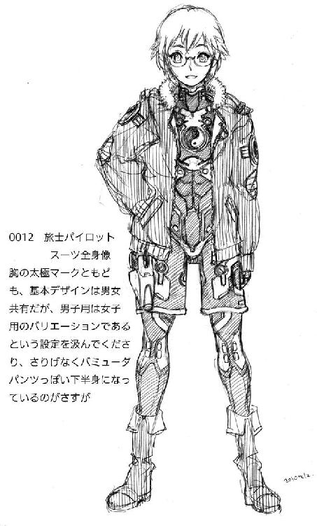

| ダマスカス・ハート〈下〉―南国戦隊シュレイオー〈2〉 神野オキナ・ベストシリーズ ダマスカス・ハート 南国戦隊シュレイオー2 (楽ノベ文庫) | |
| 神野 オキナ | |
| 株式会社マイナビ出版 (2016) | |
本書はリフロー形式で制作されています。本文は文字の書体と大きさを変えることが出来ますので、お好みの設定で読書をお楽しみください。
☆
翌日の昼近く。
「やほー、ふたりとも大丈夫ぅ？」
扉が開く音がして、能天気な井草の声が聞こえてきた。
旅士がのろのろと顔をあげるころにはとてとて、と十歳児外見のネコ耳尻尾付きが広間に歩いてくる。
「あれ？ どしたの？ 旅士ちん」
「ああ、ちょっとな」
それだけ言って、旅士は真っ赤な目を擦った。パックから、すっかりぬるくなったオレンジジュースをコップに注ぐ。
「アロウちんは？」
「奥の部屋だ」
「怪我は？」
「傷口は塞がってる。だけど失血の影響があると......思う。そのへんはお前の方が詳しいだろ？」
「ふうん......」
井草の尻尾が揺れて、目が「にやり」と笑いかけたが、旅士の雰囲気を見て、すぐに不審そうな表情になる。
「何か、あったの？」
珍しくシリアスな声で、井草は問うが、
「個人的なことだ、言いたくない」
いつになく強く、旅士は答えを拒絶した。
「？」
なおも何か言いかけ、しかし、井草はうつむいた旅士を見て言葉をしまい込んだ。
とてとてと奥の部屋へ行き、ノックする。
「アロウちん、大丈夫？」
少し間があって、ガウンの前を喉元近くまできれいに合わせたアロウが顔を出した。
「ああ、大丈夫だ。昨日は少し貧血でくらくらしたが、増血剤も飲んだし」
少女の顔も、どこか翳がある。
「......？」
意外にも、井草はアロウの様子に関しては何にも質問せず、
「じゃあ、基地に戻ろっか」
とだけ言った。
「ガスと電気、それと護符、戻しといてね」
「ああ」
旅士が立ち上がった。乾燥機から出したばかりで熱を持っているヨットパーカーに袖を通す。
「使ったのはガウンと毛布だけ？」
「そうだ」
うなずいて、アロウはため息をついた。
「......じゃあ、まあ、補充してくるわ」
誰か助けてくれないかなあ、といった表情で、井草は目だけで暗い天井を見上げた。
☆
「結局、結論はひとつ、ですか」
目の前の立ち机に置かれた、厚さ四センチほどもある紙の束を前に、御鏡泰斗は深く息を吐いた。
今や、御鏡グループをひとりでまとめているといわれる若き切れ者として、政財界にも広く知られた青年は、このところすっかりため息が癖になっているようであった。
日当りのいい、大きなガラス窓のはまった大広間である。
夏の陽射しの強烈さは、三重の窓ガラスのうち、一番外側の窓ガラスが黒く変色することで弱められている。
くるぶしまで埋まりそうな上等の絨毯が敷き詰められ、数こそ少ないが厳選された家具が置かれていて、この場にいるのは泰斗の他はひとりしかいない。
「信じられない......というより、信じたい連中の方が、今は多いかもしれんな」
いささか皮肉な口調で、車椅子の上の老人は笑った。
御鏡一族の中でもっとも貴族的な、細面で、理知的な顔立ちながら、どこか子供のような愛嬌がある。
豊かな髪の毛をゆったりと撫でつけ、広い額の下にある一重瞼の目は鋭く光り、まるで学者のように細いがしっかりとした強さを感じさせる手が、さりげなく車椅子の腕置きに添えられている姿は、車椅子の病人の弱々しさや、痛々しさなどというマイナスのイメージは皆無で、玉座に座る力強い英雄の絵を思わせる荘厳さに満ちていた。
「ほんのふた昔ほど前なら、悪夢そのものだが、この国は平和が長すぎたからな」
「......つまり、よけいな期待をして、勝手に踊りだす馬鹿が出る、ということですか」
「馬鹿ではない、マヌケだ」
老人は言下に決めつけた。
「平時において乱を忘れず、どころか平和の価値も意味も忘れ去り、暇つぶしに血道をあげた挙げ句の果てに、動乱を夢見るような者なら、マヌケとしか言いようがあるまい」
吐き捨てるような声だった。
「だが、そのマヌケどもに、なまじ力があるのが問題だ」
「確かに」
ゆっくりと......まるで老いたる王の意見に首肯する若き家臣のように、泰斗はうなずいた。
「しかもマヌケを煽る側が問題ですね」
「そうだ」
今度は老人──御鏡グループの会長、御鏡秀善は同意のうなずきを返した。
「間が悪いことに、落ちぶれつつあるとはいえ、それでも我々よりも遥かに強者だ」
「流しますか、情報を」
泰斗の目に笑みの色が付いた。
「『お祖父さま』からの情報なら、旅士も喜ぶでしょう」
「さて、どうかね」
苦く老人は笑った。
「あれとはロクに話をしたこともないし、私を嫌っておるだろうさ」
かつての高度成長時代、その手腕から「東の妖怪」もしくは、貴族的な外見も相まって「吸血鬼」と綽名されたこともある政財界の大立て者の顔に、拗ねた子供のような表情が浮かぶ。
まだその髪の毛が黒く、顔に皺を刻まれていなかった青年時代、この老人は夢見がちな、蝶の収集を趣味にするフランス文学好きの青年だったというが、こういう一瞬にその面影が垣間見える。
「そんなはずはないと思いますよ」
冷徹な若き「帝王」の顔に、年齢不相応なほど、邪気のない笑みが浮かんだ。
「何しろ旅士の血は半分、兄さんのものですから」
老人は苦い顔をして押し黙った。
泰斗は何も言わず、笑みを浮かべたまま老人が話を再開するのを待つ。
「......本当に、そう思うか？」
唐突に老人は沈黙を破った。
「ええ」
しっかりと、泰斗はうなずいた。
「私は他の親族よりも多く旅士に接していますから」
「......ふむ」
しばらく秀善は顎に手を当てて考え込んでいたが、
「よかろう、会いに行こう」
「わかりました、では切符を......しかし、こちらはともかく、どうやって沖縄の監視をくぐりましょうか。相手の情報網はかなりの手練れをそろえているようですし」
「......おい、泰斗」
「はい、父上」
秀善は少々不審そうに、
「私は沖縄へ行くのだ、わかっているだろうな」
通常、御鏡秀善が動いて人に会いに行く、などということは病に倒れてここ十年、絶えてない。
当然のごとく猛反対であるか、それとも泰斗が「旅士を沖縄からこちらへ呼ぶ」と勘違いしていないかと秀善は思っていた。
「はい、ですから沖縄と我々に張りついている神武の監視をどうしようかと思いまして」
「反対せんのか」
「反対したら、お聞き届けなさいますか？」
にこやかに、泰斗は尋ねた。
「......まあ、わかっているならいい。しかし、そういう『雑務』か......」
どこか腑に落ちない顔で、秀善はしばらく考え、
「そうだな、緋観の家に頼め。ついでに護衛役もな」
☆
「......おい、おいっ！」
携帯電話が通じなくなった。
さっきまでフルで立っていたはずの、液晶画面のアンテナ表示はゼロ。
脂ぎった指先が、壊れるほどの勢いでインターフォンのボタンを押す。
「わ、私だ。く、車だ、車を出せ！」
応答は、ない。
呆然と、大本総三はインターフォンを見つめ、我に返る。
「い、いかん、いかんいかん！」
脂肪のコートが分厚く覆い、「灰色熊」の綽名を頂戴した体をソファーから持ち上げる。
あたふたとドアに駆け寄ろうとすると、ドアノブが先に回転した。
「！」
彼の家族も、有権者もみたことのない、焦りと恐怖が男の顔を埋め尽くした。
ドアが開く。
そこには黒い、超ミニスカートの軍服を着けた、十四歳ほどの少女が立っていた。
「ひぃっ」
ゴルフウェア姿のまま、大本は腰を抜かし、絨毯の敷き詰められた床の上に転がった。
少女の意味するところはひとつしかなかった......つまり「死神」。
「ち、違うんだ違うんだ、違うんだ！」
大本は立ち上がることができないまま、手だけで後ろへ逃げる。
「気の、気の迷いなんだ！ あ、あれから何の音沙汰もないし、我々への疑惑追及の網は狭まってくるし、だから決して本気で天晴様を裏切るわけでなく......」
少女の、この暑さにもかかわらず黒い革手袋に包まれた片手が人差し指を立て、メトロノームのように左右に振られた。
「あなたは東北、北海道地方の議員さんたちの要ですから、お命はいただきません」
「ほ、本当かね？」
大本の顔が、安堵と脂汗にどっと崩れる。
すぐに、今までの命乞いを忘れたかのように、自分では鷹揚だと思い込んでいる笑みを浮かべた。
「そ、そうか。そ、そうだったのか......やはり私ほどの大物なら、それぐらいは当然だよな、はははは」
大本は立ち上がり、部屋の奥にあるバーカウンターに歩みよった。
コニャックの瓶を取り上げ、適当なグラスに注ぎ、一息に飲み干す。
長い安堵のため息をついて、
「そうだ、そうだよ、私の気の迷い、ジョークなんだ。私たちは天晴会長と一心同体、できれば君の姉上の誰かを嫁にもらって親戚にさえなりたいと思っておるよ。もっとも私があと二十年若ければ、だが......」
丸い背中をさらに丸め、コニャックをもうー杯コップに注ぎながら、くだらない冗談を言って笑う五十男に、神武南瑠は冷ややかな視線を送った。
「ええ、お命はいただきません」
少女の手が閃き、もう一杯口につけたばかりの男の首筋に、銀色の針が突き立った。
正確には針ではない。
先端に刃の付いた、薄い刃物だった。
「......それだけですが」
その道具──錐刀は、男の首筋に刺さった後、微妙なひねりを入れながら脊髄の一部を破壊した。
男は目を大きく剝き、その場にくず折れた。
軽い、鼾のような音をたてながら、動かなくなる。
少女は、無言のまま歩み寄り、男の首筋から錐刀を抜く。
筋肉の収縮で、男の首筋の傷は塞がり、肉眼では確認できなくなる。
手首のスナップで、袖口にあるケースに、ルネッサンス時代、暗殺道具としてメディチ家が開発したとされる刃物を納めると、少女は無感動に踵を返した。
歩きながら、ＧＰＳ連動型の衛星携帯電話を取り出す。
コール数回で相手が出た。
「南瑠です。終わりました」
「すまないね、南瑠」
電話の相手──東京の神武天晴は静かに言った。特にすまなさそうでもなければ、辛そうにも思えない。だがそれが彼の酷薄さではなく、娘に対し、本当にすまないと思っているからだと、南瑠は知っていた。
「いいえ、お父様」
「誰も殺していないね？」
「はい、お父様」
「ありがとう、南瑠」
少女の顔に、この時、初めて嬉しげな笑みが浮かんだ。
「はい、お父様」
それから数時間後、廃人となった大本は家族に発見され、大本に従うはずだった他の議員たちを戦慄させた。彼らは大本の状況に恐れをなし、それまで大本主導の下で青図面が引かれていた、神武天晴を切り捨てて自己保身を行うという計画は、すべて宙に浮いたまま立ち消えとなった。
☆
（.........）
なんとも言えぬどんよりした気分で、旅士は井草の後ろについて歩いていた。
肩に掛けた銃や装備は昨日の半分なのに、三倍は重く感じられる。
井草も黙っている。
旅士の後ろにいるアロウも黙っている。
どんよりした空気が三つ固まって、ますますどんよりである。
「えーと、じゃあ、帰るね」
井草が、盛り下がったツアーを率いるコンダクターのような、うつろな明るさで言った。
「うん、頼む」
何か言わないと、この空気がさらに重くなりそうで、旅士は思わず声を出した。
「.........」
井草は、何か旅士に尋ねたい表情になったが、それを飲み干して懐から護符を取り出し、中指と人差し指で剣指を結びその間に挟む。
「緊急宿地、移送三人、速即叙律令、疾！」
護符が輝いて、次の瞬間には懐かしい格納庫に出ていた。
「ふう」
ともあれ、旅士はため息をつく。
「お帰りなさい、先輩」
虎鈴の笑顔だけが変わらず、それが何ともありがたい。
「ただいま、虎鈴」
思わず、アロウと声がハモった。
「.........」
顔を見合わせそうになり、慌ててふたりとも視線を外す。
「どうしたんですか、ふたりとも？ 何か雰囲気、変ですよ？」
「き、気にするな、ベル」
「ああ、ちょっと行き違いがあっただけだからさ」
「行き違い」という言葉を口にした瞬間、アロウがこちらを睨み付けた。
「！」
思わず顔が強張るのを感じながら、旅士は視線を横に逸らす。
奇妙なものが目に入った。
これまた見慣れた「雷王丸」状態のシュレイオー01の隣に、同じぐらいの人型機械が立っている。
見覚えがあった......蒼鉄色の、ローマ時代の剣闘士を思わせるデザインのボディ、背中の折りたたまれた翼、鳥のくちばしをモチーフにしたらしい頭部。
「おい、あれ......」
井草の方を振り向いて、言葉を続けようとした時、見覚えのない人影がこちらへやってくるのが見えた。
「あ、そうだ、昨日のアレの後、私を助けてくれた人がいるんですよ、紹介しますね」
虎鈴が振り向き、人影に手を振る。
人影も手を振り返し、小走りにこちらへ近づいてくる。
「敵の側にいたんですけれど、何かいろいろ嫌なことがあったらしくって、こっち側に逃げ込んで来たんですよ......『窮鳥も懐に入れば猟師も是を打たず』って言葉もあるんで」
虎鈴がそこまで言った時。
ぞわ。
思わず旅士の首筋の産毛が逆立った。
今まで、滅多に晒されたことのない「狂気」と「殺気」がない交ぜになって旅士の肉体を貫通し、人影へ殺到する。
「な......？」
振り向いたが、そこにいるのはアロウしかいない。
王女の目は、異様な輝きを示していた。
目だけではない。表情すべてが憎悪という色で塗りつぶされていた。
人影が近づいてくる。
赤毛のロングヘアの少女......身長はアロウと同じぐらいだろうか。
「ハァイ、アロウお元気？」
唇にだけ笑みを浮かべ、少女は片手をあげた。
「リミティア......リミティア・Ｍ・ボークト」
「名前を覚えていただケて、嬉しいワ」
少々奇妙なイントネーションの日本語で答え、少女──リミティアは肩をすくめる。
ふたりの間に、突如出現した異常な緊張感に、旅士も、虎鈴も、井草でさえも身動きができなかった。
「貴様......」
アロウの言葉が、急に母国語に切り替わった。
「この外道め！」
もしも、アロウがこの時、いつもの位置にホルスターを装着していたら、リミティアの命運はそこで尽きていたに違いない。
だが、今日のアロウは昨夜のことで気落ちし、愛銃を納めたホルスターを右手に提げていた。
ために、銃を抜くまでに一秒に満たないタイムラグが生じ、その間に旅士と虎鈴がアロウを羽交い締めにした。
「やめろ、何をするつもりなんだ！」
「そ、そうですよ、先輩っ、相手は亡命者なんですよおっ！」
「放せ、放せえええっ！」
普段の姿からは信じられないほどの力でふたりをふりほどこうとしながら、アロウは叫んだ。
「こいつは、こいつは敵だ！ 私がこの手で殺してやると決めた女だ！ 放せ、今殺さないと君らも死ぬぞ！」
「井草っ！」
旅士が怒鳴って、井草が我に返る。
「な、なななに？」
「アロウを眠らせろっ！」
「あ、うん、わかった！」
井草は大慌てで懐から護符を一枚取り出し、
「急速快眠安息瞬時、疾！」
と唱えざまにアロウの額に張りつけた。
護符は瞬時に燃え尽き、アロウの身体から力が抜ける。
「......ふう」
ぐったりと旅士はアロウを抱えたまま格納庫の床に座り込んだ。
「一体、こいつはどういうことなんだ？」
昨日のことがあるとはいえ、これほどまでにアロウが半狂乱になる理由を旅士は想像できなかった。
「あたしにもわかりません～」
旅士の横で、ふるふると虎鈴が首を振る。
「とにかく、悪いけど、その護符は剥がさないまま自室に運んで頂戴」
井草がため息混じりに頼み込み、静かに立ちつくすリミティアを見やる。
「何か、昔にあったみたいね。あなたたち」
「えエ」
赤毛の「魔女」は静かな目を眠るアロウに向けながらうなずいた。
「色々トありマしタ。嫌ナこト......私にも、あろうにモ」
☆
「起動実験はいかがでしたか？」
地下深くに設けられた「施設」のロッカールームに静かに響く、神武天晴の声に、タオルを手にしたＳは汗と衝撃緩衝ジェルの混合物を拭いながら笑った。
「素晴らしいですよ、天晴様」
珍しく、頬が紅潮していた。
「素晴らしい出力と反応速度です......あれなら『シュレイオー』を破壊出来ます」
「そうですか。ただし、稼働時間には用心してください。あれはあまり長く動かすわけにはいかない。やはりフレームの強度が足りませんから」
「わかっておりますよ......ですが、二十五分稼働できるのなら相手を殲滅するには充分です」
「絶対に倒す必要はありません」
天晴は悠然と微笑んだ。
「相手があなたと戦って、しばらく戦えない程度のダメージを与えてくれれば」
「ですが、やりすぎても問題はないでしょう？」
挑むようにＳが微笑む。
「ええ、もちろん」
天晴は鷹揚にうなずいた。
「ですが、くれぐれもあれを壊さないように。あれは売り物ですのでね」
「あれを、ですか？」
「ええ。もっとも実際に販売するのはしばらく後ですが」
天晴の笑みが深くなる。
「そうですか」
呆れた顔になるＳに天晴は微笑んだ。
「ええ。我々は企業ですのでね」
「そうですか......」
Ｓは少し考えていたが、その表情が次第に弛緩し始め、やがて、おずおずと、
「では、もう少し起動実験をしてきてもよろしいでしょうか？」
と訊いた。
「構いませんよ。慣れは必要ですから」
「ありがとうございます」
頭を下げると、Ｓはどこか焦点の合わない目になり、ふらふらと立ち上がった。
だらしない笑みを唇の端にひっかけたまま、Ｓは天晴に挨拶もせず、そわそわとロッカールームを足早に去っていく。
その姿が、出入り口に消え、足音が遠のいていくと、天晴は目を細めた。
「そう、慣れてください......あなたは重要な部品ですからね」
☆
目が覚めた。
見覚えのある、自室の天井。真新しいシーツの感触が心地よい。
急激な環境の変化にぼんやりとしていた頭が、ゆっくりと直前までの記憶をプレイバックさせる。
激情に駆られて銃を抜き、旅士たちと井草に取り押さえられたのだ。
意識が途切れたのは、恐らく、あの時、井草が自分の顔に貼った護符のせいだろう。
ため息が出た。
昨日の出来事があって、精神的にも肉体的にも不安定だったとはいえ、あれでは下品で野蛮なアメリカの海兵隊員そのままで、間違いなく王族のすべきことではない。
「......最低だ」
ぽつりと母国語でつぶやいて、アロウは再び目を閉じ、額の上に左腕を置いた。
右手に、まだ銃を握っていることに気づき、手を離す。
「くそ......最低だ、本当に最低だ」
押し殺した声でつぶやきながら、アロウは寝返りを打った。
ノックの音がして、ドアが開く。
「姫様、お起きになられましたか？」
ナツメの声だった......もっとも、この部屋で他の人物であるはずがないが。
「ああ、大丈夫だ」
アロウはベッドの上に半身を起こした。
「お着替えになさいますか、それとも何か軽くお食べに？」
言われて、自分がまだ水着の上からガウンを羽織っただけだと気づく。
「着替えよう」
「お風呂の準備はできております」
「うむ」
うなずいて、アロウはベッドから降りた。
寝室を出て、バスルームに入る。ナツメはそのままついて来た。
「私も入ります。久々にお背中、お流しいたしましょう」
「私はもう子供ではないぞ、ナツメ」
アロウは苦笑する。父のソノムラはさすがにできないが、娘のナツメは同性同士のせいか、下手をするとトイレにまでついて来かねない生真面目さがある。
「たまにはよろしいでしょう？ 日焼けもなさってますし」
言いながら、ナツメは器用な手つきでアロウのガウンと水着を脱がせ、自らもメイド服を脱いだ。
昨晩の事も、昨日の事も一切、訊こうとはしない。
それがありがたかったが、
「さささ、参りましょう参りましょう」
「あ、ああ......そうだな」
いつになく押しの強いナツメに、少々戸惑いながらアロウはうなずく。
「ささ、姫様」
バスタオルを身体に巻きつけたナツメが、風呂場へと誘う。
☆
「何ガあっタのか、きかナいノ」
リミティアの言葉に、虎鈴は首を横に振った。
シュレイオー01のパイロット用ブリーフィングルームは、今、ふたりしかいない。
旅士はアロウを自室に連れて行くと、そのまま先に帰ってしまい、オリエも井草も用事があるとかで早々に執務室に引きこもってしまった。
「いいんです。聞いたらアロウ先輩かリミティアさん、どっちかを嫌いになるかもしれないし......それって、何か馬鹿馬鹿しいと思うんです」
リミティアよりも頭ひとつ背の高い虎人間の少女は、にっこりと微笑んだ。
「過去は、絶対に変えられないけど、未来を嫌な方向に変えてしまうことって、あるでしょ？ それが嫌なんです」
虎鈴の口元に寂しげな笑みが浮かんだ。
「あたし、以前、それで幼なじみの子を傷つけちゃったことがあって......馬鹿ですよね」
ため息ひとつついて、虎鈴はすぐに顔をあげた。
「知ってます？ 人間や、あたしみたいな獣人の細胞って、一年半たつと全部入れ替わるんですって......あたし、最近まで知らなかったけど、それってつまり、一年半たつと完全に違う人間になってる、ってことですよね」
「そウ......でもネ、コスズ」
リミティアは寂しそうに笑った。
「入レ替わルのは身体ダケ。心まデは新シくなラナいワ」
「それは、気持ちの持ちようです」
「私は、あナたを裏切るカモしれないのヨ？」
「いいです。何もかも疑ってかかるより、全部信じて、裏切られる方がいいですから。その方が、みんなの笑顔になる、そう思うんです。きれい事ですけれど、その方がいいってあたし、思うから」
にっこり笑う。
背の高さや、プロポーションで隠されていた年相応の笑顔。
「だって、『きれい事』って、実現が難しいだけで、本当は絶対その方がいいって、みんな思っているわけですもん」
一瞬、リミティアはキョトンとした顔になった。
「日本人は不可解ダわ......あナタような考えカタの人なんテ、どらまダケの存在ダと思っテたけれド」
「うーん、バレましたか？......本当は受け売りなんですけどね。テレビの」
虎鈴はぺろりと舌を出した。
「正確に言うと、ちょっと違うかな。あるテレビドラマの主人公が、そういう考えの人で......それを見ていいなあ、って。だからあたしもそうしたいんです」
笑うと、虎鈴は拳を作り、親指だけを立ててぐいっと突き出した。
「我ながら子供だなあ、って思うんですけどでも......ね？」
リミティアの目が丸くなる。
ＤＶＤの画面の中、古代ローマの剣闘士に由来するというそのポーズを、彼女は何度も見ていた。
「あなた、ユースケのファンなの？」
「あれ？ 知ってるんですか？」
虎鈴が今度は目を丸くした。
「ＹＥＳ、ＤＶＤも持ってるは」
呆然と、リミティア。
「うわぁ！ ホントに？」
虎鈴は目を細め、ぱちんと両手を打ち鳴らした。
☆
ピンセットが、装甲板をつまみ上げ、慎重に、慎重に空間の中に入っていく。
まだ外部フレームが目立つそれの近くまで来ると、装甲板をつまんだピンセットの動きはますます慎重になった。
息を止め、さらに慎重にフレームの上ぎりぎりに、装甲板を置く。
装甲板のカーブに合わせて曲げられた治具がそっと装甲板に当てられ、繊細な動きでフレームぎりぎりに装着される......フレームに触れた時、音はしなかった。
大きく息を吐き出し、さらに深呼吸。
慎重に、雪の結晶を扱うように治具を空間から引き抜くと、糸のように細いドライバーを差し入れ、装甲板の縁にある小さなネジを外側から順にそろりと回していく。
すべてのネジを回し終えると、髪の毛よりも細い先端を持つ小型バーナーを差し入れ、周囲を埋めていく。
これを四回繰り返し、最後の一枚の処理を終えたあたりでインターフォンが鳴った。
「はいはい」
井草は机の上の空間に、「固定」の護符を張りつけると、椅子から降りた。
司令室の扉の鍵を開ける。
「こんにちはー」
虎鈴が、リミティアを後ろに従えて立っていた。
「あのー、視聴覚室の鍵、ネコちゃんのところにあるってオリエさんから聞いたんで......」
「ああ、いいけど......どっちの？」
視聴覚室という名前の「シュレイオー」職員用娯楽シアターは、「アニメ」「特撮」「一般」の三室に分かれている。
「えーと、『特撮』の方で。リミティアさんもそれがいいって」
「ふーん......大丈夫なの？」
アロウと何やらいわくありげな人物とふたりっきりで、という意味ではなく、「その趣味についてこられるか」という意味で井草がささやいた。
「あ、大丈夫です。リミティアさんけっこーマニアですから」
「あら......意外」
「ところで......あれ、何ですか？」
虎鈴が指さしたのは、机の上に置かれ、護符を貼られた水槽のようなものだ。
中には、銀色に輝くメカのミニチュアが浮いている。
「ああ、あれね」
にんまりと井草は笑った。
「新しい秘密兵器」
「秘密兵器？」
「そ、見てみる？」
「はいはい」
「あ、リミティアちゃんもおいで」
「え？」
リミティアは戸惑った表情を見せた。興味のないものを無理矢理見せられる迷惑さから来るものではなく、むしろ「秘密兵器」と呼ぶ存在を、部外者......どころか、敵かもしれない自分に見せるという神経に驚いていた。
「ほらほら、入って入って」
促されるままに中に入る。
「うわー細かいですねえ」
虎鈴は机の端に両手を置いてしゃがみ込むと、下から見上げるように空中に浮いた「秘密兵器」を眺めた。
裏から見ると、細かい作り込みがよくわかる。
「でしょー。結構、苦労してんだから」
「触ってもいいですか？」
元からミニチュアとか玩具関係に目がない虎鈴である。今にも触りたくてうずうずしていたが、井草は首を横に振った。
「駄ぁ目、これはそういうもんじゃないから」
「なぁんだ、つまんない」
「まあ、いざとなったら嫌っていうほど触ることになるわよ」
「で、これ何て名前なんですか？ ガ○ラとか？」
「亀の形してるからってそれはないでしょ」
井草は苦笑しながら、
「いちおーね、名前は『真・シュレイオー』ってなってるんだけど」
「そんな、ゲッターロボじゃあるまいし......え？ ひょっとしてこれもシュレイオーですかぁ？」
「本当はそっちが今使ってる奴って、これのオプションパーツなのよ」
「まっさかあ」
「.........」
リミティアはふたりの会話を聞きながら、これがミニチュアにつけられた「設定」なのか、それとも予定されている「事実」なのか、判然とせずに呆然としていた。
「いったい、この組織の機密というのはどうなってるんだ？」
思わず英語でつぶやく。
「あ、リミティアちゃん、これの資料、いる？」
井草が能天気に話しかけた。
☆
こういう時、ナツメは人から話を聞き出すのが上手いとアロウは思う。
自分の計画が成功したかどうか、それから何があったのか、ひとことも問わず、ただ甲斐甲斐しく世話を焼き、ひたすらこちらから話を切り出すのを待つ。
最初は頑なだった心も、次第にほぐれてきて......長く暮らしている間柄ゆえの気安さが顔を出すまで、時間はかからない。
気がつくと、アロウはナツメに背中を洗ってもらいながら、旅士とのことを（もちろん、いくつかの重要項目は抜かして、『手を握ろうとした』程度にボカしておいて、だが）ほぼ洗いざらい話していた。
「なるほど......旅士様が、そんなことを」
「ああ、そうなんだ......だからこそ、私は旅士を......」
「姫様の行いは正しいと、存じます」
きっぱりとナツメは言い切った。
「このようなことを父が聞いたら怒るかもしれませんが、その場合、むしろ何もせずにいる方が、私は女として許されざることだと愚考いたします」
「.........」
「ですが......」
ナツメは湯船から優しくお湯をアロウの肩に注ぎながら口をへの字に曲げた。
「旅士様は無神経にすぎますわ」
「そう思うか？」
ちょっとだけ救われた思いでアロウは言ったが、
「ええ。男の甲斐性がありません。自己中心的です。身勝手すぎます。自己修練も結構ですが、そのために誰かを泣かせるのは屑です。まして大事な姫様を」
とナツメは容赦がない。
「まったく、あの○×□△××！ ○□な△△△の□××に×××！ まったくもって、腹が立ちます。今度旅士様に会ったら、ナツメは一発ぶん殴ってやりますわ！」
「お、おいナツメ......いくら何でも言いすぎだ」
放送禁止用語まで駆使して旅士を罵倒され、最初はともかく、しだいにアロウは不愉快なものを感じ、口を挟んだ。
「姫様はお優しすぎるのです。そのような無礼者、世が世であれば切腹打ち首、ハリツケ獄門ものですわ」
「今は今だ、そんな考え方をしても、仕方があるまい」
「姫様も、もう少しお怒りなられませ！」
今度はナツメ、アロウに食ってかかってきた。
「かようなことは、もっとお怒りになられるべきです。女が恥をかかされたのですよ！」
「いや......恥は私が勝手にかいたものだ......それに、ちょっと思い上がっていた」
アロウは立ち上がり、湯船の中に身を沈めた。日本式の風呂はこういう時に気持ちがリラックスできてありがたい。
「私は、自分が暴力のプロで、彼がアマチュアどころか、そんなものとは無縁の完全な民間人だから、旅士が弱い、守るべき存在だと思い込んでいたのだ。彼のプライドのことなど、考えたこともなかった。だから、私も自分の身勝手な思い込みを旅士に押しつけようとしたのだ......ある面、同罪だな」
波打つ湯船の水面を見つめながら、アロウは苦く笑った。
「所詮、血塗られた手だ。女神にはなれない」
「いいえ、絶対にそんなことはございません！」
ナツメはぽん、と言い切った。
「姫様は女神にも天使にもなれます。ナツメが絶対保証いたします」
「.........」
アロウは同年代のメイド少女の言葉に、思わず微笑んだ。
少なくともナツメはアロウをそう信じているらしい......そして、その言葉を聞いていると、何となく、少女の心に微かな希望が残るような気がする。
しかし、このところ浮かれていて出番のなかった現実主義が、アロウの心の中で首を振る。だが、その否定の心は部屋に帰ってくるまでと違い、あまり力を持たないように思えた。
（ナツメの言うとおりかもしれない）
不思議と、そんな気になってくる。だが、それを表に出すのは気恥ずかしいから、言葉だけは苦く、
「......ナツメは、私を買いかぶりすぎているぞ」
「そうでございましょうか？」
ナツメはまだ怒った風に口を尖らせたが、少し気が楽になり、リラックスして目を閉じたアロウは、その目が優しく笑っているのを見過ごしていた。
☆
家に帰る。
二階に上がってベッドに倒れ込む。部屋の隅にある電話機には留守番伝言があることを示す点滅があったが、聞こうという気分にならない。
「間違って......ないよな」
自分自身に言い聞かせる。
あのまま、アロウの肌に安らぎを求められたら、どんなにか楽だったか。
ただの美人ではない。少なからず好意を持っている相手だ。
あれが普段の、偶然が産んだ夜なら......もしくは、自分が人を撃った夜でなければ、喜んで旅士は少女を抱きしめたに違いない。
だが......それは二年前、まだ弱かった頃の自分の繰り返しにしかならないのではないか。
その怖さがあった。
何も決断できず、ただ怯え、誰かが助けてくれるのを待つだけだった、情けない自分。
戻りたくはなかった。二度と。
できれば、あの時、自分を励ましてくれた、導いてくれた人たちと同じ存在になりたいといつも願っている。
アロウを助けるために人を撃った。殺したことに罪悪感はあっても、後悔はない。
だから、あそこで苦しむのは自分だけでいいと、決断したのだ。
アロウもわかってくれる......そう思ったのに。
いずれ、アロウもわかってくれる......でも、どうしてこんなにモヤモヤしたものが心の奥にこびりついて取れないのか。
「くそ」
つぶやいて旅士は寝返りを打った。
電話が鳴る。
旅士はまた寝返りを打った。
電話が鳴る。
もう一度、寝返りを打つ。
電話が鳴る。
（今は誰とも話したくないんだ）
心の中でつぶやいて、また寝返りを打つ。
電話が鳴り続ける。
「......くそ」
あと一回で録音された音声が流れる、という時に、旅士は受話器を取った。
「はい、どなたでしょう」
「久しぶりだな、旅士」
ぶうんという盗聴防止装置の音をバックに聞こえてきたのは叔父の──御鏡泰斗の声だった。
「泰斗叔父さん......」
「実は頼み事がある」
叔父は半年ぶりだというのに、さっそく用件を切り出した。
「『シュレイオー』の長と連絡が取りたい」
「え？」
「お前が『シュレイオー』に所属していることは知ってる。だから頼むんだ。空いている日にちを聞いてくれ、こちらから出向く」
「叔父さん、どうして......」
「電話で言える用件ではないんだ、頼む」
「.........」
旅士は受話器を持ったまま黙った。
叔父の声は冗談を言っているようには思えない。そもそも、冗談を言ってるところなんて見たことのない人物である。
「わかった、引き受けるよ......で、どうやって日時を伝えるの」
「秘書課の電話番号は覚えているな？」
「本社の？」
「そうだ。そっちにかけてくれ。必ず名前を言えば取り次ぐように言っておく」
「わかった」
「すまんな。では、切るぞ」
そして通話が終わったことを知らせる信号音が受話器から聞こえ始めた。
「......何があったんだ？」
つぶやいて、旅士は自分たちの組織のボスの姿をこの時ようやく思い出した。
頭の中で、金髪碧眼ネコ耳尻尾付きの珍奇な生き物が「にばーっ」と笑う。
「うわ......アレを引き合わせるのか」
思わず旅士は頭を抱えた。
※１「ゲッターロボ」......永井豪とダイナミックプロ原作のスーパーロボットアニメ。ちなみに日本初の合体変形ロボットでもあり、原作版の「ど」ハードな展開は「新世紀エヴァンゲリオン」の監督、庵野秀明を筆頭に、様々なアニメ、漫画関係のクリエイターたちに影響を与えた。なお、「ゲッターロボ」は三機合体ロボットの総称。のちにタイトルは「ゲッターロボＧ」に変更されたが、番組内の呼称は「ゲッターロボ」のままだった。後にゲーム「スーパーロボット大戦」において登場した新型ゲッターロボの名前が「真・ゲッターロボ」。
☆
「.........」
なんとも複雑な表情で、自宅の鏡の前、旅士はネクタイをいじった。
身にまとっているのは、東京から持ってきた、数着あるスーツのうちの一着である。
たった半年前までは、家に戻れば毎日のように袖を通していたし、今もサイズは変わっていないのに、妙に窮屈に思える。
（こんな形でまた袖を通すことになるなんてなあ）
思いながらも、手はネクタイを器用になおしてしまう。
（しかも、こんなに早く実現するなんて）
あの海辺での襲撃から一週間も経過していないから、罠の可能性もある。本当に相手が御鏡泰斗なんか、さんざんに調べるものだと思っていたら、井草の返事は「おっけー、いつでもいいから、って言っといてよ」という、まあ、想像通りの代物であった。
これ以外にこの件に関して井草が言ったことといえば、せいぜい「うーんと、シーフードがいいなあ。ワリカンで」という程度で、旅士はあまりのことに電話するのを躊躇ったほどである。
だが、意に反して泰斗の返事は「なるほど、らしい話だな」という苦笑混じりのものであり、会合転じて会食の予定はトントン拍子に進んだ。
とりあえず、身支度を終え、家の鍵をかけると、例のドアを通って「シュレイオー」基地へ向かう。
「あろはおえ～」
日本有数の財閥の長と会食だというのに、ブリーフィングルームで待っていた井草は、高そうな白いサマードレスこそ着けているが、中身はいつものお子様姿で片手をあげた。
「お前なー」
軽い頭痛を感じながら、旅士は文句を言った。
「その軽い性格を何とかしろとは言わないけどさ、せめて外見ぐらいは大人バージョンで出て来いよ」
「だってー、お食事会だよ？」
燃焼効率のいい姿で、思いっきり食べようという魂胆らしい。
「食い放題の焼き肉屋に行くんじゃないぞ」
「似たようなもんよ」
「だから、会食ってのは食べながら『話す』ことがメインで、『食べる』ことがメインじゃないっての」
「大丈夫、どっちも堪能してくるから」
「あのなあ」
旅士がさすがに呆れ果てた、という顔をしていると、アロウとナツメが入ってきた。
「遅れてすまぬ」
こちらはゆったりとしたサマージャケットに、薄手のブラウス、パンツルックにローヒールという、王女らしからぬ出で立ちである......もっとも、この場合のアロウは、あくまでも旅士と井草の護衛という名目だから、当然と言えた。
ナツメはいつも通りのメイド服である。
そして、当然のようにアロウは旅士と目を合わせようとはしなかった。
この一週間、アロウは旅士に話しかけもしないし、たまに旅士の方から意を決して話しかけても、ロクに返事もせず、思いあまって問いつめようとしたその場合は、このところ影のように張りついているメイドのナツメが横からしゃしゃり出てきてしまうというような、苛立つ距離が開いたままになっている。
旅士がプレゼントした眼鏡はそのままだが、これは単に髪を切ってしまったため、仕方なくかけているのか、それともまだ「望み」があるという意味なのか、未だに旅士は摑みかねていた。
「......あれ？ 虎鈴は？」
本来ならあの虎人間の少女も、ここに来るはずである。
「知らぬ」
短くアロウは言い捨てた。
「ベルはあの女の方がいいそうだ」
どこか拗ねたような口調である。
（無理もないかもな）
旅士は思った。このところ、虎鈴はリミティアとべったりだ。
何でもリミティアは、虎鈴と同じ特撮マニアだったらしい。名護の砂浜での襲撃事件で命を救ってもらった上、同じ番組のファン、ということもあり、虎鈴の方がくっついて回っている。
（アロウにとっては虎鈴は妹みたいなもんだったし......取られたと思ってるのかもな）
そう考えるとちょっと微笑ましい。まるで子供の喧嘩である。
もっとも、旅士がアロウとリミティアの間に何があったかを知らないからこそ、こんなのんきな考えにもなるのだが。
「そういうワケじゃないわよ」
井草が「やれやれ」という顔で笑った。
「虎鈴ちんは本日はお留守番なの。まあ、前回のこともあるから、いざというときに仙術機持ってきてもらおう、ってことで」
「その間、あの女と過ごすのだろう」
絶対にアロウはリミティアの名を口にせず、たまに話題的に触れねばならない場合は今のように「あの女」呼ばわりする。
「まったく、イクサもベルもお人好しすぎる」
「そかな？」
「そうだ！ 大体、あの女を拘束もせず、監視もつけず、基地の中を自由に歩き回らせるなんて、どういうことだ？ 我々が留守にしている間、破壊工作をしかけるかもしれんぞ」
「大丈夫」
井草は大きくうなずいた。
「どうしてそう言える」
「直感よ、直感」
「.........」
呆れ果ててアロウはため息をつき、頭を振った。
「じゃ、みんな揃ったことだし、そろそろ行こうか！」
☆
「今、何時だね」
車椅子の秀善に言われ、泰斗は苦笑した。
「お父さん、これで八度目ですよ」
「九度目だ」
秀善は即座に訂正した。この老人は、表舞台から引退してからというもの（泰斗とふたりきりの場合のみだが）妙に子供っぽくなった。
現役でいたころは、眉一つ動かさずに泰然自若と時間を待っていたのだが。
（やはり、お年を召されたということか。それとも、孫と会うからか......）
思いながら泰斗は手首の腕時計を見た。
「約束の時間まであと五分ですよ」
「うむ、そうか、うむ」
どうやら子供っぽい行動の自覚があるのか、秀善は仏頂面で、
「すまんな。旅士と直に会うのは初めてなのでな、どうも緊張してしまうよ』
珍しく言い訳しながら窓の外を見やる。
（思えば難儀な立場だな、この人は）
泰斗は内心、苦く笑った。
秀善は──おそらく、旅士の父に対する申し訳なさもあるのだろうが──御鏡の家の中で一番旅士のことを気にかけていながら、少年の身の安全をはかるために一番遠い場所にいなければならない存在だ。
それが奇跡的にこうやって距離を縮めることができ、その途端に自分が孫に対してどんな顔をすればいいのか知らないのに気づいて慌てているのだ。
（皮肉な話だ）
周囲からの狙撃を防ぐため、窓ガラスに見せかけた高品位立体映像の「窓」を見下ろすと、白い砂浜が広がっている。
遠くに見えるのは那覇の夜景だ。最近作られたばかりの高級リゾートホテルではあるが、御鏡グループの長ふたりに相応しいかどうかかわからない。
やがて、泰斗たちより少し離れた位置に立っているボディガードが耳もとを押さえた。
「旅士様、ご到着です」
エレベーターの到着を知らせるベルの音がして、毛足の長い絨毯にはほとんど吸収された足音が近づく。
ドアが開いた。
秀善が破顔しかけ、慌てて顔を引き締める。残念ながら今日は、孫との関係を温めるためだけにここへ来たわけではない。
四人の人影が、ボディガードたちに案内されて入ってきた。
金髪碧眼、ネコの耳と尻尾を生やした十歳前後の少女を先頭に、旅士と、白人のクールビューティな少女、さらにその後ろに影のように細い目をしたメイドが付き従ってくる。
（何ともユニークな会食になりそうだな）
「こんばんはー。およばれしにきましたぁ」
まるで、夏休みに優しい祖父母の待つ親の実家へ里帰りしてきた子供のように、リラックスしきった金髪のネコ耳少女が笑う。
☆
豪勢な食事だったとは思う。
だが、どんな味がしたのか、さっぱり旅士にはわからなかった。
何しろ秀善との会食など、政財界の大物でも滅多にできないし、東京にいた数年間は、祖父は顔を直視することすら躊躇われる「絶対存在」だった。
必死で頭の奥底に行ってしまったテーブルマナーの知識を引っ張り出し、何とかそつなく食べ終えたことに対する安堵の方が勝っていた。
井草は外見通り「元気いっぱい」に食べ、アロウは戦闘を警戒してか、あまり食を進めなかった。
秀善は旅士に二、三話しかけたが、旅士自身は生返事よりはましな言葉を返したにしかすぎず、むしろ横の泰斗が井草に話かけ、様々な質問をし、笑い合う方が盛り上がっていた。
ともあれ、旅士は食後のコーヒーをすすって、ようやく舌がまともに機能していることに気づく。
「さて、本題なのだが......よろしいか？」
泰斗が切り出した。
「はいはい、いーですよー。おいしい食事だったし、みんな丸い顔のうちに、嫌な話はすませちゃいましょう」
能天気に井草。旅士は爪楊枝で歯でもせせり始めたら後ろから殴るつもりだったが、さすがにそこまで馬鹿ではないらしい。
「では、そういうシリアスな話し合いに似合うように、ちょっとお色直し」
言うと、井草はサマードレスのポケットからハンカチを取り出して上へ放り投げた。
ぶわっとハンカチが井草の頭上に大きく広がり、ボディーガードが咄嗟に懐へ手を入れるが、それをひっつかみ、くるりと井草が一回転すると......もうそこには二十歳前後の金髪碧眼の美女が、白いイブニングドレスをまとって座っていた。
「では、始めましょうか」
旅士たちは見慣れているが、初めて見る人間には信じられないマジックに、泰斗はおろか、秀善も目を丸くしたが、さすがにふたりとも、それで度を失うようなことはなく、すぐに会話は再会された。
「その前に、ご紹介しておく人がいます」
泰斗が、ボディガードのひとりが手渡したリモコンのスイッチを入れた。
旅士たちがついているテーブルの下手、入り口近くの天井から五十インチの液晶プラズマディスプレイが正面と左右の計三台、静かに降りてくる。
双方向らしく、ディスプレイ本体にＣＣＤカメラがついていた。
左右の二台に像が結ばれる。
「ご紹介しましょう、宮内庁陰陽課の課長、土師雅くん」
古風な黒髪の美女が静かに頭を下げた。
「そして、内閣調査室の迫水達夫室長」
細身ながら、真っ黒に日焼けした五十がらみの壮漢が同じく頭を下げる。
「では......我々の摑んだ情報では、神武はかつてない規模で武器を集めていることが判明しています。人員も含めて」
旅士には初耳の話で、思わず井草を見るが、その当人はさっきまでのお子様姿からは想像もつかない、艶やかな笑みを浮かべて、泰斗を見る。
「元兵士が判明しているだけでも千二百名、日本国内に潜入している形跡があるとの報告もあります」
「根拠は」
井草が静かに訊くと、迫水が「ではご説明を」と話を継いだ。
「先月、外務省の方へ、大量のパスポートとビザの発行を融通しろという圧力が、神武とつながりのある議員にありまして」
迫水は静かに説明を続ける。
「その議員がどなたかの通報で先週逮捕されたのですが、その折、そのパスポートの顔写真を、とある北の友人の方へ照会しましたら......これが、ほとんどソビエト軍の元兵士と判明しました」
「どなたかの」のところで、迫水はちらりと井草を見た。
だが、言葉そのものはよどみなく続く。
「さらに最近、大量のロシア産食料品の輸入を神武が行っていることが判明いたし、また、神武系列の海運会社の輸送船が数隻、運輸関係に提出した書類からはあり得ない航路をたどり、密かに関東圏の港に入港した記録もあります」
真ん中のディスプレイに世界地図が表示され、さらに日本がクローズアップになった。
関東圏の港にいくつか点滅が現れ、そのいくつかに窓が開いた。
駐車場監視のビデオカメラから撮影されたものらしい粒子の粗い映像で、半袖姿の厳つい男たちが、不釣り合いなほどきれいな観光バスに分乗していく写真。
「地元警察や住民に聞き取り調査をしまして、英語ではない言葉を喋る白人たちが大量にバスなどに分乗して立ち去って行くという報告もございます」
「千二百人......ねえ。師団か、軍団クラスってトコかしら......で、どこに行ったかはわからないの？」
「おそらく、位相空間を使った隠れ家を何処かに持っているものと思われます」
井草の問いかけに迫水が目配せをすると、雅が報告を引き継いだ。
「この数カ月、宮内庁陰陽課が観測しているだけで、関東を中心に二万平方メートル相当の位相空間が新たに作られ、固定化しています。残念ながら、何処に出入り口があるかは特定できませんが」
「まぁ、位相空間の出入り口は特定不能、と言ってもいいぐらいだものね」
他ならぬその位相空間の中に基地を作って、その恩恵にあずかっている井草がうんうんと訳知り顔でうなずいた。こういうところは子供状態の時と変わらない。
さらに、もうひとつ重要なことが、と雅は続けた。
「アメリカから、数体の術式鬼が横流しされているのです」
「正確には九体だ」
泰斗が修正した。
「随分な総力戦を挑んでくるのねえ」
オーバーだこと、と井草は呆れ顔になった。
「完全に大赤字......どころか、会社が傾くんじゃないの？」
「世の中で最も非効率で、金がかかるのは軍隊だからな」
ぽつりとアロウが言った。
「その通り」
泰斗はうなずいた。
「仮定だが、このすべてが神武の意思によって行われていたとして、総費用は数千億円に達する。今までの失敗による自己負担も考えれば、兆単位に手が届く」
神武コンツェルンだからこそ捻出できる額であるが、回収できるとは限らない。
「だが、今沖縄に関する計画は凍結の動きが出てきている。事情はそちらの方がよっぽど我々よりも詳しいと思うがね」
井草は何も答えず、謎めいた笑みを浮かべて泰斗のこの問いかけをかわした。
「我々も今回のことに関しては様子見、というのが正直な感想だったのですが」
迫水が苦笑を浮かべながら話を進める。
「何しろ、汚職議員がいなくなれば、その分、世の中はきれいになりますし......ですが」
言葉を切ると、迫水の肩がパソコンのマウスを操作する形で動いた。
「これで......皆さんにも聞けますか、な？」
すると真ん中のモニターにスピーカーのマークが出た。
『はい......丁刻出版......です......が』
受付嬢のものらしい、機械的な声。
『も、申し訳ない......すが』
妙に上擦った男の声。
写真週刊誌で有名な出版社にかかってきた電話らしいが、妙な雑音が入る。
「音声は最低限聞き取れるようにしましたが、聞きづらいのはご勘弁を。何しろ元は携帯電話の電波ですので」
迫水がさしてすまなさそうにない注釈を入れた。
「もう少しすると電波状況がよくなって聞き取りやすくなります」
事実、その通りになった。
男の声は出版社の編集長クラスを呼び出し、名前を名乗った。
「へえ」
井草の眉が、器用に片方だけあがる。
「また随分と珍しい名前が出たわね。あの写真週刊誌嫌いの議員さんが」
旅士にはいまいちピンと来ない話である。
やがて、お目当ての相手が出ると、男の声は、上擦り、慌ててはいるものの、妙に恩着せがましく「特ダネ」の存在をひけらかした。
『......とにかくね、これはね、アレだよ君、『世紀のスクープ』というやつだ。上手く裏付けを取ることをできれば、間違いなく君たちにとって素晴らしいことになる。だから、気を入れて聞いて欲しいんだ』
男の声は、尻上がりにトーンを高めていった。
『近いうちに、神武コンツェルンはとんでもないことをしでかす。日本中をひっくり返すことをしでかす......経済的じゃない、もっと暴力的な手段だ』
編集長らしい男の声が、それは何ですか、と尋ねた。
『つまりだね、アレだよ、武力的なクー......』
ぶつり、と音がして、男の声は途絶え、編集長が男を何度も呼ぶ声が響き、それもすぐに切れた。
沈黙が落ちる。
男の言おうとした単語はたやすく想像がついた。
「馬鹿な」
旅士の頭が真っ白になっていると、アロウが言下に切り捨てた。
「どうしてだ？ 神武は今の政府があるからこそ、日本でも大きな顔ができるのだろう？ その政府を潰して何の得がある？」
「政府が潰れてしまえば、自分たちに責任を問うものがいなくなります。いえ、少なくともそれどころの騒ぎではなくなる」
静かに雅が言った。
「将棋やチェスで『詰み』になった時、一番楽な切り抜け方は、盤ごとひっくり返してしまうことだ、という考えも、確かにあるのです」
「たった千二百人で何ができる？ 仮に自衛隊が全員味方についたとしても、在日米軍が黙ってはおるまい」
「ところがねー」
井草がなんとも疲れた笑みを浮かべた。
「アメリカは中東戦争が一段落した、ってんで久々の環太平洋特別大演習を実行するのよ......そろそろね。海の上で事を起こされたら、アメリカ軍も容易に手出しはできないわ。今の大統領は史上最低のＩＱの持ち主ってのが売りのタカ派だけど、周囲のブレーンが手出しをさせないでしょうね」
「とりあえず、今のところ自衛隊の不穏分子の洗い出しをしていますが、いったいいつ計画が実行されるのか、ほとんどわかっていない状況でして」
迫水がすまなさそうに言う。
「強制的に神武に家宅捜索とかをいれるのは？」
ようやく、旅士は意見らしいものを口にできたが、
「神武グループは基本的に外資系企業ですし、はっきりした証拠は立証しづらいわけでして......例の『沖縄の計画』一環である、と言い逃れられたらそこまでですし」
「今の議員をつるし上げれば......」
旅士の言葉に、迫水はため息のような声を出した。
「それが、この議員、この後に脳溢血で廃人同様となりまして」
「どうも、都合がよすぎるわねえ」
「おかげで神武系列の議員の結束が固まった......というか、みんな貝になってしまったんですよ」
おそらく、その議員の「脳溢血」というのは見せしめだったのだろう。
恐怖で神武は議員たちを掌握しているらしかった。
「『鶏を裂くに牛刀を用いる』という言葉があるが......」
初めて、秀善が口を開いた。
「こいつはそんなモンじゃない。悪戯で叱られたくないから、家に放火するようなものだ......しかもマズいことに、結構乗り気になってる連中が多いらしいのだよ」
苦いものを飲み込んだように唇を曲げながら、御鏡グループの総領は、旅士たちに向けて頭を下げた。
「頼む。この計画の阻止を、手伝ってはくれないか？」
「そ、総領様......」
思わず旅士は腰を浮かした。
「頼める筋じゃないのはわかっている。だが、自衛隊にまだ実践投入できる仙術機はない。術式鬼もだ。宮内庁もそれほどの力はない。御鏡の家にいたっては旅士から聞いてると思うが、情けない限りの有様だ......この国であいつらに対抗できるのは君たちぐらいしかいないんだ」
頭を下げたまま、秀善は続けた。
「頼む。こいつは老いぼれのワガママなんだが......私はね、この国でまた戦争が始まるのを見たくないんだよ」
「.........」
旅士はうろたえた。うなずきたいとは思う、受けたいとも。
相手が祖父だから、というのもある。だがそれ以前に、例え敵でも、どこかを見捨てるという選択肢が自分の中になかったからだ。
「だから、頼む......」
旅士は、ちらりと井草を見た。
不思議なものが目に飛び込んできた。
井草は、目を細め、まるで老婆が意地っ張りの孫を見つめるような、優しい微笑みを浮かべていたのだ。
「いいんですよ」
井草は、思わずアロウまでもが驚きの表情を見せるほどの、静かな声で言った。
「頭、あげてください。お引き受けいたしましょう。あとで理事会に怒られるかもしれませんが、ご依頼、微力ながら尽くさせていただきます」
立ち上がり、静かに頭を下げる様子は、まさに組織の長──それも「優秀な」と上につく──だった。
「そうか、ありがとう......」
頭をあげた秀善の顔が、どこか泣いているような気が、旅士にはした。
「すまないな、旅士」
そう言って、今度は旅士にまで頭を下げた。
「私はお前が東京にいる時、何もしてやれなかったのに、お前に頼み事をするようなことになってしまった」
「そ、そんな、総領様......」
「お祖父ちゃんでいい」
あっさりと秀善は言った。
「御鏡の家の名前に頼って、自分では何もしない奴なら、総領様と呼ぶべきだが、お前のように自分の足で歩き始めた者は、それでいい」
車椅子の老人とは思えないほど澄んだ、力強い目が旅士をまっすぐに見た。
嘘や、おためごかしではない、本気の目だった。
「.........」
不思議なくすぐったさを覚えながら、旅士はゆっくりとうなずいた。
「それじゃあ、その......お祖父ちゃん」
「うむ」
満足げに老人はうなずいた。
「年寄りになるのもいいものだね、、泰斗」
横に座る泰斗を見ると、旅士の叔父は苦笑いしながら、
「お父さん、そろそろ本題に戻っていいですか」
とお伺いを立てた。
「ああ、そうだったな、すまん」
素直に秀善はうなずく。
「......では、これ以降、日本政府と御鏡グループは『シュレイオー』をバックアップする友好関係を結びたいと思います」
「えーと書類とかはいいです」
きっぱりと、井草が言った。
「どうせ、作っている暇もないですし」
「承知しました」
苦笑しながら泰斗は同意した。モニターの中のふたりもうなずく。
井草の顔色が変わったのはこの時だ。
「あちゃあ......こんなトコにまで来るかね」
舌打ちして、井草はどこからか懐中時計のような機械を取り出した。蓋をあけると、中はレーダーのディスプレイをぐっと小さくしたような物がはめ込まれていた。
その表示を見ながら、
「えーと、この建物で一番安全な場所は何処ですか？ できれば逃げ出すことが可能な場所がいいんですけど」
「敵か」
短く、アロウが言った。手首に巻いた例の非常用ブレスレットの紐を引き千切る準備をしている。
「仙術使ってるわ。もうしばらくはないと思ったけど、マロイの遺産が動いてるのかもね......あと一分ぐらいでこのホテルの真上に何か来るわ。かなりの人数」
「ご安心を」
泰斗が微笑んだ。
「我々も馬鹿ではないのですよ......ちゃんと手は打ってあります」
「え？」
思わず顔を見合わせる旅士たちの前で、泰斗は手近なボディガードのひとりに「ご出馬願うと伝えてくれ」と言った。
「どうぞみなさんはこのまま、おくつろぎのほどを」
「お、叔父さん」
さすがに旅士が腰を浮かそうとしたが、井草が素早く手で制した。
「あ......大丈夫かも」
「？」
「ちょっと覚えのある気配が、急に出てきた」
「なんだそりゃ？」
旅士は首を傾げていたが、井草も自分で言った言葉の意味をはかりかねたのか、首を傾げる。
ただ、アロウとナツメだけがブレスレットの紐を引き千切って重火器を取り出し、武装して警戒を解かない。
一度だけ、重々しい地響きが床を駆け抜けていったが、それ以上のことは起こらず、やがて、泰斗の横に、ゆらりと影が現れた。
「処理、終わりました」
「！」
咄嗟にアロウが銃口を向けるが、素早く泰斗が手で制する。
「大丈夫、彼は味方です」
「こんにちは」
影は人の形となり、微笑んだ。
「月観捨那といいます」
丁寧に頭を下げた。
「......あ、ど、どうも」
思わず、旅士も、アロウも、ナツメまでもが見とれた。
年齢は、旅士たちとそう変わりはない。だが、同じ人間かと思うほどに美しかった。
眉も、鼻も、唇も、そして大きな目も、すべてが完璧以上の配置で、大きさで、形だった。泰斗が「彼は」と言わなかったら、男装の麗人と勘違いしただろう。
学生服の上から、強化プラスティックらしいプロテクターを装着し、長い髪をポニーテイル風にした変わった髪型だったが、それもこの少年がしていると、まるで戦国時代の若武者がタイムスリップしてこのような格好をしているように感じられる。
手に、黒い鞘に収まった刀を握っているのもその印象を強くしていた。
「あれ？」
井草が首を傾げた。
「あなた......ひょっとして雷那のお知り合い？」
「ええ。今は僕が緋観の『鬼役』ですから」
ポニーテイルの少年はうなずく。
「彼女も一緒に来る予定だったんですが、彼らを撒くためにはどうしても誰か残らなければいけなくて......それに、『薩摩よりも南は縁起が悪い』って......」
「あら、ずいぶんだわねー」
ちょっと心外そうな顔で井草。
「二百年来の親友なのにぃ」
と、その時、少年の懐で携帯電話の呼び出し音が鳴った。
「失礼」
少年は横を向き、学生服の上着の内ポケットから、ノキアの携帯電話を取り出した。
「はい、捨那です......ああ、雷那？ うん、大丈夫、そっちは......？」
数秒のやりとりがあった後、
「ところで、ここにいるけど、替わる？」
と捨那がうっかり言った次の瞬間、井草は捨那の手から携帯電話を奪い取っていた。
「あろはおえ～」
にっこり。三六〇度どこから見ても邪気のない笑顔で、井草は電話に話しかけた。
たちまちのうちに、傍観している旅士のところまで、携帯電話のスピーカーの再生音量限界のわめき声が聞こえて、捨那が苦笑する。
「んもー、そんなにつれなくすることないでしょ、長いつきあいなんだし。え？ 大丈夫、あたし愛業が終わったんで、しばらくは色恋沙汰からリタイアだから......ほんとーだってば。百年も前のことを蒸し返すんじゃないの、ちゃんと後フォローしたでしょ？」
なおもぎゃわぎゃわ、携帯電話のスピーカーは怒鳴っていたが、井草は一切構わず、
「まあまあ、携帯電話は料金高いし、つもる話はまた今度にでも......ね？」
と捨那に電話を返した。
美少年は携帯電話を受け取り耳にあてたが、再びのわめき声に顔をしかめてすぐに離した。
「それじゃ、あたしたちはこれで～」
ぺこりと泰斗と秀善に頭を下げ、ネコの尻尾を揺らしながら、井草はエレベーターへと向かった。
「あ、そ、それじゃ僕も......」
ちょっと毒気を抜かれた思いで、旅士は祖父と叔父に頭を下げる。
「元気でな」
泰斗は苦笑混じりで手を振り、老人はその横で静かにうなずいた。
「失礼します、泰斗叔父さん、そうりょ......いえ、お祖父ちゃん」
相手の反応も確かめず、少年は踵を返し、急ぎ足で井草の後を追った。
「なあ、お前」
エレベーターの扉が閉まると同時に、旅士は尋ねた。
「二百年前から今と同じ調子か？」
「まあね。変わらないのが仙人ってもんだし」
旅士の予想通り「えらいでしょ」と井草は胸を張る。
「なるほど......お前、絶対大量に敵作ってると思うぞ、自覚してないだけで」
しみじみと言った旅士の言葉を聞いているのかいないのか、
「まっさかあ」
とネコ耳尻尾付きの少女の外見を持つ仙人様は笑った。
「あのね......それよりも、ちょっといいかしら？」
不意に、井草の声がシリアスになった。
「？ どうかしたのか？」
「勝北さん覚えてる？」
「ああ、『すえぞう』の常連さんで警察官の？」
「そうそう、その勝北さんから聞いたんだけど......最近、やたらと重火器の密輸が増えてるんだって。それも二、三発撃ったら使い物にならなくなるようなポンコツとかまで含めて、毎週コンテナ四個だか、七個分だかの押収品があるって......つまり、実際にはそれ以上の数の銃器が沖縄だけでも来ているんじゃないか、っていうのよ」
「？」
旅士、アロウ、ナツメの三人が首を傾げた。いったい、何を言おうとしているのか。
「で、それを何処が買い上げているか、っていうと......これもどうやら、神武に繋がるらしいの」
「だが......そんな屑のような武器で何を？ 部品取りでもあるまい？」
アロウの疑問に、まあ、これは仮定なんだけど、と井草は続けた
「で、さっきの話を聞いていてちょっと考えたんだけど......しょっとしたら神武の連中、国じゃなくて混乱が欲しいのかも」
「？」
☆
「そうか、襲撃は失敗ですか」
「施設」の室内電話で天晴は報告を受けた。
「自動兵器四体では、やはり無理が出ましたね」
ガラスの張り出しになっている監視室の下には、かつてマロイが生み出した、巨大な円筒状の空間が存在する。
冷戦時代に山ほど作られたミサイルサイロよろしく、中はクレーンや、まるで放送塔のような溶接トーチなどを含めた巨大な機械でびっしりと埋め尽くされているのに、向こう側の壁は、あまりにも遠くに霞み、細かいディティールが見えない。
この中に詰め込まれているのは都市ひとつ分の体積の機械だ。
その奥底に、艶のない白い色をした金属スレームが鎮座していた。
周囲にはクレーンが配され、着々と装甲板を装着しつつある。
下半身はほとんどでき上がっていたが、上半身はまだフレームが剥き出しで、特に肉食獣のそれを金属に置き換えて巨大化せさたような頭骨が、寒々とした印象を与える。
獣でいえば眉間にあたる部分に、小さなコクピットがあった。
それだけは内装も含めて完成している。
「仕方がないでしょう......陰陽課はおろか、緋観の『鬼』まで出てきたのではね......こんなことにいちいち術式鬼を使っていたのでは採算がとれませんし、御鏡当主ふたりの首は惜しいですが、今回のことは十分に効果はあるでしょうし」
そして撤収するに際しての注意をいくつか指示し、天晴は電話を切った。
ワイヤレスの受話器を、南瑠が捧げ持つようにして壁に戻す。
「さて......」
面白そうな顔で、天晴は手元にあるコンソールのスイッチを押した。
「如何ですか、そちらの調子は？」
「最高れす、社長」
スピーカーから、ろれつの回らない、だらけた声が聞こえた。
「こ、こひつ、凄いれす、がんがん、ちからがはいってくるれす、い、一体化がきもちいい、いひい」
麻薬でトリップしたかのような声はＳのものだった。
「これれ、旅士ぼっちゃんをころへたら、最高れす、最高の最高れすぅ」
聞きようによっては、恐ろしく淫らに思える声に、南瑠が眉をひそめる。
天晴はいつもの穏やかな調子で、
「そろそろあがりますか？」
と短く尋ねた。
「いやあ、いやれすう。わらひは、もうすこし、ここにいるれすぅ」
ひひ、ひひひひ、という意味のない引きつった声が、後は聞こえるばかりになり、...足は無表情に通信を切った。
「もう、彼の準備は終わったようですね」
淡々と、天晴は確認するようにつぶやいた。
その声を聞いて南瑠が向き直るのへ、男とも女ともつかぬ、美しい神武グループの長は爽やかに微笑んだ。
「さて、パーティの準備を始めましょうか」
☆
「わあ」
虎鈴は、目を輝かせた。
虎鈴の机の上に置かれた六角形のユニットの上、掌に乗りそうな大きさの、青いワンピースを着けた少女が、恥じらいながらこちらを見上げている。
「えーと、『はろー』」
小さく手を振ると、立体映像の女の子はにっこりと笑った。
「大丈夫、日本語わかります」
「あちゃあ」
ぺし、と平手で額を叩き、虎鈴はぺろりと舌を出した。
「あはは」
「あははは」
ふたりは顔を見合わせて笑う。何がおかしいのかは当人たち以外にはわからない。
「うーん、可愛い～！」
虎鈴は、立体映像を遮らないようにそっと女の子......トゥワイスの頭を撫でてやると、後ろで苦笑するリミティアに振り向いた。
「可愛いです、すっごく可愛いです！」
「そウ、気にイッテもらっテ良かっタ」
「あーあ、ウチの01にも、こういう機能がついてたらいいのに」
「彼女タチは、ぱいろっとノ代ワりダかラ」
「うーん。そうなんですか」
腕組みして考え込む虎鈴に微笑みながら、リミティアは暗澹たる思いを胸の内で噛み砕いた。何とか覚悟を決めなければならない。
「でも、いいんですか、こんな大事な物、あたしになんか見せて」
「コスズは......特別ダかラ」
にっこりと......しかし、僅かな後ろめたさを感じながら、リミティアは微笑む。
五年前なら、任務を忘れて親交を結ぶことができた。
だが、今は......違う。
「で、これを使ってアメリカと取引するんですか？」
「そウ。こノゆにっとガなけレば、『いこらいざー』は機能しナいワ。今カら新シい物ヲ作ルにワ時間ガかかル」
「だから、このユニットと自分の能力を引き替えに、アメリカ政府と交渉して、今後はフリーのエージェントとして認めてもらう......ですよね？」
「Ｙｅｓ、一度聞イただけデ覚えテるなんテ、コスズは賢イね」
「あはは。『エアーウルフ』みたいだから」
「そうネ」
ふたりは顔を見合わせて笑う。
ユニットの上で、十二歳のリミティアをモデルにして作られたトゥワイスが、笑いに乗り損ねてきょとんとした顔になっていた。
☆
コンクリート打ちっ放しの床に、昭和四十年代からそのまま持ち込んだような古いテーブルと鉄パイプにビニールのクッションがついた椅子。
これまたコンクリートむき出しの壁には手書きのメニューが並び、その間を埋めるようにオリオンビールの古いポスターが貼られ、さらに何のつもりか、ふたつある巨大な額縁の中のひとつには、かなりの年代物らしい亀の剝製、もうひとつには、色が褪せて久しい「男はつらいよ 寅次郎ハイビスカスの花」の出演者一同サイン入りポスターが貼られている。
奥は座席になっていて、天井から鉄筋を曲げて作ったフレームに入れられてぶら下がっているのは、いまどき珍しいダイヤル型のチャンネルを備えた大型テレビ。
まあ、典型的な沖縄の「定食屋」の風景だ。
昼を過ぎ、ごった返していた店内も、少々人が減って、ちょっとした話し合いにはちょうどいい感じになっている。
その片隅にあるテーブルで、金髪碧眼、ネコ耳尻尾付きの少女と、ワイシャツにネクタイを締めた、五十代後半の係長クラスっぽい男性が食事をとっている。
少女のネコ耳と尻尾に目をつぶれば、叔父だか祖父だかが、親戚の（多分基地の外人と結婚してできた）子供を連れて食事をしているように見える。
これまた沖縄にはありふれた光景である。
「しかし、東京のクーデターか」
口をへの字に曲げたのは、「シュレイオー」こと「沖縄新興伝統文化保護研究所」を（あくまでも建前上だが）直接管理する沖縄県観光資源課局長補佐兼知事特別第七室長の前泊宗近である。
「えらく遠い所へ出張することになりそうだねえ」
そういってネクタイをゆるめ、ジョッキを傾ける。オリオンビールが喉を滑り落ちていくのが楽しいらしく、目が細まった。
「予算とかはどうすればいい？ やはり県から補正予算を回そうか？」
一気にジョッキの半分ほどを飲み干した後、出た質問に、
「あ、それは大丈夫」
十歳姿の井草が元気にイルカの肉の炒めものを食べながら請け合った。
「とりあえず、内閣の機密費の中から十五億ほど回してくれるって......今オリエちゃんが細かい予算計上してるけど、大体その枠の中で収まるって話だし」
「えー、馬鹿猫ヨ」
ぱちこーん、と井草の頭に軽く、日焼けして骨張った平手が当たる。
「イルカばっかり食べんで、野菜も食べなさイヨー」
これは銀髪を琉球髷に結い上げた、やせすぎの老婆である。
「シュレイオー」にいろいろ便宜を図ってくれる沖縄の霊能力者の大物、城間カメだ......ちなみに、今年で九十八歳になるが、今もユタ仕事の合間をぬって、那覇の第一公設市場近くになるこの定食屋を経営している。
で、今日は、御鏡の家および日本政府から依頼のあった件についての会議をしているのだ。......傍目からはとてもそうは見えないが。
「はーい」
とか答えながらも、井草の箸は一見、豚の三枚肉にそっくりな、ついでに言えば味も歯ごたえもそっくりなイルカ肉にのびる。
「こらっ！」
ばちこん、と今度は少々荒っぽく平手が打ち付けられて、井草は思わずつんのめり、イルカ肉の内側にあった、ぶつ切りキャベツに箸を突き刺した。
「いったぁ～～～～～」
「はい、野菜も食べなサイ」
「とほほほほ」
淡々と井草は、突き刺してしまったキャベツを口に運んだ。
「しかし、いいんでしょうかねえ、私たちが東京のことに口出しするなんて」
前泊が、ジョッキの中を飲み干して、首を傾げる。
「構わないヨ」
うんうん、城間の婆ちゃんはうなずいた。
「太平洋戦争が起こったのも、二二六やったからサー」
力強く断言する。
「善意で始めるにしてモ、悪意で始めるにしてモ、内乱は、国を滅ぼす前触れだからネー」
老婆は少し遠い目をした。やがて百年になる人生の、半ばあたりの出来事を思い出しているようだった。
無意識に足をさする。
ムームーと呼ばれるゆったりした南国情緒たっぷりのワンピースに隠された足には、深々とした裂傷の痕が残っているはずだ。一九四五年の五月に、上陸したアメリカ軍から逃げまどううち、同じく逃げ場のなくなった日本兵から撃ち込まれた弾丸の傷である。
「日本が危なくなれば、沖縄はもっと危なイ。沖縄のためにも、子供たちのためにも、そういうことはくい止めるのが一番いいサー」
沖縄の年配者独特のイントネーションでそう言うと、老婆は厨房にいるコック兼曾孫の声に、できあがった料理を受け取りにいった。
「そうですなあ」
前泊もしみじみとうなずく。
「戦争が始まれば、十分もしないうちに、沖縄にはキノコ雲が立つわけですし」
戦争の勝敗とは、最終的にいかに早く相手の手足をもいで、残った頭と交渉する状況に持ち込むか、ということになる。
この場合の手足とは即ち軍事基地であり、戦争が起こった場合、東京よりも岩国よりも、百里よりも先に、沖縄が攻撃されることは、沖縄県民全員が熟知していることであった。
何しろこの島には巨大な嘉手納基地があり、その中に（日米両政府は存在を否定も肯定もしていないが）れっきとした核施設があるのだから。
ありとあらゆる意味で、沖縄は今現在も「極東の火薬庫」なのである。
「そんなことは、させないわよ」
城間の婆ちゃんの持ってきた、ゴーヤーチャンプルーに箸をのばしながら、井草が断言した。
「絶対に」
薄くスライスしたニガウリと、苦汁の代わりに海水で固めた独特のコシがある島豆腐に、コンビーフを絡めて炒めた料理を自分の小皿に入れながら、井草の目はひどく真面目な光をたたえていた。
「しかし、皮肉ですなあ」
前泊が苦く笑った。
「一番戦争に近い場所に住んでいる我々が、本土の戦争を遠ざけるために働くことになるとは」
「尻拭いはいつものことサー」
城間刀自は快活に笑う。戦前も戦後も、沖縄の女たちはこういう笑みを浮かべて何もかもを乗り切り、子供を育て、働いてきた。
井草と前泊はそれを見て、さらにほろ苦く笑う。
「婆ちゃんにはかなわないなあ......」
と何か言いかけ、不意に、井草の顔が引き締まった。
視線が入り口に走る。
執事服をまとったアラビア系らしい長身の美女を従えて、タンクトップに黒のスパッツ、袖をまくった大きめのヨットパーカーを羽織った、十三歳くらいの少女が、申し訳なさそうな顔をして立っている。
「師兄......」
一瞬、井草の顔がほころびかけたが、すぐにその表情の意味するところを悟って暗く翳った。
ヨットパーカーの少女──いや、師兄と井草に呼ばれたからには、少年なのだろう──は城間の婆ちゃんに「ちょっと井草を借ります」と丁寧に頭を下げた。
前泊と城間の婆ちゃんが暗い顔を見合わせる中、井草は椅子を降りて少年のところへ歩み寄った。
「......やっぱり駄目？」
珍しく井草の顔に弱々しい笑みが浮かぶ。
「うん」
ヨットパーカーの少年はこくりとうなずいた。
「僕も、老師も頑張ったんだけど、やっぱりお前がいるのはバランス的におかしい、って」
「仕方がないよ。マロイが向こう側にいない以上、これ以上あたしがいるわけにはいかないだろうって思ってたし」
「すまない」
頭を下げる少年の後ろで、その執事であり、相棒でもあるアラビア美女が思わず何かを言いかけ、必死に口をつぐむ。
井草は執事服のアラビア美女に、「わかっている」という意味を込めたうなずきを返した。
「ありがと、師兄」
「いいさ、師妹」
少年は弱々しく微笑む。
「時間、あとどれくらい残ってる？」
少年の顔から笑みが消えた。
「あまり、ない......だから、急いだ方がいい」
☆
「いつまで、あれとくっついているんだ？」
アロウは、スナック菓子を並べた棚の前で、腰に手を当てて苦い顔をした。
「あ、せ、先輩......」
「シュレイオー」基地の購買部で、自室で待つリミティアと食べる菓子やジュース類を店内用のカゴに入れたまま、虎鈴は戸惑った笑みを浮かべた。
「いや、あの......」
うーんと、うーんと、と首をひねり、
「それはその......だって、リミティアさん、私の命の恩人ですし。その、おんなじ特撮ファンだし」
「そんなことに誤摩化されてどうする？」
アロウは一喝した。
「わかっているのか？ アレはアメリカの非合法工作員だ。いつ裏切るか、わからないんだぞ。昔の私のように半殺しの目にあってからでは、遅いんだ」
いつになく、厳しい声でアロウは食い下がる。
「もう少し距離を置け、あいつとつき合うな！」
「アロウ先輩......」
「君は人が好すぎるんだ、ベル」
苛々と髪を掻き上げながら、アロウは続けた。
「それに、君が騙されて傷つけられたり、01に何らかの破壊工作が仕掛けられてみろ、被害は甚大なものになるんだぞ！」
「.........」
悲しそうに、虎鈴はうつむいた。
「なぁ、ベル......私は」
自分が激高しすぎたことを感じて、アロウの声が優しくなるが、虎鈴はそれを遮った。
「先輩......あたし、そんな先輩、嫌いです」
噛みしめるような、押し殺したような、声。
「べ、ベルっ！」
「あたしが騙されて被害が広がるのが悪いんでしたら、私、『シュレイオー』やめます」
今にも泣き出しそうな表情で、しかしきっぱりと、虎鈴は言い切った。
「他に部屋を借りて、そこでリミティアさんと一緒に暮らします。あの人、祖国を裏切って行くところないんですよ？ 命の恩人を見捨てることなんて、あたし、できませんから」
「違う、ベルそうじゃない！ そう思わせるのが奴の罠なんだ！」
「私は......今のリミティアさんを信じますから」
もう、虎鈴の声に迷いはなかった。
まっすぐに、アロウを見つめ、虎人間の少女は頭を下げた。
「それじゃあ、さようなら」
その言葉が、アロウの言葉を止め、行動を凍りつかせた。
少女は踵を返し、レジで精算を済ませると、振り向きもせずに歩み去る。
「そうじゃないんだ......」
がっくりとうなだれて、アロウはつぶやいた。
「昔の自分を見てるようで......辛いんだ」
涙が出そうになる。
「何が待ってるか......知ってるから、君には......」
「姫様、こんな所におられたのですか」
虎鈴を通路で見かけた途端、走り出したアロウに振り切られてしまったナツメが、ようやく探し当てて安堵のため息をついた。
が、すぐに主の様子に気づき、慌てて駆け寄る。
「どうなされたのですか？ お加減でも悪くなされたのですか？」
「いや......そうじゃない」
顔をあげ、眼鏡をずらして涙を拭いながら、アロウは首を振った。
「ナツメ......私は間違っているんだろうか？ それとも、本当は昔から嫌われているんだろうか？」
「姫様......」
ナツメの目が、傷ついた子供をいたわる母親のそれになる。
「大丈夫、ほんの少し、歯車の噛み合いが悪くなっているだけです。どなたも姫様を嫌っていたりしません」
「そうだろうか？」
無機質な声で、アロウはつぶやいた。
「本当に、そうだろうか？」
「姫様......」
「すまん、ひとりにしておいてくれ」
アロウはとぼとぼと、購買部を後にした。
☆
（結局、相談相手を見つけるしかないな）
と旅士は結論を出して、家から基地に通じるドアを開けた。
このところ「シュレイオー」のパイロット三人の関係はおかしい。
旅士とアロウの間がぎこちないのは当然としても、どういうわけか、アロウは虎鈴があの「亡命者」に関わることをひどく嫌って、あれこれ虎鈴に──傍で旅士が見ていても、少々気に障るくらいしつこく──忠告し、数日前からはとうとう虎鈴自身がアロウを遠ざけるようになっている。
今は出動がないからいいが、このままだと、チームそのものがバラバラになる。
だが、どこから手を着ければいいのか、わからない。井草もオリエも、今は例のクーデターがらみで忙しそうで、とても相談を持ちかけられる雰囲気ではない。
（そうだ......いずれ、クーデターがらみで出動もある）
通路を歩きながら、旅士はため息をついた。
友人一同は、旅士のこの仕事のことは知らないから、相談はできない。
（結局、『保健室の先生』に頼むしかないか）
とにかく、誰かに話を聞いてもらって、考えを整理したいと思った。
（格好悪いなあ）
だからと言って、これ以上の考えも浮かばない。
通路を行って見慣れたドアが現れる。
（自分の始末もつけられないなんて......）
まだ迷いがあった。
「第三医務室」と書かれたドアのノブを掴みかけ、また離す。
「.........」
ため息が出た。
逡巡の理由はわかっている。結局、プライドの問題なのだ。わからないことを聞くことは構わない。だが、今抱えている問題は、自分で答え出すべき類いの話だ。そんなことで他人を頼りたくない。
だが、頼らなければならないと直感は告げている。
直感には従うべきだと、これまでの体験で学んではいるが、やはりプライドが邪魔をする......いつまでも続く堂々巡りだ。
迷っていると、ドアの向こう側から話し声が聞こえてきた。
「......というわけなんですよ～」
「なるほど、それはそれは」
笑い声。談笑中らしい......が、
片方は医務室の主、菖蒲だ。問題はもうひとり、その話し相手である。
「しかし、それは旅士が大変お世話に...」
「いえいえ～職務ですから～」
落ち着いた、深い響きの声には、明らかに聞き覚えがある。
というよりも、数日前に会ったばかりだ。
「でも、このコーヒー、おいしいですねえ～」
「コロンビアの方に友人がおりましてね。毎年この季節にあると送ってくるんですよ......よろしければそちらに届くように手配りをいたしましよう」
「そ、総領様？」
思わずドアを開けた。
「おお、噂をすれば影......よく来たな、旅士」
「あら～～本当ですこと～～」
想像通り、その中には、車椅子の御鏡秀善と、菖蒲が、仲良くコーヒーを飲んでいた。
「ど、どうしてここに？」
秀善は無事に東京へ帰ったはずだ。そうそう身軽に沖縄へ来られる身分ではない。まして、この場所は一応「秘密基地」なのだ。一定の手順を踏まないと部外者が中に入れるはずがない。
「昨日、こういう物を貰ってな」
秀善は、和服の懐から一枚の紙切れを出して見せた。
黄色い護符だ。赤いインクで複雑な文字が書かれ、秀善の手がひっくり返すと、裏には「いつでも歓迎」という子供っぽい丸文字と、中抜きで「ＩＫＵＳＡ」と書かれた猫の足跡スタンプが押されていた。
「最初は冗談だと思っていたが、気まぐれに使ってみたのだよ......いやあ、便利で楽しいものだな、こういう魔法の道具は」
心底楽しそうに秀善は笑った。
「.........」
反対に、この場に井草がいたら、旅士は思いっきり後頭部をはたきたい思いだった。
まったく、心臓に悪いと言ったらない。
孫が祖父に手書きの「肩叩き券」を配るノリで、重要人物とはいえ、客観的には第三者を秘密基地へ出入りさせるのは、機密上大問題だと思うのだが。
「まあ、今日はつまらん親族会議とやらに、無理矢理出席させられそうで、何処かに逃げ出したい思いだったから、ちょうどありがたかったよ」
「......はあ」
我ながら間抜けな声を旅士は出した。
その後ろでドアが開いた。
旅士は振り向いた。
見覚えのある眼鏡と、金色の髪。
「あ」
思わず、ふたりの声がハモった。
「あ、い、いや、先客が、いたのか」
おろおろと、アロウは頭を掻き、あちことに視線をさまよわせた。
「あら～、アロウちゃんもご用？」
「い、いや、大した用ではではない。ちょっと暇だったのでな」
アロウは慌てた作り笑いを浮かべ、
「し、失礼する」
とだけ言い置いて、慌てて部屋を出ていった。
「あ......」
呼び止める隙もなく、旅士は呆然と立ちつくした。
「旅士君、どうしたの～？」
菖蒲が首を傾げるようにして、旅士の顔をのぞき込む。
「あ、いや、あの、その......」
どうやら、アロウも自分と同じことを考えていたらしい。
それがわかっているだけに、自分の話は切り出しにくかった。
「すまんが、旅士」
秀善がすました顔で助け船を出してくれた。
「この基地の中を案内してくれないかね。お前がどんなところで働いているか、見ておきたいのだよ」
「あ、はい、総りょ......いえ、お祖父ちゃん」
少しほっとした気分で、旅士は祖父の車椅子の後ろについた。
☆
ざわめきは、不安と自棄が入り交じり、さざ波のように収まろうとはしない。
金のバッジをつけた誰もが、互いに顔を見合わせ、答えの出ない問いを出し合い、それに関する答えを、希望的観測から絶望的予想まで、並べては破棄し、推論しを繰り返している。
ただ、確かなことがひとつだけ、ある。
もう、引き返しのつかない場所まで自分たちは運ばれてきたのだということだ。
神武コンツェルンの本社ビルに、関係議員すべてが集められていた。
やがて、すり鉢状の会議室の奥、以前と同じくドアが開いて神武天晴が現れた。
「ようこそ、議員の皆様方」
大仰に言いながら両手を広げる。スポットライトでも当たっているかのように、年齢も性別も不詳の実業家の周囲が輝く。
「いよいよ、決行の時間が近づいて参りました。そこで、今回、もっとも安全な場所に皆様をご案内さしあげるべく、こちらへ集まっていただいたわけです」
にこやかに微笑みながら、天晴は不安げな議員たちひとりひとりの顔を見つめた。
不思議なことに、その視線を浴びると、誰であろうとそれまで暗い霧が覆っていた顔が、どことなく落ち着いてくる。
いつの間にか、刺々しい不穏な空気は収まりつつあった。
「今度の計画の中では、このビルだけが安全です。間違いなく、ここだけはどんな攻撃にも晒されることはありません」
ですから、これから先は一歩も外へ出ないよう、と天晴は告げた。
期せずして全員がうなずいた。この呼び出しがあった時点で、ほとんどの者は覚悟を決めている。
「で、あとどれくらいで始まるのかね？」
議員のひとりが声をあげた。
「今すぐ、というわけではありません」
天晴は静かに答えた。
「詳しい時間は、お教えできません。まだ調整中ですので......ただ、最短でも十日の後、ということにはなるでしょう」
それまでの間、皆さんには大いにくつろいでもらいます、と天晴は説明した。娯楽施設は完備させてあるし、「話し相手」が欲しければそれも用意してあると。
この説明は、半分近い議員の間にほっとした空気を醸し出した。これからのことは、何しろすべてを賭けた大博打である。何の気晴らしもなしに、ただ待つだけというのは辛すぎると、薄々思っている者も多かったのである。
「皆さんには大いに鋭気を養っていただきませんと......何しろ、事が成就すれば、日本国内のすべては、センセイ方の上にかかってくるのですから」
天晴は励ますように微笑んだ。
ほとんどの議員はそれだけで、わずかな、事の重大さを完全に理解している議員たちはすでに降りることのできない賭けに対する自棄も手伝って、興奮のどよめきを放つ。
「それでは、よろしくお願いします」
☆
基地といっても人が多いだけで、案内する場所はさして多くない。
司令室と格納庫とブリーフィングルームを案内すれば、後は旅士自身も知らない場所ばかりだ。
だが、その一々に秀善は目を細め、旅士に細かい説明を求めた。
やがて、巡る場所もなく、ぶらぶらと歩こうと、秀善が提案した。
車椅子は電動であるが、省力モードであれば人が押してかつ負担にならないようにもできる......そう老人は説明したが、旅士はたとえその機能がなくても車椅子を押すつもりであった。
「上手くいっていないらしいな、今の彼女と」
「あ、いえ、そ、そんな」
思わず否定しかけて、旅士は秀善の「今の彼女」という言葉が、単純にさっき、ドアをくぐって出ていったアロウのことを指していて、別に恋人という意味ではないことに気がついた。
「......いえ、あの、そ、そうです」
「恋人なのかね？」
非難するわけではなく、はやし立てるわけでもなく、包み込むような声の調子で秀善が問う。
「......僕は、そうなりたいと、思っています」
何故か素直に、旅士は答えてしまった。
「向こうもそうらしいな。口ではキツいことを言っていたが、出ていき際にお前を見る目は、辛そうだったぞ」
「わかるんですか？」
「まあ、お前よりも長く、いろんな修羅場をくぐってきたからな」
「そういうもんなんですか」
「ああ、そういうものだ」
秀善は愉快そうに笑みを浮かべた。
「何か......楽しそうですね」
「楽しい、とは違うな。嬉しいのさ」
秀善は笑みを崩さず、旅士を振り返った。
「お前の父さんが恋をする姿を、私は見られなかったからね......あのころは忙しすぎた」
「.........」
「お前の父さんがどう初恋をし、破れて、どこでお前のお母さんを見いだし、結婚しようと決めたのか、私は知らないのだよ」
秀善は、遠い目をしながら前に向き直る。
「知っていたら......いや、私の心にそのころ、今のような余裕があれば、色々話し合うこともできたんだがなあ」
「.........」
最近、この祖父に関しては意外なことばかり知る、と車椅子を押しながら、旅士はぼんやり思った。
てっきり旅士は、祖父は母と父を許していないのではないか、と思い込んでいたのだ。
「どうして、父さんはお祖父ちゃんのところを離れたんですか？」
「あのころの私は、金のために生きていたからね。人が泣こうが死のうが、構わないと思っていた────バブル景気というものが起きる前夜で、日本経済がどう動くか、テーブルの上にチップがどんどん積まれていた時代だ。御鏡の家を再興するにはここに賭けるしかないと思って、私は鬼になっていた」
それが、旅士の父には耐えられなかった、と秀善は静かに言った。
「お前の父さんのお母さん......まあ、お前のおばあちゃんになるなあ......そしてお前の父さんの兄さん......お前に取っては伯父さんになるか......が死んだ時、側にいないで会合に出席していたのが、きっと直接的な原因だろうが」
当然、その時、秀善は激怒した。
御鏡の家の人間なら、その辺りの事情は理解するべきだと。
しばらく、旅士の父を、人を雇い八方手を尽くして探し回ったが、結局、見つかった時は、死の淵にあった。
慌てて東京から沖縄へやってきた秀善に、静かに微笑み、酸素マスクの下から「......旅士を」と言いかけたところで、旅士の父は息を引き取ったという。
「全部──足下が全部消えてしまうような気がしたよ」
静かな声で、秀善。
「何もかも、投げ捨ててしまいたくなった......お前まで死んでいて、泰斗がいなければ、私もきっとその場で後を追ったかもしれん」
声を震わせるでなく、感情を高ぶらせるわけでもなく、ただ、淡々と秀善は言った。
「だから、お前が生きていてくれて、本当によかったと思っているよ......」
「............」
旅士は何も言えず、ただ、黙るしかなかった。
言いたいことがないわけではない。東京で過ごした日々は、学校にいる時と、好きな趣味に没頭している時間がなければ、とっくに自殺していてもおかしくないような、辛いものだったからだ。
どうして、自分をそっとしておいてくれなかったのか......そう問いつめたい気持ちは、ある。
だが、この老人はこの老人なりの事情があって、その選択をしたのだと、「わかって」しまうと、問いつめたり、非難したりする気持ちは薄れてしまう。
「すまないことをしてしてしまったな」
ぽつり、と秀善は言った。
「泰斗から、お前がどんな目にあったのかという話は聞いていた───だが、御鏡の家に招いた者を、容易に元の場所に戻すことはできなかった......そうすれば、お前にはあらぬ疑いがかけられる」
秀善の言わんとしているところは、旅士にも理解できた。
総領様に可愛がられている、という意味は、同時に「役に立つ」存在だからだ。
「御鏡の家は腐り果てた。今、一族の名を持つ者のほとんどは、己では何もせず、御鏡の家を食いつぶすことしか考えん連中ばかりだ」
やるせないため息が、秀善の口から漏れた。
「私はね、旅士、最近とても空しくなる。つぶれかけた一族を再興し、辛うじて御鏡グループを日本で五本の指に入る財閥へと押し戻した......だが、こんな連中のためだったのか、と。大事な息子に去られ、孫と容易に会うこともできない立場になってまで、どうしてだろうと......最近、会食の席に出ないのはそのためだ」
秀善は、車椅子を止めてくれ、と言った。
あのホテルと同じ、高品位立体映像の大窓がある大広場だった
本物の太陽光を思わせる輝きが差し込む中、秀善は目を細める。
地上は、まだ真夏の陽射しが降り注ぐ真っ昼間だ。
「旅士......明るいなあ」
秀善は微笑む。
「この空は、いい」
旅士は何も言わず、ゆっくりとうなずいた。何かを話すまでもないと、少年は思った。
「お前の父さんがここを選んだのは、わかる気がするよ。ここでは何もかもがハッキリ見える......目を曇らせるような余計なものがない」
「......はい」
旅士はうなずいた。
そのまま、祖父とは無言で、本物そっくりな空と、海の風景を眺めた。
ひと言も交わさず、態度にも示さず......だが、何となく旅士はそれで満足した。
久しぶりに、父親に会ったような気がした。
どれくらい、時間が経過したのか......不意に、秀善が口を開いた。
「旅士。七十歳の爺さんから、うるさいかもしらんが......今までの人生から学び取ったことを、三つほど言っておくが、いいか？」
「あ、はい」
「恥というものの意味を知れ。そして、恥と知りつつも、恥をかくことを恐れるな」
秀善はまっすぐに海を見つめたまま、言った。
「男は......いや、人間は、時にあえて恥をかく方を選ぶことができるようでなければ、誰かを不幸にし、自分も不幸になる。そして、身動きが取れなくなる」
「.........」
「恥をかくことを恐れるあまり、自分だけが格好よくなろうと思うな。それが世間で恥と呼ばれるものであろうとも、時には甘んじて受ける必要が、ある」
優しくも、厳しくもなく、執拗に言い聞かせるでもなく、淡々と、ただ淡々と、日本の政財界で「戦後最大の『鬼』とまで言われた男は、己の経験則を語った。
「.........」
「施してばかりいてはかん、施されても怒らず、にっこりと受け入れることも必要だ。そして、それをありがたいと思う心......女性とつき合うにせよ、商売事にせよ、それが『よく生きる』ということだ......私はできなかったが、お前の父さんはできた。きっと、お前にもできる」
「お祖父ちゃんが......できなかった？」
「私はね、旅士」
初めて老人の声に自嘲の響きが混じった。
「『御鏡家中興の祖』という、格好いいものしか選べなかった男だ。だから『何もかも棄てて息子を捜す』という、世間から見れば格好の悪いことはできなかった───今、夢に見るほど悔やむのは、そういうことだ。事業の上での失敗や他人との諍いとかではなく、な」
さて、喋りすぎたな。と老人は咳払いをした。懐から懐中時計を取り出す。
「そろそろ皆が騒ぎ出す頃だ......帰るとするよ」
少しだけ、旅士の心に逡巡があった。
「あの......お祖父ちゃん」
「何かね？」
「今度......家にも、来てくれますか？ あの、車椅子、入れるようにしますから」
「そうだな......そうしよう。それにこの足はわずかなら歩くこともできるのだよ。本当は」
「そうなんですか」
少しだけ、旅士は驚いた。一族の間では、秀善はもう二度と己の足では歩けないと言われている。
「秘密だぞ、秘密」
振り向いた老人の目が細くなった。
「はい」
「よろしい......では行こうか」
老人はうなずき、少年は何故かこみ上げてくる熱いものを、拳を握りしめることで、必死になってこらえた。
☆
部屋に帰ってくるなり、虎鈴は大声で泣き始めた。
しゃくり上げるようになるまで待って、その事情を聞けば、アロウに色々言われたのだという。
「そウなノ......」
リミティアは何も言えず、ただその背中を抱くしかなかった。
「あだじ......ぐず......あ、あたじ......もう悲じぐで、悲じくで」
ひっくひっくと泣きながら、虎鈴は言った。
「昔は昔、っで、何度いっでもアロウ先輩聞いでぐでだぐで、りみでぃあざん、あんだに、あんだに......」
「ありがとう、コスズ」
優しくその背中を撫でながら、リミティアは決意した。
「さァ、顔を洗っテきテ、おやツにしましょウ」
「ぐず......ずずっ、あい......」
なおもしゃくり上げる虎鈴が洗面所に立ち去るのを見届け、リミティアは身の回りの荷物をまとめたバッグを手に入れた。
何故か取り上げられることののなかった、あのナイフを握り締める。
目を半眼にし、脳の奥底から、額に五芒星が浮かぶイメージを呼び出す。
ナイフの切っ先、そのさらに針の先ほどの収束先へ、意識を集中させる。
ナイフの切っ先を細かく動かし、無意識の一部を切り取り、ある人間の元へ送り込むイメージ。
ほんの、数百分の一秒。その間に「メッセンジャー」の性格を決定し、姿形を与え、話すべき事柄を決定する──「魔法使い」なら、誰でもできる行為だ。
☆
「まるで、これでは馬鹿みたいだ......」
ぽつりとアロウはつぶやいた。
ブリーフィングルームは、ひとりだと妙に広く感じる。
（何で逃げ出したのだろう？）
入った途端、旅士がいて、第三者がいる、という状況だけで、アロウの脳はパニックを起こし、とにかく、そこを後にすることしか考えられなくなっていた。
（臆病者め）
とは思うが、自嘲する元気もない。
虎鈴も旅士も、世界がすべて自分から離れていくような気がする。
学校の友達に会って相談できれば......いや、それほど深いつき合いを自分はしていない。
いずれ去る土地である以上、必要以上に誰かと交流を持つことを、アロウはいつの頃からか自然と遠ざけるようになっていた。
菖蒲のことを思い出したのは、旅士がよく出入りするのを知っていたからだ。
何とか、彼女に旅士とのことを取りなしてもらおう......と思った途端、当の本人がいたのだから驚かないはずはない。
ナツメに頼もうか、とも思ったが、彼女は果たして王族の彼女の体面を守るのか、それとも親友として動いてくれるのか、今ひとつわからない。
前者の場合、アロウの願いをあえてねじ曲げたり、無視したりする可能性もある。
（くそ......なんで、こんな厄介な）
普段、意識したことのない「王族」の血の重さが、こういう時に限ってずっしりとアロウの両肩にのしかかる。
（もしも......）
くだらないことだ、と知りながらも、思わずにはいられない。
（私が......ラインダムの、一般市民の娘だったら、どうなのだろう）
決まってる、と理性がつぶやく。
一生、あの東欧の片隅の国から出ることなく、日々の生活に追われて生きていくだけだ。
だが、もしも、今と同じ稼業について、この国へ来て、タビトやベルに会っていたら？
ひょっとしたら、もっと楽に問題は解決しているのではないか。
ため息が出た。
馬鹿馬鹿しい話だった。立場や血筋が今度の事態をややこしくしているわけではない。
結局は、自分だった。過去に囚われて、思わず我を忘れてしまう自分が問題なのだ。
問題を自覚していても、それを解決できない自分が、問題なのだった。
しばらく、アロウはパイプ椅子に腰掛けたまま、腕組みをしていたが、やがて立ち上がった。
「部屋に帰ろう」
自分自身に言い聞かせるようにつぶやく。
瞬間。
尋常ではない「歪み」の気配がアロウの首筋の産毛を逆立てた。
「！」
無意識のうちにショルダーホルスターからマグナムを抜く。
撃鉄を起こして気配の方向へ構えた瞬間、そこに人影が出現した。
「......き、貴様、リミティア！」
引き金を絞ろうとして、女の姿が妙に透き通って見えることに気づく。
無意識の一部を切り離して作る霊体だ。以前、何度か見たことがある。
今、本体は別の場所にいて、違うことをしているに違いない。
「私を憑り殺しに来たのか？」
自分でも嫌になるぐらい獰猛な笑みが唇に浮かぶ。憎悪が心臓から溢れ、血管をどす黒く染めながら流れていくのが自覚できる。
〈違うわ〉
リミティアの唇が動いたが、声はアロウの頭の中に響いた。
〈教えに来たのよ〉
「何だと？」
〈あなたの推測通り、私はここへ破壊工作をしに来たの〉
赤毛の「魔女」は平然と告げた。
〈理由は、東京でクーデターが起こる時、あなたたちに出て来てもらいたくないから。これはアメリカの意向でもあるわ〉
「貴様......」
思わず引き金にかけた指が白くなる。と同時に疑問がアロウの中にわき上がった。
「何故、こんなことを私に知らせる？」
〈ゲームを楽しみたいのよ。この虎少女はお人好しすぎて私のことを信用しきっているから、つまらないの〉
「つまらない、だと......？」
怒りに目がくらみそうになる。
〈破壊工作を開始するのは十日後の午前七時。どうやってやるかは、あなた自身が考えなさい......つまり、決闘ね〉
「十日後まで待つ必要はない、今すぐ殺してやる」
〈ならコスズも死ぬわよ〉
冷えた目でアロウを見据えたまま、リミティアは唇を歪めた──誰が見ても邪悪な魔女そのものの表情。
「なんだと？」
〈コスズの身体には少しずつ魔法をかけてあるのよ。あなたが下手に手出しをしたら、彼女は内蔵をぶちまけて死ぬわ。九割型完成した魔法を起動させるのには、一瞬だけ意識を向ければいい、ってことはあなたも知ってるわね？〉
「......！」
思い出す。虎鈴は体中をミニガンで撃たれ、死にかけた......その傷を治したのがリミティアだ。もしもその時に別の魔法の因子を紛れ込ませていたら。
以前、旅士も撃たれた弾丸に込められた呪詛を後になって発動させられ、死にかけたことがある。
〈十日後には効果は切れる。信じる、信じないは勝手だけど、血まみれになってから後悔するのはあなたよ〉
「......悪魔め」
〈では、十日後に会いましょう〉
アロウの閉じた目の中で、憎悪が、憎悪だけが膨れあがっていく。
☆
「ふー」
さっぱりした顔で、虎鈴が洗面所から出て来た。
「すみません。いきなり泣き出したりして」
「いイのヨ」
寂しげな笑顔で、リミティアは虎鈴を迎えた。
「ごメんなサイね。ワタシのたメに」
「いえ......でも、アロウ先輩も、昔のことは忘れてくれればいいのに」
しょんぼりと虎鈴がうなだれるのへ、
「いイわ。仕方ガなイのヨ」
はげますようにリミティアは肩を叩いた。
（ごめんなさいね、虎鈴）
リミティアは胸の内で謝罪する。
（でも、あなたを裏切ることだけはしないわ......）
自分が計画し、これから実行しようとしていることは、結果的に虎鈴を泣かせることになるだろうとも確信している。だが、絶対に裏切るつもりはない。
（アロウ......早く私を殺しに来て）
閉じた目の中で、三年前のアロウが、泣きながら銃を撃つ姿が蘇っていた。
今度は、避けない。防ぎもしない。
あの銃弾を受けてやるつもりだった。
そのために。この任務を受けたのだから。
※１「エアーウルフ」......86年より日本テレビ系で放映されたアメリカ製テレビ番組「超音速攻撃ヘリ・エアーウルフ」のこと。超音速で飛行する高性能攻撃ヘリ、エアーウルフを裏切り者の科学者の手から奪い返した主人公はこれを隠匿し、ベトナム戦争で行方不明になった兄の消息を調べることを交換条件に、エアーウルフを使った特殊任務を引き受ける、半分フリーのエージェントとして活躍する。主演のジャン・マイケル・ビンセント、アーネスト・ボーグナインなど、映画スターと呼ばれる俳優が多く出演していたり、登場人物の名前がキリスト教の天使の名前から取られていたりしたことも、一部の好事家の間では有名。
☆
紫檀の広い机の前、かつては金髪碧眼ネコ耳尻尾付きの少女が座っていた席で、旅士は手渡された分厚い書類から目を上げて尋ねる。
「アロウならともかく、僕は素人です？ 資料の読み方自体わからない」
「推理ゲームの気楽さでいいのよ」
デスクの前に立ったオリエはのんびりと答えた。
「それに、テストじゃないんだから、誰かに助けを求めてもいいし」
「......それ、どういう意味ですか」
我知らず、旅士の声に棘が出た。
ちょっと、オリエが困った顔になる。
「......すみません」
即座に旅士は自分の非を詫びた。十六歳にしては大人びた対応だが、少年はそれに見合うだけの経験をしてきている。
オリエは気にせぬ風で肩をすくめ、
「いいのよ、私の言い方も悪かったし......で、どうするの？」
「そうですね、ふたりを呼んで、意見を聞こうと思います」
旅士は自分の判断が正しいかどうか、はっきり確信できない顔をした。
（あの脳天気、結構、大したもんだな）
普段、あまり意識したことのない事実が、ずんと重く理解できる。
井草は姿を消していた。
正確には、仙人の世界から「呼び出し」を食らい、そのまま「封印」されたのだ。
マロイが倒された今、井草がいることは、この状況のバランスを大きく崩す。故にバランスを取るために井草を封印する。
それが仙人たちの作る「同盟」だか、「協会」だかの意向となったらしい。
事情を旅士たちに説明したのは、井草の「兄」と名乗るヨットパーカーの美少年だった。
「仙人ってのは厄介な存在でね」
少年はため息混じりに説明を締めくくりながら、こう言った。
「よかれと悪しかれ、世界のバランスを一方向に傾けることは禁じられているんだ。僕も師匠も頑張ったんだけど、結局、上はそう決定してしまった......井草も覚悟はしていたみたいだけど」
そして、井草の「兄」であるところの少年は、旅士たちに、番号を振られた五つの封筒を手渡した。
「諸葛孔明を気取るわけじゃないだろうけど、いざとなったらこれを開けろ、って」
少年が去った後、とりあえずオリエが「その一」と書かれた封筒を開けた。
中には折り畳まれた手紙が入っていた。
そこには「シュレイオーの司令は御鏡旅士に一任する」と今や流行遅れの丸文字で記されていた。
そんなわけで、旅士は井草の使っていた机に座り、分厚い書類の束をめくる羽目になったのである。
☆
「資料は持ち帰ってもいいんですよね？」
虎鈴が訊いた。
「うん。ただし、部外者には相談しないこと」
「はい」
元気よくうなずいた虎鈴が、すぐにぎくりとなって横のアロウを見る。こういう場合、リミティアに関する「釘」を制すのが、このところのアロウの常だったからだ。
だが、意に反して、アロウは漫然と資料をめくるばかりで、目を上げようともしない。
どこかばつの悪い表情になって、虎鈴は前に向き直る。
「では、本日のお話はここまで。解散！」
オリエはそう言うと、ささとブリーフィングルームを後にした。
アロウも同じように席を立つ。
「あ、あのアロウ......」
その背中に旅士は声をかけたが、
「......すまないが司令、後にしてくれ」
少女は目線も合わせず、それだけを言ってドアをくぐった。
虎鈴も、何か言いかけたが、旅士への対応を見るやすぐに黙り込んで、これもまた別の出口から外へ出た。
あっという間に、ブリーフィングルームには旅士ひとりが取り残された。
「.........」
少年はため息をつく。
「バラバラだよなあ」
虎鈴はアロウを敬遠している。アロウは虎鈴の横にいるのが気に入らない。旅士はアロウと上手くいかず、虎鈴はアロウに近いということで旅士も遠ざけ気味だ。
そしてアロウは業務上必要なこと以外、旅士と口を聞こうとしない。
祖父の車椅子を押して以来、何度も旅士はアロウに話しかけたが、けんもほろろな態度に、今では「自分が悪いワケじゃないのに、どうして頭を下げなければならないんだ？」と思い直して、少々憤慨気味だ。
意外な話だが、シュレイオー01における精神融合に、パイロット同士の感情は関係ない。
井草の次にこのシステムに詳しいオリエの話によると、「最悪、憎み合っていたとしてもシステムが作動すれば問題なし」なのだそうだ。
だが、それは少年にとって何の慰めにもならない。むしろ、口実のひとつを潰されたようなものだった。
「シュレイオー」組織自体も、ぐらぐらと揺らいでいる。
何だかんだと言っても、やはり井草はそれなりに司令官だったらしい。
井草の「消滅」から一週間、新しい司令官に協力しようということでその意思は統一されているものの、明らかに職員は動揺し、いくつもの業務がぎこちなく滞り、あちこちのセクションの雰囲気が、ピリピリすることが珍しくない。
少なくとも井草は「仙人」で、だからこそ、日本政府とやり合っても勝てるという見込みが組織の隅々までわかりやすく「理解」されていた。
ところが、井草がいなくなれば例えシュレイオー01があり、そのほかの設備がすべて残されていても、本当に勝てるかどうかはわからない......それが動揺の原因でもあった。
旅士は再びため息をついた。
どこかのセクションの書類が滞っているという話を聞くたび、物品が足りないという文句が来るたび、すべて自分の責任のような気がして罪悪感に沈み、胃がきりきりと痛む。
同年代の少年たちに比べて遥かに苦労しているとはいえ、やはり旅士も十六歳であることに変わりはないのだ。
「.........」
旅士は司令室に帰り、椅子に座ると、何気なく机の袖の引き出しを開けた。
中には四通の封筒が入っている。
手を伸ばしかけ、旅士は思い直し、そして、また手を伸ばした。
「.........」
業腹ではあるが、二通目を試すしかなさそうである。
（これでおちゃらけた手紙だったら引き破いてやる）
そう自分に言い聞かせて、封を切る。
中には便箋が二枚入っていた。
広げてみる。
一枚目を読んでみて、思わず目が点になった。
思わず、口に出して読んでみる。
「『行き詰まったら誰かを頼れ。頼れないほど関係がまずいのなら、土下座してでも謝って、助けてもらえ。ひとりでは何もできない』......」
手紙は最後にこう締められていた。
「『格好悪いことも、あえて選ぶべし。恐らくこれが最後の戦いなれば』......か」
旅士もため息をついて、気がついた。
「そうだよなあ......それに、こんな状況でお別れ、ってのはもっと嫌だしなぁ」
つぶやいてから、旅士ははっ、と胸をつかれた思いで手紙を見直した。
「え？ お別れ......？」
読み返してから、当然だと納得する。
ここを乗り切れば、そして勝つことができるなら、もう沖縄関係のオカルトゼネコンなどというモノはなくなるし、そうなったら『シュレイオー』の存在意義もない。
「そうか......終わっちゃうのか」
ぽつり、旅士はつぶやいた。
いつまでも......いや、せめて高校生活が終わるまでの間、こんな日常が続くのだと思っている自分に気づいて、驚く。
そうしたら、あのふたりはどうするのだろうか。
虎鈴はともかく、アロウは次の仕事のために、沖縄を去るに違いない。
何となく、旅士はそう思った。
「そうだよな。うん」
旅士はうなずいた。自分自身に言い聞かせる。
「こんなんで、終わるのは嫌だよな」
少年の脳裏に、この前の祖父の言葉が蘇る。
「格好いいことばかりを選んで、本当になさねばならないことを避けてはいけない」
軍事や戦略思想に対する知識のない自分が「シュレイオー」を切り盛りするには、どうしても彼女の力が要る。
そして......例えアロウがただの少女であったとしても、今の自分に彼女の存在が必要だった。
今が、選ぶことのできる最後のチャンスだ、と旅士は思った。
「わかったよ、乗せられてやるよ、馬鹿ネコめ」
にっこり笑ってうなずいてやる。
手紙の向こうで、ぱしっと両手を合わせた井草が微笑んだような気がした。
そして、二枚目をめくる。
☆
他人には言えない。
これが最大の問題点だった。
相手が単なるテロ組織なら、いくらでも誰かに通報する手段はあるが、残念ながら「紅の魔女」相手ではそうはいかない。
誰かに伝える、という行為そのものが危険すぎる。
「イクサの馬鹿め」
憮然とした顔で、アロウはため息をついた。
自室のベッドの上である。
言いたい放題に言った後、リミティアの霊体が消滅してから一週間以上が経過し、ようやく頭脳は今後の対策を考えられる程度に冷えてきた。
「最初から敵とわかっている相手を、どうして自分の身の内に招き入れるような馬鹿な真似をしたのだ」
言っても詮無い話であるとは思うが、ぼやきが口をついて出る。
相手は十日後（つまり今日から三日後）と言っているが、それが本当なのかは怪しい話だ。
できれば先手を打ちたい。しかし虎鈴を危険に晒すわけにはいかない。
相手の「魔法」がどんな形で発動するかわからない以上、虎鈴を「結界」内にとどめておいて、相手を討つより他はない。
（問題は......いかにして『結界』作り、そこへベルをとどめておくか、ということだ）
アロウも魔法の専門家ではない。当然、専門家の協力が必要である。
専門家にどうやって協力を仰ぐか。ここで最初の問題点が障害となる。
さらに間が悪いことに、一番身近にいた専門家、井草がいなくなっている。
だから、今回は自分の乏しい知識で戦うしかない。
では、次だ。
いかにして誰にも相談せずに、必要な物を入手するか。
幸い、アロウには協力者がいた。彼女の頼みなら、必ず従ってくれる存在が。
だが、今回のことはひとりケリをつけたかった。
（仕方が......ないか）
苦い思いでアロウは決断した。
あと三日しかない。
衣装タンスの最下段からビニールに入った、古いバスタオルと、ベッドの下に手を入れ、埃を被ったサムソナイトの鞄を取り出す。
ダイヤル錠を加除し、蓋を開けると、中には硬いクッションが敷き詰められており、懐かしい武器が揃っていた。
ＶＺ75とその予備弾倉三本、さらに九ミリパラベラムの詰まった弾薬箱。その下にはＡＫＳ47Ｕとその予備弾倉、弾薬箱。そして、コートの下に隠し持つために切りつめられた、水平二連の散弾銃。
どれもたっぷりとガンオイルをまぶしてありてらてらと光っている。
「ようこそ我が懐かしき過去」
ため息混じりに母国語でつぶやくと、アロウはバスタオルをビニール袋から取り出し、ＶＺをその上に置いた。
サイドテーブルの引き出しから、銃用の工具セットを取り出す。
アメリカ製で、Ａ４のノートほどの大きさのケースに収まるこの工具は、初めて出会ってから数週間後、ソノムラから誕生日を聞き出した虎鈴からのプレゼントだ。
「.........」
アロウはしばらく目を閉じたが、すぐに頭を振ってケースを開け、銃の分解にとりかかった。
分解し、油を拭い、調子を確かめるのに一時間。これが使えるのなら次の一時間で計画を立てて、駄目ならば手持ちの武器で計画を立て直す。
いやな気分だった。
今まで、忘れていただけの世界、使わないでいただけの思考回路、道具──それだけのはずなのに、汚物の中へ降りていくような気分になるのは何故だろう？
（小説や、漫画なら、ここでむしろ気分がウキウキするはずなんだがな）
苦く笑う。
不意に、ドアがノックされた。
「姫様」
ナツメの声だ。ひどく硬い。
「どうした？」
「御鏡様がお会いになりたいといらしてますが」
心臓をちくりと針が刺した。
「今日は駄目だ、帰ってもらえ」
今、ここで旅士に会ったら、何もできなくなりそうだった。
「わかりまし......きゃあっ！」
悲鳴がして、ドアが開いた。
「困りますっ、お帰り下さいっ！」
羽交い締めにしたメイド美女を引きずったまま、旅士が無理矢理に入ってくる。
「話があるんだ、アロウ、頼む！」
「帰れ、タビト！」
強引に部屋に入ってこられた、という事実が後押しして、アロウは何とか厳しい表情を作ることができた。
「私は君に会うと言った覚えはない。無礼であろう、下がれ！」
「いやだ！」
旅士は珍しく大声をあげた。
思わずナツメが手を離す。一瞬の隙をついて、旅士はナツメをドアの向こうに押し出し、素早くドアの鍵をかけた。
「この前のことなら土下座でも何でもする。死ぬというなら死んでやる。だからその前に僕の話を聞け！」
☆
「どう思います？」
「......エ？」
虎鈴の問いかけに、リミティアは答えるのが遅れてしまった。
それほどに、この資料は微細にわたって「例の計画」を調べ上げていた。正直言えば、リミティアでさえ知り得なかった事実も浮き彫りになっている。
「これ、どういう答えを出すが一番いいんでしょう？」
虎鈴は思案投げ首──というより、完全にリミティアに頼り切った顔だ。
こうまで素直だと、頼られる側も悪い気はしない。
「そうネ......」
リミティアは考えた。すべてを話すのはやぶさかではないが、それでは彼女の計画が実行できなくなる。
自分の関わる箇所を削り、それで生じる微妙な矛盾の言い訳を考え、口を開くまでに十秒ほどかかった。
「Maybe ......」と言いかけ、慌てて日本語に戻す。「Ohsorry これハ、くーでたーの準備が進行シてルという状況証拠ネ」
「クーデター？」
虎鈴が猫を飲み込んだような顔になる。
「武力デ、今ノ政府ヲひっクり返すことネ」
「そりゃあ、わかりますけれど......」
納得しかねる顔の虎鈴に、リミティアは各ページの該当項目を開いてみせ、これがどういう意味なのかを説明していった。
物流、政治的発言、入港記録から街の噂、とあるホームページのアクセス数の増減。新聞記事から、その筋の人間でも滅多に知り得ない情報まで。
すべてをつなぎ合わせ、そこから導き出されるいくつかの答えを、もっとも無理のない方向で取捨選択し、つなぎ合わせて、さらにそこからそぎ落とす。
それは、ややもすれば使い捨てにされかねない、一介の非合法工作員ならではの、生き残る知恵から生み出された情報分析術であった。
「はあ......確かに、これはクーデターの準備なんですねえ」
数十分後、虎鈴は感心した声をあげた。
「こんな小さなことでも、キチンとつなぎ合わせていくと、こういうことがわかるんですねえ......そうかあ」
「あろうは教エてくレないノ？」
リミティアの問いに、虎鈴はしょんぼりと肩を落とした。
「......あんまり最近は、その、先輩とおしゃべりしたり、しないんです」
「Oh ......」
「あ、あのでも、それリミティアさんのせいじゃなくって、その、つまり......」
胸が痛んだ。ここにも、過去の自分の所行が悪い影響を及ぼしている。
「ごメんネ、コスズ」
自分よりも頭半分背の高い少女を抱きしめる。
「わタシ、あなタたち二、悪いコトばカりしてル」
言っても、欺瞞でしかないのは痛いほど理解しつつも、それでも、リミティアは詫びの言葉を口にせざるを得なかった。
「いえ、リミティアさんのせいじゃないです」
私と、先輩の問題ですから、と虎鈴は無理に笑顔を作った。
思わずリミティアは目を伏せる。こんなに無邪気に自分を信じてくれる存在を。自分はある意味、裏切ろうとしている。
だが、これは三年間の贖罪なのだ。今更、やめることはできない。
ひとつだけ、わかったことがある。
この状況なら、予定をひとつ繰り上げてもいい、ということだ。
だとしたら、少女は「安全」な場所に遠ざけた方がいい。
後々、自分と結託していたという疑いを持たれないような場所に。
「そ......ソう言エば、答えの報告ヲしナイでイイの？」
「え？」
「答エが出タら、報告、するんでショう？」
「あ、そうですね。でも後でも......リミティアさん、前みたいになったら大変だし」
一昨日の夜、とうとう隠しきれずに、リミティアは血を吐くところを見られている。
「それハ駄目ネ、コスズ。あなタはワタシと近づキすぎテいル。余計ナ疑イハ、持たレナい方がイイ」
やさしく、しかし、はっきり言い聞かせるようにリミティアは虎鈴の目を見た。
「ワタシは、大丈夫、ダカラ......ネ？」
「あ......は、はい」
虎人間の少女は、こくりと素直にうなずいた。
「よろしイ」
にっこりと笑い、リミティアは虎鈴の肩を軽く叩いた。
そして、虎鈴が部屋から出ていくと、リミティアは軽く目を閉じ、意識を集中させた。
アロウは、まだ自室にいる。
微笑み、リミティアはナイフを取り出すと、再び無意識の一部を切り離し、「メッセンジャー」を作って、送り込む。
そして立ち上がると、シャワーを浴びるため、バスルームへ向かった。
死ぬ時ぐらいは綺麗な身体でいたい。
☆
始まりは素っ気ない。
仰々しい演説も、整然と並ぶことを要求する式典もなく、時間が来たと知らせるアナウンスとともに、流れ作業のごとく、兵士たちは配置につき始めた。
通常なら軍団クラス──千二百人もの兵士は、この黒で統一された広大な空間においては、奇妙にこぢんまりとして見える。
その様子が、壁一面に並べられたモニターに映る。
「さて、そろそろ始めますか」
神武グループ日本本社ビルの最上階で、神武天晴は、モニターを見ながら薄く笑った。
事が起こる楽しみの笑いは、すぐに、皮肉のそれに変わる。
地下の大広間に七つ設置された、マロイが遺した転送ゲート前に集まる元ソビエト連邦の兵士たちの姿は、十数年前にドイツ人の監督が制作したアメリカ製ＳＦ映画のワンシーンのパロディそのままだったからだ。
「議員センセイのお部屋にも、画像を流しなさい」
父の命令に、南瑠は「はい」と短く答え、トラックボールを操ってビル内の放送プログラムを起動させる。
それが終わると間髪を入れず、ヘッドセットのスイッチを入れて、都内各所のテレビ局に散らばった彼女の姉や妹たちに指示を飛ばす。
☆
沖縄、那覇市某所、アメリカ領事館。
毎年、夏休み恒例の四十八時間連続放送の特別番組が、領事の部屋に持ち込まれた、三八インチテレビモニターの中に映っている。
誰もが時計と画面だけを気にして、中身には注意を払わない。
若手の男性アイドルグループが、韓国の男性アイドルグループ相手に拙いというのも馬鹿馬鹿しいレベルのコントを繰り広げられている中、急にＣＭが入った。
明らかに放送事故で、ベルリン・フィルの演奏する「皇帝のいない八月」がかかる中、神武グループの業務内容を、有名俳優が解説するＣＭが続く。
そして、始まった時と同じく、ＣＭは唐突に終わり、放送事故を面白がる、スタジオ内での大騒ぎが映る。これが、この国の命運を決める合図だとは誰も思わない。
「もういい」
東京から急遽沖縄へ移動していたアメリカ総領事館が手を振り、誰かがリモコンを操作して、画面が消える。
「どうやら、これで決まったようだ」
領事の言葉に、領事館のスタッフ全員がうなずく。
総領事は足下に置いたスーツケースから、指紋錠のついた赤い箱を取り出した。
しかるべき位置に親指を押し当てると、箱の一部が展開して、丸められ、リボンをつけた書類が現れる。
リボンを外すと書類のナンバーと内容が大統領命令であることを周囲に見せ、中身を読む。
「これから百六十八時間の間、日本国内の各アメリカ領事館は警戒態勢を取り、我々は日本国内のアメリカ人全員の安全を確保するべく総力を投入する。場合によっては領事館を放棄、嘉手納基地へと撤退、撤収を行う。以後、日本人スタッフには箝口令を敷き、一切の情報を秘匿せよ......故に四十八時間は外部への通信はこれを封鎖、以上だ」
☆
「いい気なものだな？」
シャワーを浴びて、約束の場所である「シュレイオー01」の格納庫まで来ると、すでにアロウが待ちかまえていた。
「人を待たせておいて悠然とシャワーか」
リミティアの髪の湿り気と漂う石鹸の香りを見抜いて、アロウが唇を歪める。
前髪を上げて眼鏡をかけ、数年前とはすっかりイメージを変えてしまった少女は、ブラウスの上からサマージャケット、下半身はゆったりとしたチノパンツに、足はこの鉄骨の上でも滑らない、インドアコンバット用のブーツだ。
肩紐でＡＫ47を切りつめたバージョンを吊っている。
「ええ、魔法使いは繊細なのよ」
対するリミティアはといえば、これまでのように、虎鈴の服を借りているのではなく、最初に着用していた「イコライザー」のパイロットスーツだ。
手には、あのダマスカス鋼でできたナイフ。
それを見ても、アロウは何も言わなかった。
静かに、ただ静かにリミティアを睨みつけている。
怒りがある程度のレベルを振り切ると、人はそういう状況になるのだと、リミティアは知っていた。
「しかし、どういう心境の変化だ？ 時間を繰り上げるとは」
「退屈なのに我慢できなくなったのよ」
リミティアは微笑んだ。胸の奥でグルグルと音がする──咳の前兆だ。
息を吸い込み、腹の底でこらえる。
今は駄目だ。もっとアロウが熱くなってから。私が咳をした時、それを好機と捉えるほどに熱くなってから。
「では......始めましょうか」
にやりと、唇にこれまで何度も浮かべてきた「魔女」の微笑みを浮かべて、リミティアはナイフを構えた。
アロウの左手が、右手で銃把を握りしめたＡＫの安全装置を解除する。
どちらからともなく、動いた。
「死ね！」
アロウが腰だめでＡＫをぶっ放す。
ＡＫが軽快な射撃音を立てて、銃口からのびる銃火が素早く動いてリミティアを追う。
「砦！」
かざしたナイフから発生する、見えざる壁のイメージによって構成される霊子の、現実には存在しないが、同時に無限に分厚い壁が高速ライフル弾を阻む。
弾丸はリミティアの壁を突き破れないが、その激しい攻撃のために、仙人と違い、同時にひとつの魔法しか使えない魔女も、相手を攻撃できない。
だが、均衡状態はすぐに終わった。
耳をつんざく高周波に増幅された爆発音と、直視するにはまぶしすぎる閃光。
そんなものを使うには近すぎるタイミングだった。
「うあっ！」
さすがにリミティアも視界を奪われる。
アロウは腰の後ろに吊るしていた閃光手榴弾を使ったのだ。
彼女の眼鏡のレンズは、閃光が収まるにつれて、煮詰めたコーヒーのような黒から、ゆっくりと色あせて透明に戻る。
紫外線に反応して色を変える特殊レンズが、アロウの眼鏡に使われていたのである。
勝利を確信したのか、一瞬、アロウの攻撃がとぎれる。
「くっ......炎！」
気配だけで、リミティアは小さな炎の渦を、振り回すナイフの先から乱射する。
銃声とともにリミティアの手首を透き通るような衝撃が走った。
銃弾を受けて、ナイフが手からすっ飛ぶ。
「しまった......煙！」
精神集中のよりどころである「杖」のない状態ゆえに、リミティアはさらに強く意識を集中させ、複雑な魔法の数式を頭の中で組み立てつつ、鋭い声で起動の暗唱をつぶやいた瞬間、肺の奥から血の塊が咳となってせりあがる。
魔法は成功し、周囲の大気が煙に変じる中、必死になって移動する。
銃弾が周囲で弾けた。
胸が苛々と熱くなり、背骨のひとつひとつを細い痛みの指が握りしめ、喉をいがらっぽい、棘だらけのゼラチンが通り抜ける感触。
ごぼりとそれが唇から飛び出すと、一気に冷えた空気が肺になだれこみ、次の咳を産む。
「けはっ、かはっ」
身体を折り曲げて、咳とともに血を吐き出しながら、リミティアは必死に口元の血を拭い、手から銃弾によって奪われたナイフ、即ち「魔法の杖」を捜した。
どうやら、かなり遠くにはじき飛ばされたらしい上に、間断なく銃弾が飛んできてとても捜せる状態ではない。
にもかかわらず、リミティアはナイフを見つけだし、戦わなければならなかった。
まだだ。まだアロウは熱くなっていない。まだ戦わなければならない。口元の血を隠さなければならない。
そして、流れ弾なんぞではなく、真っ正面からの弾丸で、惨めに撃ち殺されなければならないのだ。
肉体は苦痛に喘いでいたが、心だけはその思いのおかげで落ち着き、澄んでいた。
気絶しそうな痛みの中、それでも走りながら頭の中で再び魔法の数式を思い浮かべ、体力を振り絞って声を出す。
「帰れ！」
健康な身体だった頃は、ひどく疲れる以外は後遺症のない行為だが、今の彼女には体中の毛細血管が引き剥がされるほどの苦痛。
それと引き替えに、ナイフの握りに埋め込まれた護符が反応し、瞬時に、手の中へ懐かしい握りの感触が戻る。
素早くアロウの気配を探る。
いた。右斜め後ろ。
「刃！」
微妙に位置をずらして、リミティアのナイフが横に振られ、立ちこめた実体のない煙を切り裂いて三日月状の衝撃波が飛ぶ。
アロウは期待通り、それを避けた。
煙の裂け目へめがけ、カラシニコフが吠えた。
弾丸が足首を貫く。肉と骨を貫く灼熱の感覚は、今、リミティアの身体全体を覆っている激痛に比べれば楽しいと言っても差し支えないレベルのものだった。
ようやく、白く消えていた視界が戻り始める。
再びの咳。思わず空いた左の掌で受ける。その肩を弾丸がかすめた。
「！」
倒れながらリミティアは、すばやく胸元に掌の血をなすり付けた......これで吐血の理由ができた。
「錐！」
床に倒れたままナイフを突き出し、アロウに当たらないように注意を払いつつ、線ではなく、点の衝撃波を飛ばす。
これも避けてくれた。
不意に、アロウの気配が消失する。
最後に気配を確認した方向から、重い金属が落下する音が響いた。
「？」
一瞬の後、首筋にひやりとする銃口の感触。アロウが「シュレイオー」に来てから得た特殊能力──「瞬間動作」のせいだが、彼女にはわからない。
ああ、ようやくその時が来た......リミティア自身、自覚しないうちに唇に微笑みが浮かぶ。
「終わりだ」
引き金が絞られ、金属のフレームの中、たわめられていたスプリングが解放される瞬間の音を、「紅の魔女」ははっきりと聞くことができた。
☆
関東某所、陸上自衛隊基地。
十分にも満たない争いの後、あっけなく決着はついた。
「やれやれ」
薄暗い格納庫の裏手で、ため息が洩れた。
数十人の、完全武装した男たちと、その半分ぐらいの人数の死体、さらにそれよりは多い降伏者がいる中、そのため息はやけに大きく響いた。
「こんな方法を採るとはなあ」
男は呆れたように掌の中で、水道の蛇口につける浄水器を弄ぶ。
「浄水器の中に、少しずつ『呪詛』を混ぜて、特定の時間、特定のキーワードで呪詛を起動させて基地内の人間を操る......って、おい。二十一世紀だぞ、今は。せめてナノマシンぐらい使え」
「うるさい、この俗物が！」
手首を強化ナイロン製の紐で拘束され、地面に俯せに倒された状態で、士官のひとりが声を荒げた。
他の士官は捕らえられる前の銃撃戦のショックから立ち直れず、呆然としているが、彼だけがアドレナリンの過剰分泌でもしているのか、いまだに負けたという意識がないらしい。
「我らが決起せねば、誰がこの国を救うのだ！」
「はいはい、ご高説ごもっともごもっとも」
男──内閣調査室室長、迫水達夫はうんざりした顔で士官を見下ろした。
「でもなあ、おい、知ってるか？ 近代国家の軍隊ってのは、『戦争を継続する』ことだけが目的で、至上の原理なんだよ。開始も終結も、それどころか政治システムの浄化も、業務内容には入ってないの」
「何を言うか！ 貴様のような日和見主義の無責任が国を腐らせるのだ！ 我々は貴様たちのような人間を見かねて決起するのだ！」
士官は熱に浮かされた病人のように言葉を垂れ流す。
「戦争を忘れたこの国に、力を失い腐れ果てたこの国に、新たな秩序と誇りを作り上げ、真の『公民』となった全国民一丸となって戦い、アメリカの奴隷という立場から解放され、アジアをまとめて新たなる共栄圏を確立することこそ......」
士官の目は迫水を映しながら、見ていなかった。恐らく、彼の目に映っているのは、彼らの計画が成功した後、集まった「彼らの民衆」なのだろう。
「そうかそうか、偉いな......右か左か、イマイチわからんが」
ボケ老人の話を聞く息子のような顔で、迫水はうなずいた。御鏡旅士の会食において、モニター内で見せた杓子定規すぎるほど丁寧な四十男の顔は、どうやら素顔ではないらしい。
「なら政治家になったほうがよかったねえ」
「そんな悠長なことをやっていたらこの国が滅びる！ その前に我々が立たねばならんのだ、放せ！ 血と暴力の洗礼をもってこの国を蘇らせるのだ！」
「悪いね、俺たちはこの国のシステムを暴力と武力から守ってるんだ。だから、お前さんたちみたいな連中はつぶさないといけないわけ」
それにさ、と、迫水は士官の顔をじっと見つめて言った。
「よく聞け」
冷ややかな、底光りする目が、大いなる義憤に燃える士官を貫き、その燃え上がる熱い心を凍てつかせていく。
「弾丸にも当たったことがなければ、戦場に立ったこともないくせに、俺たちの守っているこの国を、勝手に戦場に変えるんじゃないよ......クズが」
吐き捨てるように言って、迫水は士官の顔に、軍靴の爪先を叩き込んだ。
「そんなに怒られるなら、話なんかしなければよろしいと思いますが？」
いささか呆れた顔で、背後に控えていた迫水の部下が言った。
「うるせえ、おれは六十年生まれでな、どんな悪党も話し合えば最後には改心するじゃないか、と思い込む病気にかかってるんだよ」
悶絶する士官に構わず、迫水は苦笑いしながら見ている部下たちのひとりに「後を頼む」と言って、近くに止めてある強襲用のワゴンへ戻り、無線を取った。
「迫水だ、こっちの状況は終了した。確保十八、排除十二。沖縄の方にも知らせてやれ。それと......まだ奴らが想定している補給ルートは割り出せないか？」
内乱とは戦争の一種であり、戦争には物資の補給が不可欠である。逆に言えば、こういう内乱の場合、正規の補給が受けられない以上、何らかの形で補給ルートを確保しておかねばならない。
逆に言えば、その補給ルートから、今回のクーデターにどの基地の、どの士官が関わっているのかを調べ上げることができる。
「急げ......せっかく、あのお嬢ちゃんがとっかかりをくれたんだ、これから先は俺たちが進めんと来年から予算請求ができなくなるぞ」
言いながら、迫水はダッシュボードから和紙に筆で書かれた古風な手紙を取り出した。
あの日、モニター越しながら、会食に同席した宮内庁の陰陽課の課長、土師雅からのものだ。
この手紙が今回の摘発に繋がったのである。
が、手助けであると同時に、この手紙は陰陽課から内閣調査室への挑戦でもあった。
つまり、「お手並拝見」ということだ。
「とにかく、借りは返さんといかんからな......以上」
迫水は無線を切った。
☆
かちり、という音がした。
そこで意識が途切れたのだと、最初の一秒は思っていた。
違うとわかったのは次の一秒。
「......やはりな」
どこか、ため息に似た声。
「タビト、君の言った通りだ......くそっ」
アロウの言葉の意味は不明だが、このままではいけない。
リミティアはそのまま脱兎のごとく走り出そうとして......足首の激痛に一歩も歩かないままに倒れた。
ナイフが手から落ち、必死になってそれを掴もうとする。
誰かの手が、ダマスカスナイフを取り上げた。
「もう、いいんですよ」
聞き慣れない、男の声......日本語だ。
リミティアは顔をあげる。
「あなたの計画は失敗です」
いつもと違い、ひどく乱れた服装と髪型のまま、御鏡旅士は苦笑いした。
「え？」
煙がゆっくりと晴れ、三人の男女がそこに現れた。
「り、リミティアさんっ！」
司令室に赴いたはずの虎人間の少女が駆け寄ってきて抱きつく。
「くそっ」
彼女の国民が聞けば卒倒しそうな悪罵を再び口にしながら、アズロヴ・ド・ラインダムはホルスターに愛用のマグナムを戻した。
「くだらぬ」
言葉は日本語に切り替わっていた。
「どうして、私がお前の自殺を手伝わねばならんのだ」
吐き捨てるように言い、背中を向ける。
「あ......」
虎鈴に抱きしめられながら、リミティアは自分の視界がぼやけるのを感じていた。
涙が流れる。
殺され損なった......そのことにようやく気づく。
決心したのに。固く固く決心していたのに。
それなのに。
今まで我慢していた、あるいは無視していられたものが、すべて胸の中にあふれ出す。
人を裏切る怖さ。騙して、心を痛めるものの、その痛みをすぐに次の任務では無効化できるようになった自分の怖さ。上官や上司にたてつく怖さ。戦いの怖さ。胸の奥で毎日じりじりと根を広げていく病魔への怖さ。血痰を吐き出すたびに首筋のあたりを撫でる「死」の恐ろしさ。自分が「紅の魔女」と呼ばれるほどのエージェントなのに、かなわないこの「呪詛」の恐ろしさ。
何よりも、「死」を前にして取り乱す自分自身が怖い。
それを「一番最初に裏切った人間に殺される」ことで浄化していたのだ、今までは。
物語の中の悪い魔女のように、あるいは悲劇のヒロインのように、己だけの贖罪を胸に、己が最初に踏みつけた少女の手に掛かる。
立派に死ぬ......何よりも自分自身のために。
甘美な、演出されきった「死」。
その中で最期を迎えることに、リミティアはすべての希望を見いだしていた。
人には死ぬにも希望がいるのだった。
その計画は崩れた。
自分はアズロヴ・ド・ラインダムに殺されなかった。
リミティアは虎鈴にしがみつき、声をあげて泣いた。
何もかもかなぐり捨て、闇に怯える子供のように。
☆
医務室のベッドに横たわるリミティアに、腕組みをして、壁にもたれたまま、アズロヴ・ド・ラインダムは不機嫌そのものの声をかけた。
「馬鹿者め」
どう答えていいかわからず、また気力も萎えているので、リミティアは黙るしかない。
「三年前の事件だけでも万死に値するというのに、その上、さらにこの私に自殺の手伝いをさせるとはな」
「なら、殺してよ」
英語で答えると、アロウは言下に、
「ここは元アメリカの領土だが、今は日本だ。日本語で話せ、アメリカ野郎」
「話しニクいワ。英語に切り替エてクレナイかしラ？」
ため息まじりに頼むリミティアに、
「お断りだ」
ふん、とアロウは鼻を鳴らした。
「お前の言うことなど、もう聞くものか......それに私は英語が下手なのでな」
「あの......アロウ先輩。あたしのことは気にせずに......」
心配そうに側についていた虎鈴が言うが、
「気にするな、こやつは甘えているのだ。まったく、自殺する勇気もないのなら、人を巻き込むな、馬鹿者」
言葉は厳しいが、その調子はどこかいたわるような優しさがある。
「で、いつからだ、その......病気だか、呪いだかは」
リミティアはぽつりと答えた。
「三年前ヨ......ハイチの呪術師とやり合ッタ時、その呪術師ガ買い取ッテいタ、呪いノ矢を撃ち込マレたノ......ドイツの魔法使いが四世代かけテ作った奴デ......ＯＣＦＡノ全局員がかかってモ、呪いを解けなかッタ」
沈黙が落ちる。
ややあって、アロウが、同じようにぽつりとつぶやいた。
「『紅の魔女』とか呼ばれている割には、間の抜けた話だ......馬鹿者め」
「......もウ少し優シイ言葉、カけてよ」
「うるさい馬鹿者」
「そレシか、悪口知らナイの。One Pattern ね」
「やかましい。病人だから手加減しているのだ」
どちらも声に激しさはない。
戸惑っているのだった。
感情の爆発点は超えているのに、互いにまだ生きている。
この、間の抜けた状態を、どうすればいいのかわからないまま、ふたりとも気のない悪口の応酬を続けている。
何とも、格好の悪い話ではあった。
だが、不思議に険悪な雰囲気はない。
どうやらこの状況がさほど悪くないと、アロウもリミティアも思っているらしかった。
☆
一方、「シュレイオー」長官室。
「あ痛たたた」
消毒液を含んだ脱脂綿が傷口を拭いて、旅士は情けない悲鳴をあげた。
「大変ね～～」
のんびり声で菖蒲。ただし、手だけはてきぱきと動き、旅士の傷口を処置していく。
「でも～、よくもまあ、素手で虎鈴ちゃんを止められたわね～～」
「まあ、よくできたモンだと思いますよ、ホント」
旅士は状況を思い出してため息をついた。
何しろ、ただの背の高い後輩の少女ではない。紫堂虎鈴は虎人間なのだ。
あのまま、虎鈴が本気でブチ切れていたら、今ごろ旅士は首を縫い合わせているかもしれない。
「先生の護符のおかげで、何とかなりましたけど、あんまりやりたくないですね、ああいうことは」
言いながら、旅士は両腕に貼られた黄色い護符を剥がした。
アロウの助言を受けて、菖蒲に作ってもらった筋肉強化の護符である。
これと、虎鈴の理性がキレなかったおかげで、辛うじて誰も死なずに済んだ。
☆
傷の治療を終えて、絆創膏だらけになった旅士が飲み物を買いに外に出ると、アロウが待っていた。
「彼女、どう？」
目線を合わせないように横を向きながら、アロウは答えた。
「落ち着いている。虎鈴が側についているから、発作的に自殺するのは無理だろう」
「そうか......なら大丈夫だね」
「怪我......しなかったか？」
「傷はいっぱいできたけど、骨も折れてないし、まあ無事だと言っていいよ」
「......すまない」
「え？」
「私は......何も見えてなかった。君が土下座をした時でさえ、疑ってかかっていた」
「僕も、見えてなかったよ。自分の事で精一杯で......さ」
ちょっと苦笑じみた笑みを浮かべながら自販機に硬貨を入れる。
「気づかなかった自分に腹が立つけど......井草の封筒の中身見て、その時に考え直すまで、君に頭を下げるのは、何か格好悪く思えてた。でも、今は後悔してない......むしろ、もっと早くこうするべきだった、って思ってる」
コーヒーのボタンを押すと、自販機につけられたデジタルルーレットが回り始めた。
「......ところで、どうしてリミティアの身体のことを？」
「前回、僕の身体に拡散・集合型の呪詛が撃ち込まれて危うい事態になったろ？ あれを踏まえて最近、基地の中にそういう反応がないかを常にスキャンするレーダーみたいな護符をあちこちに埋め込んであるんだってさ」
その中のひとつが、リミティアが基地に足を踏み入れた瞬間から反応を始めた。
「元から井草としても彼女が怪しいとは思っていたんだけど、自分の体の中に呪詛をいれたまま敵の基地で工作するのもおかしい、ってんで色々監視していたらまあ......」
どうにもリミティアの行動がおかしい。
破壊工作をするようなそぶりはないし、乗ってきた仙術機にも仕掛けがない......いや、正確には仕掛けが取り除かれた跡がある。
そして微妙に、しかし確実にアロウを刺激する言動......さらにようやくＯＣＦＡの奥から資料が届いた。
死の呪いを受けた霊力工作員の事実は、隠しようのない記述としてそこには書かれていた。
「決め手になったのが昨日のこと......君のところにリミティアの霊体が来たんだろ？」
「ああ」
ルーレットが「当たり」の表示で止まった。
会話を思わず中断し、旅士とアロウは顔を見合わせる。
「へえ、このルーレット『当たり』が出るんだ」
「私も初めて見た」
思わずふたりの顔に笑みがこぼれる。
（ああ......いいな）
なんとなくアロウは思った。
旅士と話していても、もうギクシャクしない心が嬉しい。
何よりも、人を殺さないで済んだのが嬉しい。
そして気づく。
自分が本心ではリミティアを殺したくないのだということに。
それは、命のやりとりをしていた者同士に、奇跡の確立で生まれる友情めいた感情であったのだろうか。それとも──好きな少年の前で、憎しみで人を殺す姿をさらさずに済んだことから来る安堵であったろうか。
旅士がちょっと冗談めかして、恭しく身をかがめ、自販機を指し示した。アロウもちょっと芝居がかった仕草でうなずき、旅士と同じコーヒーのボタンを押す。
プルタブを引き開けると、会話が再開した。
「基地の記録を調べたら、そのことがわかった......で、そこまで証拠が揃えば、井草の推論を疑う余地はない。あとは『宿題』が上手く引き金になるんじゃないかなあ、と」
「......そこまで井草は読んでいたのか」
「それでリミティアが虎鈴を通じてクーデターのことを指摘して、君へ何らかの行動をとったら、きっと、彼女の本当の目的は『遠回しな自殺』だろう、って」
アロウは思わずうめき声をあげそうになる。
ああ見えて、金髪ネコ耳尻尾付きの司令官殿は、用意周到かつ思慮遠諜らしいことを再認識する。
そして、説得されたからとはいえ、自分の部屋に飛び込んで、土下座までしたこの少年の判断の正しさも。
「でも......どうして私を説得したんだ？」
リミティアの命を無視すれば、別にアロウが彼女を殺すことは旅士の得にもならないが、損にもならない。
「だって......」
当たり前じゃないか、と言いたげな、小さな笑みを浮かべて旅士は答えた。
「そういうの、アロウは嫌いだと思ったから......かな。僕もそういう風に誰かの命を奪わされる、ってのは嫌だし」
「......君の見解は正しいよ」
素直にアロウは認めた。
ところで、と旅士が話を変えた。
「でも、不思議なのは、どうしてそんな人をアメリカが潜入工作員に選んだのか、ってことなんだけど......」
「考えてみれば、そうだな」
いかに上手く隠し通していたにせよ、彼女にかけられた呪いのことをＯＣＦＡは知っている......となれば、どうにかそれをフォローする手を打つはずだ。
☆
「こればっかりじゃなくって、今度のことは妙な『穴』が多いのよ」
そんなわけで数十分後の司令室。
モニター前でオリエは腕を組んだ。
「在日米軍は大演習で出ている、とはいってもすぐに帰れる太平洋上にいるわけだし、これまで内閣調査室から入った連絡を総合すると、どうも自衛隊の中でキチンとした反乱組織ができているわけではないみたいだし」
ため息が出る。
「大体、何で企業がクーデターなんて非効率の極みみたいな方法で沖縄問題をもみ消さないといけないのか」
「確かにな」
アロウがうなずく。
「いくら何でも金がかかりすぎている」
費用対効果の異様な悪さは、この前の秀善との会食の席でも言及されたことである。
「リミティアの『イコライザー』にあるはずだった仕掛けは、ミブが取り外しているらしいし」
「他にも色々妙に大雑把......というか、何かわざとらしい『穴』が多いのよね、このクーデター計画って」
「リミティアは何か言わなかったんですか？」
「残念ながら深いところまでは知らないみたい」
オリエは首を振った。
「アロウに殺されることで頭が一杯だったみたいね。ただ、本来の任務は、ウチの基地と01を破壊、ないし大破させることで足止めすることだったらしいわ」
通信が入ったことを知らせるピープ音が鳴り響き、旅士が椅子の肘掛けの蓋をあけてスイッチを入れると、モニターのひとつに迫水が映った。
「あ、迫水さん、ご無沙汰してます」
少年が頭を下げると、憔悴しきった顔の迫水が引きつった笑みを浮かべた。
「やあ、そっちはどうかね？ 長官殿がいなくなって大変そうだが」
「何とか無事にやってます......そちらはどうですか？」
「お手上げだな」
迫水はつくづく疲れた顔になってため息をついた。
「この計画は、雑すぎて細かいところまで繋がらないんだ。重要な要素がすっぽ抜けている」
補給、連絡、機密の保持──大規模なクーデターを行うにあたって必要な重要事項すべてが想定されていない。
故に芋づる式で関係者が割り出せないのだ。迫水たちはすべての基地の人間を総ざらいふるいにかけてクーデター関係者を割り出している。
「とりあえず、今のところ敵さんの側について蜂起しようという馬鹿はほとんど押さえているつもりだ......まぁ、さほど影響のない連中なんで、逮捕拘束してもあまり動揺はないのがせめてもだね」
「陰陽課からは何か？」
オリエの質問に、迫水はますます苦い顔になった。
「膨大な『気』の乱れが本州全土に確認されているそうだ。多分、術式鬼をどこかの位相空間内で起動させているのではないかという見解だったが......それと、これはオリエ君への伝言だが、『例の件は何とかなりそうです』だそうだ」
迫水の顔は「例の件」の意味を聞きたげだったが、聞いても自分にはわからないだろうと薄々感づいているのか、口にはしなかった。
「それなら、ちょっと安心できますね」
オリエがほっとした表情を浮かべる。
その会話を聞きながら、旅士は妙な感覚にとらわれていた。
一番近いのは「直感」かもしれない。
リミティアの騒ぎと、今回のクーデター、どこか似通っているような気がしたのだ。
理論的に考えれば、このふたつの事柄の共通項は「どちらも敵側のこと（リミティアの場合は『元』がつくが）という一点のみである。
だが、不意に、その中のひとつの事柄が旅士の頭の中で結びついた。
会食の時、井草が言った言葉──「混乱が欲しいのかも」。
「思うんですけど......」
笑われるかな、と思いながらも、とりあえず口を開いてみる。この場に必要なのは沈黙ではなく、どんな的はずれでも「意見」なのだ。
「本当に神武は、このクーデターが成功することを考えているんでしょうか？」
「え？」
オリエも、アロウも、モニターの向こうの連中までもが顔を見合わせる。
「最初から失敗することを想定して......いや、失敗することが目的じゃないんですか？」
「何を馬鹿な......」
と言いかける迫水を、オリエとアロウが手で制した。
じっと旅士を見つめ、「続けて」と促す。
「まあ、素人考えなんで、笑ってくれてもいいけど」
と断りをいれつつ、我知らず、奇妙なほど周囲に響く口調で、旅士は続けた。
「さっきから聞いていると、どう考えてもこの計画、失敗するとしか思えない。でも、今まで僕たちが向こうとやり合ってきた経験からすると、敵さんは荒っぽいが馬鹿じゃない......だとしたら、最初からそれが目的じゃないのかな？」
で、と旅士は隣りのアロウに顔を向けた。
「このクーデターって、まんま決行したらどうなる？」
「まあ、一週間は保たないな」
アロウがきっぱりと言う。
「補給も兵站もナシでは、各基地の備蓄分でまかなうしかないだろう。ミブがどこかに倉庫を持っていて、そこから出せば話は別だが、それでも圧倒的に兵隊の人数が少ない」
何しろ自衛隊三千人の一斉蜂起は夢と消え、実働部隊は千二百人の元ソビエト兵までスケールダウンされている。
初歩的な講義を行う大学教授のように、アロウはすらすらと予測される事態を述べた。
「大演習から引き返してきたアメリカ軍が出てくれば、現在の政府もそれを支えにして反撃に出るだろう。いくらミブの社長にカリスマがあろうとも、それは結局経済人としてのものだ」
兵たちには通じないよ、とアロウは言い切った。さらに軍人は軍人に従うからな、と付け加え、
「軍人の側にもカリスマを持った奴がいなければ、兵の士気も下がるし、第一、統率が取れない。それに、我々が敵対勢力として存在する。今のところ仙術機の技術は我々が上だし、リミティアが仙術機ごとこちらの側についているから、ますますこちらが有利だ」
「まぁ、マロイがいない今、向こうにいる仙人は、大したことのないレベルの相手しかいないはずだし......それに、今までのように戦いそのものを隠す必要はないから、派手にドンパチできるもの。鎮圧まで時間はさほどかからないわね」
とオリエが付け加えた。
ふんふんと、真面目にうなずきながら、旅士は「で、その後は？」と問いかけた。
「つまり、クーデターが平定された後だけど」
「多分、しばらくの間はアメリカと国連主導で徐々に状態を安定させていくだろうな。何しろ政府は安泰なんだから、これはさほど難しくない」
これは迫水だ。ただし、もう先ほどの「何を今更」という表情は消え、喋りながら思考を整理している顔になっている。
彼もまた、旅士の言葉に、脳の奥にある「直感」が刺激されたらしい。
「混乱が続くとしたら？」
「首相とか政府要人とかが暗殺されたり、散発的なテロ行為が多発すれば、それは続くな」
この辺はベルリンの壁崩壊後の東欧諸国（つまり、彼女自身の生まれ故郷である）にまま見られた光景だけあって、アロウが即答した。
「だとすると、中国を含めたアジア側は？ ロシアやＥＵとかも、どうするだろうね？」
うーん......と、迫水と同じ顔になったオリエが腕組みをして答えた。
「そうねえ......やっぱり、国連ＰＫＯによる一時的な管理統治、かしら？」
「じゃあ、その一時的な管理統治が分割式になったら？」
「何が言いたいんだ？ 旅士？」
「いや、結局、神武の家ってのは商人なんだろう？ だとしたら......その......まあ、俗っぽい言い方なんだけど」
少々ばつが悪そうに旅士は言った。
「神武は、日本そのものを売りに出すつもりなんじゃないかなあ、って」
笑うものはいなかった。ありえる話だと思ったのだ。
何しろ、相手は沖縄一県の命運と引き替えに、日本経済の復興という無茶な話を日本政府に「売りつけた」男である。
日本という国そのものを別の国に売りつけることができないはずは、ない。
「だとしたら、これだけ穴だらけなくせに派手な計画も、リミティアさんがお目付役もなしにこういう任務に回されるのも、納得がいくと思うんだけど」
「......確かに」
最初にうなずいたのはアロウだった。
混乱しきった国に価値はない。だが、この国は世界のどの国にも近く、適度に遠く、国民は従順で、工業力は高い。
混乱からの立ち直りが異様に早いことは、五十年前に証明済みだ。
特に、アメリカはよく知っている。ヨーロッパも知っている、中国やアジアも。
二年以上混乱が長引かなければ、「買い手」はすぐにつく。
「そんな......馬鹿な」
迫水がつぶやいた。
「確かに、怪物じみたところのある経済人ではあるが......神武天晴は日本人だぞ。日本人が日本を売るとは......」
「沖縄も、五十年前にアメリカに売られましたよ。最近は神武経由で日本政府自身に」
オリエがぴしゃりと言った。
「それに、国が売られない、なんて固定概念は歴史の上からみると幻ですよ。何しろ売国奴、って言葉もありますし」
「そうだな」
アロウも肯定する。
「東欧や中近東では今でも珍しい話じゃない......売国奴なんて代物は」
少女の顔にも苦いものが浮かんでいた──無理もない。彼女の国は長い内戦を経験しており、今の稼業もそこに端を発している。
迫水は沈黙した。
すぐにオリエは端末を操って、別のモニターに文字資料を呼び出す。
素早くそれを読み、
「だとしたら、アメリカは間違いなく今回の事に関しては共犯ね......アメリカ総領事が、沖縄に来ているし、日本全土の領事館が非常事態に突入してるわ」
苦々しい沈黙が落ちたが、すぐにアロウが口を開いた。
「ミブを法的に拘束できないのか？ ガスパージン・サコミズ」
まだショックの残る顔で、迫水は頭を振った。
「それは最初から検討しているが、何しろ経済の大物の上に政治的パイプが国内ばかりではなく、海外にも通じている......公安とも話し合ってはいるんだが、上手くいかない」
「......もうひとつの手段は？」
アロウが旅士から顔をそむけるように苦い表情になりながらも、さらに問うた。
隣りの旅士も少し苦い顔になった。「もうひとつの手段」の意味を彼も理解しているからだ。
それは非合法手段──暗殺である。
「二時間前に手配は終えてある......まだ実行命令は出してはいないが」
「すぐに出したほうがいいかもしれん。こうなれば手段の選り好みはできない」
☆
「でも、リミティアさんが死なないでよかったぁ」
医務室のベッドのそばで、虎鈴はほっとため息をつきながら微笑んだ。
手の中で、器用にくるくるとリンゴの皮が剝けていく。
「ごメんなサイ......ワタシ」
下のクランクを使い、ベッドマットごと半身を起こしたリミティアは目を伏せた。
病を隠し、アロウの手で殺されるためにここへ来たことも隠していた。そして、虎鈴を送り出した後、殺されに赴いた事実。
少女を泣かせることになるとは知りつつも、してしまった行為。
すべてが水泡に帰した今、リミティアの中には虎鈴への罪悪感しかない。
「いいんです。あたしを傷つけないように、って思ってくれたんでしょ？」
「.........」
「でもね、リミティアさん、そういう気配り、あたしにはいりませんから」
ペティナイフでみるみる裸になっていく手の中のリンゴを見つめながら、虎鈴はきっぱりと言った。
「あたし、リミティアさんの友達なんですから......あたし、リミティアさん、親友だと思ってますから」
虎鈴は皮をむき終えたリンゴを八つ切り、タネの部分を切り落とす。
「だから、二度とああいう気配り、しないでください」
最期に同じ購買部で買ってきた紙皿に盛りつけると、爪楊枝を突き刺してリミティアに差し出し、虎人間の少女は、にっこりと微笑んだ。
「第一、トゥワイスちゃんとフォースちゃんにどう言い訳すればいいんですか、あたし」
「そうネ......そうよネ...... Thanks コスズ」
リミティアは、目を伏せた。
虎鈴が、空いた手でティッシュを取り、その頬をやさしく拭う。
☆
「申し訳ない、失敗だ」
十数分後、迫水の苦り切った顔が再びモニターに映った。
「向こうが一枚上手だったよ。こっちの部隊は全滅......神武天晴は本社ビルから姿を消した。行方は今追っているが、どこから外へ出たかもわからん」
「多分、もう見つからないと思いますわ」
オリエが苦い顔で言う。
「きっと位相空間にでも逃げ込んでいるんでしょう」
「で、問題は残り時間だな」
アロウが指摘した。うつむき加減の眼鏡の奥で、切れ長の瞳がじっと思考を巡らせる。
「リミティアの話と、内閣調査室の話を総合すると、さほど時間がないと思うが」
別のピープ音がして、迫水の隣りに篝火を背にした巫女姿の土師雅が現れた。
「ご無沙汰いたしております」
さらさらと音がしそうな黒髪が丁寧に下げられる。
「ひょっとして反応が出たの？」
「はい......都内十二箇所、そして、上空に」
途端に、オリエが旅士に視線を向け、少年の手が素早く肘掛けのボタンを押した。
非常警戒のサイレンが鳴る。
「あーあ......時間切れですね」
旅士は、今日何十回目かのため息をついた。
「で......雅さん、結界はどれくらい保ちますの？」
オリエの問いに、
「今回は首塚の力をうまく引き出せたので、二時間ぐらいなら」
「リミット二時間......念のため少なめに見積もっても一時間半強ってとトコですね」
「......！」
黙って会話を聞くだけだった旅士は、この時、ようやく雅の後ろに何があるのかを知った。
一度だけ、東京にいた頃、物好きな美術部の先輩に引きずられて行った覚えがある。
場所は千代田区大手町。
「首塚って......まさか」
「こうなれば怨霊だろうがなんだろうが、役に立ってもらうしかないもの」
オリエがいつになく真剣な顔で言うと、司令室の扉が開いて、叩き起こされた宿直の「シュレイオー」オペレーター職員たちが飛び込んでくる。
「長官、副司令、状況は？」
「今さっき結界に敵が引っかかったわ。やっぱり、術式鬼も投入するみたい。01の出動体制を整えて。弾道飛行で行くわよ」
「了解しました」
オリエもヘッドセットをつけてオペレーター席に座る。
さっそく司令室は騒然とし始めた。
「......どうやら、我々の出番はここまでのようですな」
情けないため息の声で、迫水は苦笑いを浮かべた。
「いえ、おかげで自衛隊を相手にしなくてすみます......ありがとうございました」
ぺこりと旅士は頭を下げた。
「そう言ってもらえるのがせめてもです」
「でも、事が終わったら後は、そっちと公安関係の出番なんで、よろしくお願いしますね」
オリエが付け加えて微笑む。
「了解しました。では」
一礼して、迫水の画像が消える。
「雅さん、大変だけど結界の方、よろしくね」
「はい......それでは、私もこれで失礼します。ご武運を」
雅は静かに一礼し、画像が消えた。
「お、遅くなりましたあっ！」
息を切らせて虎鈴が飛び込んでくる。
☆
広大な黒い大理石の床、闇に隠れ、それでもなお果てしない高さを感じさせる天井。とりあえず使用する人間が困らぬよう、昼間の太陽を思わせる輝きで、照明代わりの光球がところどころに浮かび、そこに集まった人々を照らし出しているが、その、投光器なみの強さを持つ光さえも空間のすべてを照らし出すには至らない。
私鉄沿線の小さな町なら五つぐらいは楽に入ってしまいそうな空間が、「この世」に実在できるはずはない。
マロイの遺した位相空間の中に設置され、南米風の意匠が施された七つの門型転送ゲートは、いつまで経っても、行く先の風景を映し出しそうとはしなかった。
青白い火花がゲートの中で交錯し続けるのみだ。
千二百人の元ロシア兵士たちは、整然と待機しながらも、なかなか始まらない「計画」に焦れた風に視線をさまよわせる者が少なくない。
「駄目です！」
ゲートのコンソールにとりついていた、神武に雇われている仙人のひとりが悲鳴をあげた。
「強力な結界が、接続を阻んでおります」
「こちらも、駄目です」
「同じく」という声が六つ返ってくる。
「何とかなりませんか？」
背後に千二百人の兵士を従え、コートを肩に羽織った天晴は、落ち着き払った声で訊いた。驚いたことに、この状況下でも焦りの色は顔になく、口元には微笑みさえ浮かんでいる。
「無理です、マロイ師兄の技をもってしても、こればかりは。よほど強力で、古い霊を結界の核にしているようでして」
「なるほど、では地上部隊はここで足止めですね」ここでようやく天晴は困ったように眉を下げ、「ところで、結界は外からなら破れますか？」
「我々を防ぐ『内側』への結界がこれですから、『外側』はさらに激しいものがあると思います......しかし、それな物理攻撃で破壊は可能です」
「よろしい。では結界の外へ術式鬼を出しましょう」
言うと、天晴の白い手が、大広間の床に置かれた軍用無線のマイクを取った。
「南瑠、別のフラグが立ちました。レディ......いえ、志河さんたちを出しなさい」
言いながら、この大広間の反対側、かろうじて視認できるほどの彼方にある、巨大なガラスの張り出しを見つめる。
☆
シュレイオー01に乗り込むためのリフトの扉が閉まった。
「考えてみれば、これで最後になるかもしれんのだな」
パイロットスーツの襟元を閉めながら、アロウがぽつりとつぶやいた。
「え？ どうしてですかあ？」
慌てて着替えたので乱れた髪を気にしていた虎鈴がびっくりした声を出す。
「考えてもみろ、この戦いが終われば、もうオキナワが危険にさらされる理由はない」
「あ、そうか......でも、そうなったら、毎週普通の学生生活を送れるわけで......」
「私は無理だな」
アロウの唇に寂しげな笑みが浮かぶ。
「我が国の財政は万年赤字だ。今年はＯＤＡも断られたし、王宮の雑費ぐらいは私が稼がないとな」
「あ、あので、でも......」
虎鈴が旅士の方を見る。指揮権を司令室のオリエに委譲し、ただのパイロットに一時的に戻った少年は、何も言わずに横を向いた。
「ベル、頼みがふたつある」
「あ、はい」
「リミティアに......あの悪魔に、これからも優しくしてやってくれ」
「え？」
「私には......できないからな」
アロウの唇が硬く引き締まる。
「あっさり流せるほど、恨みというのは簡単なものじゃない」
「.........」
どこか納得いかない顔で、しかし、アロウの声の響きに深い悲しみを感じ取って、虎鈴は黙り込む。
「だから、多分......今の私では、リミティアを傷つける。傷つけざるを得ない......だから、私は、自分の中の恨みを何とかするまで、あいつに何もしてやれない......だから、頼む」
「わかりました、でも先輩、早く、何とかしてくださいね」
虎鈴は苦労して、それでもにっこりと笑みを浮かべた。
「......で、もうひとつのお願いって？」
言われて、少しアロウの頬が赤く染まる。
「私がいい、と言うまで横を向いて目を閉じていろ」
「あ、はい」
首を傾げながら虎鈴が言う通りにすると、アロウは、ちょいちょい、と横を向いたままの旅士の肩をつついた。
「？」
振り返る少年の後頭部に手を回し、アロウの唇が、旅士のそれを奪った。
どれくらい、経過しただろうか。
「......いいぞ」
言われて目を開いた虎鈴が見たものは、真っ赤になってそっぽを向いたアロウと、同じぐらいに真っ赤になり、リフトの壁にもたれたまま呆然としている旅士の姿だった。
「せ......先輩たち」
呆然とした顔で、虎鈴はアロウと旅士を交互に指さした。
「ひょ、ひょっとして......」
そして、リフトが止まった。
☆
「はい、お父様」
通信を受け取った、黒い軍服の少女はマイクを置くと同時に片手を高く上げた。
「最終発進準備開始！」
鋭い号令の声が南瑠の口から発せられると、人種は様々ながら、彼女と同じデザインの軍服を身にまとった、上は二十歳くらいから、下は十二歳くらいまでの美しい少女たち数百人が、てきぱきとヘッドセットを着用し、コンソールに指を走らせてオペレーションを開始する。
じきに、大型飛行機の格納庫並みの大きさを持つ、ガラス張りの作戦司令室にひしめき合う少女たちの口から、次々と報告がもたらされた。
「動力伝達最終点検、クリア」
「武装コントロール最終点検、クリア」
「各関節部モーター最終点検、クリア」
「意思伝達物質調整の最終点検、クリア」
「モニターシステム、最終点検、オールグリーン」
南瑠はそれから延々と続く報告にうなずき、それが途切れると、自分の前にあるコンソールを操作する。
「ゲート位置、移動開始」
トラックボールが回り、当初予定されていた東京上空から、千葉上空へと「ゲート」の出口を移動させる。
それまで「接続不可」の意味で赤く染まっていたゲート位置を示す四角いマークが、青い丸に変わる。
「ゲート位置、移動終了、接続に成功」
南瑠は彼女の横に並ぶ姉妹たちへ、親指を立てて見せた。
左右に並び、一時待機していた少女たちが、再び忙しく動き始める。
「防磁システムチェック、グリーン」
「電磁カタパルトに電力供給開始」
ごうん、という音とともに、この位相空間に設置された巨大なフライホイール電池が駆動し始める。
各座席に設けられたモニターに、「悪夢」をテーマにひねり出されたとしか思えない異形の金属塊が九体ほど映る。
人間の姿をひねくり回して、バーナーで溶接したような金属の塊は術式鬼だ。今はうずくまり、レールのような二本の金属棒の上に鎮座している。
そのボディの表面に薄い膜のような光が収束し、覆っていくと同時に、巨体がふわりと浮いた。
「仮想人格エミュレーター、有機コンピューター用栄養素、チェック完了、システム・オール・グリーン」
「発進準備完了」
「人格強制化解除、Ｓから志河へ」
「了解」
数百のキーボードがカタカタ鳴り、南瑠の前にあるモニターの画面の中、ポリゴンで作られたとは思えないほど滑らかな質感の青白いレディＳの顔が、厳つい男の顔にするりと変化する。
男の名前も、経歴も南瑠は書類でしか知らない。
志河という名前だ。
元は内閣調査室のメンバーだったが、あまりにも暴力的すぎる嗜好故に解雇勧告を受けて失職、神武の実働部隊として雇われたものの、「シュレイオー」基地襲撃に失敗、引き連れていた「特殊な兵士」に食われて半死半生のところをマロイに救われ、女の肉体と人格を与えられ──そして、今日の日のために生かされていた。
今、彼女（彼）の人格は九体の術式鬼の中にＯＳとして分散され、単純化されている。
女の身体に入れられ、外見に似合うように行動を規制されることによって生じたストレスは怒りへ転化され、爆発的な戦闘能力を保有するはずである。
「う......あ......」
うめく声もスイッチを切り替えたように、女から男へ変わった。
目が開く。感情をオペレーターにわかりやすくするため、外面だけを作ったインターフェイスに、眼球も、口の中もない。
「ここは、どこだ......寒い」
「ここは地獄よ」
南瑠は自らのインカムのスイッチを入れてささやいた。
「あなたは天国から引き戻されたの。さあ、あなたの一番憎い相手がもうすぐここへ来るわ。壊しなさい、あなたが受けたのと同じ傷と痛みを、相手に与えてあげなさい」
「憎い......憎い相手......憎い......あいて......」
呆然と志河はつぶやいていたが、やがて、
「......あい......お......おおおおおおおおおっっ！」
彼の脳内映像を示すウィンドウが開き、猛スピードでその中にある「憎むべき相手」の顔が「思い出されて」いく。
南瑠の指がコンソールの上を走り、映像をすべて旅士の顔にすり変える。
「そう、彼よ、彼がここへ来るわ」
「殺す、殺すぅうううっ！」
叫ぶ志河の声のボリュームを下げながら、南瑠は微笑んだ。
「オール・システム・グリーン。カウント二〇、九人の幽霊、発進！」
☆
最初に旅士が加わってから、一度大きな改修があって、今、「シュレイオー01」のコクピットは球形のものを等分に三分割にしたものになっており、精神融合しない人間の席が「前」に来るように作られている。
「作戦目的は簡単、今結界で東京に入れない以上、神武は結界の外に術式鬼を出してくるわ。で、そいつをブチのめして、逆に今度は奴らの出てきたところから本拠地に殴り込む、ってわけ」
オリエは簡潔に説明を終えた。
「随分と乱暴ですね」
熱でもあるのか、赤い顔の旅士が軽口を叩く。
「時間かけてられないからね......旅士君、大丈夫？ 何か顔赤いけど」
「あ、い、いやその、ちょっと走ってきたから」
「それは......」
と、口を開きかけた虎鈴の肩に、アロウがさり気なく手を置くと、その口はパクパクと開閉を繰り返したが、やがてあきらめたように、
「何でもないです」
と口を閉じた。
隣りのアロウが無表情にうなずく。
「大丈夫だ。少し緊張しているだけで」
「ふうん......」
どこか澄まし顔でオリエはうなずき、ま、それはともかく、と話を進めた。
「で、何か質問は？」
「いや、実地で指示を出してくれれば問題ない」
「同じく」
「えーと、同じくです」
三人のパイロットは異口同音に同意する。
「よぉし、準備いいわね」
オリエはモニターの中の旅士、そして司令室の職員たちが首肯するのを見回して、大きくうなずいた。そして、悪戯っぽい笑みを唇に浮かべ、
「旅士司令、ご命令を」
と乞うた。
「え？」
一瞬、旅士は戸惑ったが、すぐにうなずいた。
顔を引き締め、声を張り上げる。
「『シュレイオー』、これより東京へ向けて出動！」
☆
妙に静かな夜だった。
「ん～っ」
指宿マヤは、夏休みのレポートを進める手を止め、大きく伸びをすると、ふと机の上の写真立てを見た。
去年の夏、合宿と称して行った奥多摩でのキャンプで撮影した写真だ。
あのころと違う点がふたつ。
もう、マヤは髪を伸ばしていない。
そして、この写真に写っている連中のうち、ひとりはもう東京にいない。
アンダーフレームの眼鏡をかけ、しゃちこばった表情でマヤの隣にいる、年下の少年──御鏡旅士。
「未練......なのかなあ」
ぽつりとつぶやく。
すっかり短くなった髪、あの日、羽田で見送ってから、踏ん切りをつけるために切ったつもりだったのに。
「はぁ......」
ため息をついて、マヤは机に突っ伏した。
しばらく、そうやっていたマヤだったが、不意に、奇妙な感じを覚えて顔をあげる。
何かが「ズレ」る感覚。
今いる現実が、何もかもそのままに、微妙に位置を変えてしまったような。
以前、同じ感覚をマヤは味わったことがある。
年下の少年を羽田空港で見送った時。
何もない、平穏な見送りだったはずだが、その異様な感覚は今も覚えている。
携帯電話が鳴った。
「はい」
飛びつくようにマヤが通話を受けると、彼女の所属する美術部の部長だった。
「指宿、今、変な感じがしなかったか？」
「部長もですか？」
「この前、御鏡を空港で送った時みたいな......オレの勘違いかね？」
「私もそう思います」
妙な胸騒ぎがして、携帯電話を持ったまま、マヤは窓の外を見た。
暗い夜空の彼方に、まばゆい閃光が奔った。
「！」
思わず手をかざして光を遮るマヤの手の中で、唐突に携帯電話が沈黙した。
「あれ？ 部長？ 部長？」
着信リストを使ってリダイヤルするが、いつまで経っても電話は繋がらない。
不安に駆られて、マヤは部屋を出て、一階の居間へ降りていった。
すぐに、両親が騒いでいるのがわかる。
テレビも、ラジオも無音、無画像になったらしい。
「一体......何が......？」
自室に引き返すと、マヤはパソコンを立ち上げたが、ネットへの接続ツールは何をやっても「回線が繋がりません」としか表示されない。
世界から切り離される感覚。
不安の塊はみるみるマヤのささやかな胸の中で大きくなっていく。
窓の外、空のかなり高い位置を光のラインが飛んでいく。
「え......旅士君？」
何故か、自分でも理解できない衝動に駆られてぽつりとマヤはつぶやいた。
この時間から、東京一帯のすべての通信、放送機材は沈黙した。
☆
夜の雲を突き破り、巨大なマフラーが月光を跳ね返した。
九つの影が殺到する中、銀色の甲冑を身にまとった巨人は、移動速度が一瞬にして八倍以上になる瞬間加速を繰り返しながら、空中を舞う。
火花とともに、時折、金属の破片が飛ぶが、それは東京の夜景に届く前に、結界に阻まれて消滅する。
高空の、遮るもののほとんどない空故に、どこか現実離れして見える光景だ。
〈手強い〉
旅士とアロウの精神が融合することで誕生した「雷王丸」の精神はつぶやいた。
当初の予測では瞬時に敵を殲滅、そのまま本拠地へ突入の予定だったのだ。
〈やはり、最初に無理をしてでもまとめて倒すべきであったか〉
九体の術式鬼は、今まで相手にしていた連中が止まって見えるほどに素早い。しかも、自分の機体が破壊されることを恐れていない......というより、そんなことに構わず攻撃を仕掛けてくる。
現に、「雷王丸」を挟み撃ちしようとして失敗し、互いの腹に手刀で穴を空けながらもなお襲いかかってくる。
この術式鬼どもに顔はなく、凶暴な牙が並ぶ口のみというデザインも相まって、まさに地獄に棲むという「餓鬼」そのままだ。
九体の連携は時間とともに隙がなくなり、「雷王丸」も余裕がなくなってくる。
〈虎鈴、連続して瞬間加速をする。覚悟しろ〉
「雷王丸」の声は、その体内にいる少女へ向けたものだった。
☆
〈虎鈴、連続して瞬間加速をする。覚悟しろ〉
重々しい、しかし男とも女ともつかない中性的な声が、コクピットの中に響いた。
「へ？」
すでに散発的な瞬間加速のＧでフラフラになっていた虎鈴の顔が引きつった。
その瞬間、前後左右からの衝撃的なＧが連続する。
ＨＭＤをかぶり、倒されたシートに固定され、さらに保護の結界護符で守られている旅士とアロウはともかく、その全システムのモニター係として、身体を起こした状態でいなければならない虎鈴には、たまったものではない。
「ぷぎゃあああああっ！」
普通の人間ならとっくに気絶しているはずのＧが今度は連続して来るのだから、虎鈴が悲鳴をあげるのも無理はなかったが、
「虎鈴！ 戦闘高度が低すぎる、このままじゃ結界に接触するから、もっと高度上げるように言って！」
オリエの指示は冷酷であった。
「む、無理ですうううっ！」
叫んだ瞬間、モニターに術式鬼のどアップが映った。
瞬間加速。槍がめり込み、次にそれを持った「雷王丸」自身が貫通する衝撃。
「きゃああっ！」
シートベルトがなければ、とっくに虎鈴の身体はコクピットの何処かに叩きつけられているだろう。
「聞こえてる？ 近すぎる、近すぎるの！」
「んなこと言っても～～～っ」
〈一機撃墜。だが戦闘高度を上げると、敵に隙を見せることになる〉
あくまでも「雷王丸」は冷静だった。
〈いっそ、どこかの結界を解除し、地上で決着をつけた方がいいと思うが〉
「で、でもどうすりゃいいんです？ 東京にゃ嘉手納みたいに都合のいい場所なんてないですよおっ！」
「御台場に落としてください」
オリエの画像を押しのけるように、雅の冷静な姿と声が割り込んだ。
「御台場の結界を解除し、御台場にいる人間を丸ごと多重位相空間とすり替えます」
「え？」
「あくまでも一時的ですが、御台場に人はいなくなります......人的被害は皆無になるはずですから、そこへ......二分後に」
「お、御台場？」
虎鈴の声がひっくり返った。
「そ、それは......ちょ、ちょっと......せめて豊洲に......」
「もう解除は始まっています。変更は利きません」
「うわ......ど、どうしよう？」
虎鈴は青くなった。
「もしもビックサイトが心配なら、敵をドリームブリッジより東に行かせないようにしてください」
しれっと雅は言った。
「え？」
虎鈴の目が点になる。
「私、毎年冬は創作系で参加させていただいております」
「あら......」
「お願いしますね、絶対に、ドリームブリッジよりは東に行かせないでくださいませ」
「りょ、了解！」
〈承知した〉
☆
術式鬼の核になるものは、通常「付喪神」の一種である。これを電気的に制御することを可能にしたのは最近のことだが、要は古来より仙術や陰陽道に伝わる式神（西洋魔法で言うところの『使い魔』）の複雑化、巨大化したものである。
が、式神にはふた通りの作り方があるのだ──空気中に漂う無意識を捕らえて人格を与えたものと、人間の生魂を封じたものと。
そして、この九体の「幽霊」は、後者であった。
後者が滅多に使われなくなったのは理由がある。術式鬼が精巧さと性能を上げていく上で、人の魂というのはあまりにも雑念が多いのだ。
核とはコンピューターにおけるＯＳであり、ＯＳがシンプルであればあるだけ汎用性が高くなるのは自明の理である以上、人間の生魂が使われなくなるのは当然と言えた。
だが、例外はある。生魂の元の持ち主が偏執的な怨念などに凝り固まり、それを解放する類の任務を与えた場合、生魂を使用した術式鬼は恐るべき力を発揮する。
人間の「執着」とはそれほどの力を持っているのだ。
「幽霊」たちは、加えて、元がひとつの魂であったのだから、無意識下の連携がすでにできている。しかも彼らは同士討ちや攻撃の失敗による損傷や破壊を厭わない。
これまでの抑圧、すべての不幸──それを晴らすべく、すべての思考と行動が「シュレイオー01」の......正確にはその乗員である御鏡旅士の抹殺（あるいは破壊）に向けられている。
一体の仲間を失いながら、「幽霊」たちの行動には躊躇も迷いもなく、ますます連携運動の鋭さを増しながら、複雑怪奇な──彼ら以外には襲いかかる寸前まで理解不能な軌道を描きながら「雷王丸」を追いつめていく。
瞬間加速で逃げられないように微妙な動きのズレを作り出しながら、死角を作らないように。
一体でもしがみつくことができれば、せめてその口が噛みつけるなら、勝負は決まる。
「雷王丸」は彼らの予測する数百の軌道のうちのひとつを選び取った。
三体の攻撃から逃れ、後ろへ、そこに待ち受けていた四体の攻撃を避けてさらに左へ。そして待ち受けていた一体の鈎爪をかわして右斜め下へ。
そこには、最初にかわされた三体のうちの一体が待ち受けていた。
鈎爪がマフラーの端を摑む。「雷王丸」のマフラーは即座に鋭い刃に変わったが、その「幽霊」は微妙なテンションを保ってマフラーが動くのを阻止し、己の指を「切らせ」ない。刃は引くか、押すか、対象物に対し水平に運動しないとその効果を発揮できないからだ。
また瞬間加速した時を予測し、また複雑な軌道を描きつつ、その間に残り六体が距離を縮める。
「雷王丸」が瞬間加速し、切断された「幽霊」の指が空に舞った。
銀色の切断面を見せながらはらはらと落ちた巨大な機械の指が、上空数百メートルに張り巡らされた結界に触れて弾け、消滅する。
その瞬間に現れる「雷王丸」は、地表すれすれにまで急降下した。
「幽霊」たちが距離を置いて後を追う。
特徴的な「船の科学館」がどんどん近づいてくる。
フジテレビすれすれで、「雷王丸」は機体を切り返し、急上昇した。
衝撃波が地面を叩いたが、それによって舞い上がる人影はなかった。
宮内庁陰陽課が、位相空間に作り出した御台場の「影」と本体を入れ替えたのだ。
上昇が始まった瞬間、銀色の機体を、大きく広がったマフラーが覆う。
マフラーは、マントと呼ぶべき大きさにまで広がり、くるくると回りながら、再び展開した。
そこには深紅の、巨大な機械少女──「風来姫」がいた。
腰の後ろにマウントされている巨大な収束レーザーの筆を引き抜き、空中にその青白く輝く筆先で「飛行不可不能是空 緊急如律令」と一気に描く。
文字が拡散すると、瞬時に「幽霊」たちは落下を始めた。
慌てて背中のエンジンがうなるが、水の中に落ちた石の速さで、術式鬼たちは重力に引きずられていく。
「風来姫」はちょっとジャンプした程度の距離を落下しながら、再び姿を変えた。
人のいなくなったフジテレビの屋上を踏み砕いたのは、太い四本の獣の脚。
だが、その上にあるのは人の胴体と四本の腕、さらに獣の頭部。
真っ黒な、機械の獣が吠え、周囲の建物の窓ガラスが残らず粉砕された。
「獣王」──長距離戦闘にも格闘戦にも優れた形態である。
四本の腕のうち、上の二本が変形し、巨大なレールガンとなった。
砲身は微妙に位置を変え、落下してくる術式鬼を砲撃する。
周囲を白く輝かせるほどの閃光と、音速を砲身内で超え、レアメタル製の弾丸が砲身を飛び出した瞬間に解放される衝撃波が轟く。
落下までの数十メートルで二体の術式鬼が粉砕された。
そして「獣王」は六体の「幽霊」に囲まれていた。
レールガンが吠え、パレットタウンの大観覧車が吹き飛んで、「ゆりかもめ」のレールを粉砕しながら海に落ちる。
だが、敵はその瞬間に地面を走っていた。
レールガンで狙いをつけ、掃射を繰り返すが、レアメタルの砲弾が餌食にしたのは一体だけだった。
距離が縮まると、「獣王」はレールガンを再び腕に戻し、格闘戦の体勢を取る。
四つの腕が、五体の術式鬼を迎え撃つ。
拳が、スジ肉をでたらめに巻き付け、銀のスプレーを吹き付けたような術式鬼の胸板をうち砕く。顎が歪に長い喉笛を噛み千切る。
だが、相手も間髪を入れず、「幽霊」の鈎爪が闇色の装甲へ撃ち込まれる。
ついに、一体がその鋭い顎を「獣王」の頭部へ撃ち込んだ。
金属同士がぶつかり、そして一方が負けて破壊される音と、銀色の破片が月光を浴びて舞う。
機械な勝利の雄叫びと、凄絶な悲鳴が、夜空にこだました。
☆
「幽霊の四番が敵を捕捉、規定量のウィルスを注入しました」
オペレータールームに報告の声が響き、数百人の少女たちの意気はあがった。
「ウィルス、順調に活動中」
「お父様、お聞きの通りです」
南瑠は、自分から見下ろす位置にいる天晴に言った。あどけない微笑みが浮かぶ。
遠く、点になりそうなほど遠い位置にいる天晴が大きく手を振るのが見えた。
「聞いたよ」
笑いを含んだ声がヘッドセットを通して全員に聞こえる。
「これで第二作戦の変更は最低限で済みそうだ。よくやったね、南瑠、みんな」
「あの、四番のオペレーションは奈美がやりましたっ！」
南瑠の隣りで、彼女にとっては二番目の妹にあたる少女が勢いよく手を挙げた。
「そうか、よくやったね、奈美」
きゃあ、とオペレーターの少女はシートの上で跳ね上がった。
一瞬、南瑠の顔がしかめられたが、すぐに元に戻る。
「オペレーション、続行します」
☆
気がつくと、旅士は暗闇の中にいた。
天地の方向も不明な、闇の中に浮いていた。
「......？」
精神融合している間のことは、覚えがないし、自分の意識も存在しない。だからてっきり精神融合が解除されたのだと思ったが、違うらしい。
「一体......どうなってるんだ？」
自分の手を見てみる。ぼうっと身体が光っていて、自分が裸だとわかる。
「何か、システムにバグでも出たのかな......」
そんなはずはない、とすぐに思い出す。今は戦闘を行っている可能性が高かった。
だとしたら、何らかの深刻な事態が起こっている可能性が高かった。
「タビ......ト？」
聞き覚えのある声が後ろから聞こえた。
「え？ アロウ......わわっ」
振り向く......と同時に互いに小さな悲鳴をあげて、少年は慌てて元の位置を向いた。
「ぶ、無事だったのか。まずは、よかった」
「安心はできないよ」
とにかく後ろを向いたまま、旅士は答えた
確か、最後に変形したのは「獣王」だったはずだから、アロウがここにいる、ということはさらに「雷王丸」へ変形しようとしたのだろうか。
だが、変形と変形の間には意識が戻っているはずだが......。
「どうもこんな事態になってる、ってことは、何か重大事態が発生してるって考えた方がいいようだし」
「そ、そうだな」
同じく一糸まとわぬアロウの体温がすっと近づいてきた。
「あ、ああああアロウ？」
「す、すまぬ、ちょっとだけ側にいさせてくれ......どうにも不安なのだ」
「う、うん」
ぴと、とアロウの掌が旅士の背中に当てられる。
そして、さらさらの髪と、頬が当たる。息づかいも。
「でも、君がいてよかった。ひとりぼっちだったらどうしようかと思っていた......」
「ま、まあ、僕も、そうだけど」
「しかし、ここは何処なんだろう？」
「システムの隙間、ってやつじゃないのかな。精神融合のプログラムが何かの都合で固着化してるんだと思う」
「そうか......」
わずかに、アロウの声に甘いものが混じっていた。
「だとしたら、少し感謝したい気分だな」
「何言ってるんだよ、アロウ？」
旅士は首を傾げた。
「つまり、こういう意味だ......」
するりとアロウの手が、旅士の身体に回された。
背中で乳房が潰れる感覚。
「あ、アロウ？」
旅士は真っ赤になりながら、猛烈な違和感があるのを感じていた。
違う。この少女は、自分の知っている王女ではない。アロウは、こんなことをしない。
「誰のことを言ってるんだ、旅士ぼっちゃん？」
案の定、相手が答えた。
腕は、いつの間にか、何かに齧られたような血肉の傷痕だらけの男のものに変わっていた。
「な......！」
振り返る。
男がいた。
見覚えのある、四十代の冴えない中間管理職風の男だ。
背広をぴしっと身に着け、手には一部に穴の空いたスーツケース。
それが火を噴いた。
「！」
腹に穴が空く、血が猛烈な勢いで流れ始めた。
「あ......な......」
「痛いか？」
男──志河の顔が笑いに歪む。
「痛いよな、銃で撃たれてるんだから」」
次々と銃弾が旅士の身体に食い込む。
腕が千切れた。足首が飛ぶ。
「ぐがあああああっ！」
自らの血だまりで転げ回る少年に、志河はにこやかに笑いかけた。
「まだまだ」
微笑んだ目が、かっと見開かれた。
眼球はなく、果てしなく虚無を詰め込んだ穴がふたつ、旅士を見つめる。
「これからですよ、ぼっちゃん」
笑みを刻んだ唇が開く。
折れた剃刀を並べたような歯が見えた。
☆
敵の牙から注入されたのは、硫酸でも、特殊な溶解液でもなく、プログラム化されたコンピューターウィルスを保有したナノマシン形態の「呪詛」だった。
イカの血液を思わせる青黒いそれは、装甲に穿たれた穴から「獣王」の内部へ進入し、呪詛の力でプログラム部分へ浸透していった。
数秒を待たず、すべてのディスプレイが赤く染まった。
コクピット内が赤い非常灯に切り替わり、恐ろしい勢いで空気が濁る息苦しさの中、アロウは必死にシステム維持と回復の捜査を行う。
「オリエ！ 直接呪的ウィルスを注入されてる、システムが真っ赤だ！」
「こっちでもモニターしてるわ！」
オリエの声も引きつっていた。
「とにかくそいつを引き剥がして！」
「で、でもタビトたちのシステムが！」
とりあえず、旅士と虎鈴の肉体は無事だが、精神の方まではプログラムが汚染されていてまともに状況が表示されない。
「精神融合は解除しちゃ駄目、今解除するとふたりとも帰ってこれなくなるからね」
オリエは通信が乱れているのを気にしてか、早口で喋った。
「だから、強制変更でメカそのものの操縦を手動に切り替えて、噛みついてる奴を！」
「りょ、了解！」
慌ててアロウがディスプレイの下端にあるプラスチックの封印を破り、そこに手を入れて一息にディスプレイをひっくり返すと、非常用の手動操縦用のコンソールが現れた。
手袋型の起動用グローブを填め、そこから延びるケーブル類をパイロットスーツの要所要所に装着する。
最後にゴーグル型のＨＭＤとヘッドセットを装着し、ビル爆破用電源のそれによく似た、Ｔ字型のスイッチを引いて、入れる。
ぐおん、という音がして、それまで何も見えなかったアロウの視界に状況が表示される。
「口頭入力開始」
厳しい口調で、アロウはマイクに声を入れた。
「独立運動システム作動、頭部左部分の伝達回路を閉鎖、『霊眼』使用停止、脚部非常用武装解放、連鎖炸薬弾、発射！
「獣王」の前脚、人間ならばふくらはぎにあたる部分が解放され、内蔵されていた各八発のミサイルが放たれる。
すかさず襲いかかろうとした他の「幽霊」たちの眼前で弾頭部分が割れると、中から小型ミサイルが放出され、空中で次々と爆発していく。
爆発と同時に散布されるのはアルミ箔で作られた「攪乱」の護符である。
これのおかげで当分索敵用の電子機器や通信装置はテクノロジー、仙術魔法を問わず、しばらくの間使用不能になる。
そのおかげで逃げる隙ができた。
「全速上昇！ 上部両腕の動力をすべてカット、右腕、動力強化50％、左腕動力を35％......違う、45％カット、推力上昇、高度を維持せよ......上半身、行動！」
ぐい、と頭を押さえつけられるような上昇Ｇの中、普段はＯＳや精神融合により一瞬で終了することを口頭で命令すると、アロウの右腕が左肩に回された。
手で、肩についた術式鬼の頭を摑む動作をすると、指先に敵の感触がフィードバックしてくる。
「こ......のぉおおっ！」
ゴーグル型ディスプレイの中、肩部装甲の27％が引き剥がされる状況が、真っ赤に表示される。
だが、敵の顎は引き剥がせた。
「右掌解放と同時に右腕動力を25％カット、左腕動力75％上昇......上半身、行動！」
引き剝がした相手の顔面を殴りつけると、粉々に相手の顔面は粉砕された。
「座標軸設定」
言うと、今度は上半身を動かすため動作追随型操縦装置から入力装置へと機能を変更された起動用グローブを使って、ゴーグル型ディスプレイに出た、現在の座標から、移動する方向と、行動軌道を指差しで入力する。
「座標軸設定解除、隔離したＯＳに修復プログラムをマウント、装甲修復開始、内部異常をチェック。現状での稼働状況を音声報告せよ」
「現在、頭部損壊率35％、左腕装甲修復率22％、動力伝達ロス18％、システム損傷率不明、プログラム再起動、再インストール不可、ウィルス汚染度高レベル、各ファイルに損傷、単極子八卦炉に以上負荷を確認、現在稼働状況ランクＦ、即座に作戦行動を中止し、基地に引き返し、メンテナンスを受けるべきです」
優しい合成音声が厳しい現実を告げる。
同時に、ゴーグルの中に、敵の接近が告げられる。
恐ろしく速く、複雑な軌道を描いて追いつめてくる。
「くそっ」
さすがにアロウの顔が引きつった。
「半自動戦闘プログラム起動、精神融合要員の生命維持を最優先。非常脱出プログラムの安全を確認せよ」
「了解、半自動戦闘プログラム起動、ただし、現状下では通常の45％の能力しか発揮できません。精神融合要員の肉体安全度は変化なし、非常脱出プログラムは異常なしです」
「これより戦闘を開始、操縦者の口頭命令、もしくは装甲損傷率が危険レベルに達した時点で脱出システムを作動、精神融合要員を脱出させろ」
ギリギリまで粘り、いざとなったら、精神融合したままの旅士と虎鈴を優先的に脱出させる。これがアロウの下した判断だ。
命令した後、アロウの胸の奥に怯えが走る......これが最後の別れになるのではないか、という意味の。
（恐れるな、そうしないと生き残れない）
頭を振って気合いを入れる。だが、コンピューターの返事は素っ気なかった。
「拒否します、乗務員の安全保護プログラム条項に違反する命令が入力されました」
アロウは舌打ちをして命令を補足した。
「安全保護プログラムの３......違う、２条を特別権限で削除、命令を......」少女の舌が、違う言葉を吐きそうになったが、すぐに言うべき言葉を告げた「実行せよ」
「了解、２条は特別権限で削除されました。問題がなくなったので、命令を実行します」
敵の姿はみるみる近づいてくる。
「タビト......生きてくれ」
まだ通信が回復していないことを確認し、アロウはつぶやいた。
「ええい、くそ、しっかりしろ！」
ぱんと、自分の頬を両手で叩き、アロウは萎えそうな気力を奮い立たせた。
「そウヨ、頑張っテ」
通信用のスピーカーから、リミティアの声がした。
「何？」
次の瞬間、モニターに映っていた敵の身体に次々と爆発が起こる。
「上か？」
遥か上空、機械の翼を広げ、トリコロールカラーに塗り直された「イコライザー」が大型のライフルを両手に真っすぐこちらへ急降下してくる。
「リミティアっ！」
瞬く間に一体が穴だらけにされて屠られた。
残り二体は素早く距離を取り、四つん這いになってビルの陰へ隠れる。
「イコライザー」は「獣王」の横に並ぶ。
『何とか間に合ったみたいね』
静かな英語が聞こえた。
「り、リミティア......」
アロウは唖然としていた。
あまりにも格好いい登場だったからだ。
『大丈夫よ』
アロウのディスプレイに、リミティアの顔が映った。まだ血の気は薄いが、表情だけは元気そうに見える。
見えるだけだと、アロウは知っていた。
「何故ここに来た！」
『まだ罪滅ぼしをしてなかったからね』
ＯＣＦＡが誇る「紅の魔女」は、その綽名に相応しからぬ優しい笑みを向けた。
「これはアメリカへの利敵行為だぞ、いいのか？」
『私は亡命者なのよ？ 自分の居場所のために戦うのは当然でしょう？』
『あ、もうリミティアは着いた？』
通信が回復したらしく、オリエの顔が画面にインポーズされた。
『リミティア注意して。とりあえず、体力貸与の護符で元気注入してるけど、二十分しか効力は続かないわ。だから二十分したら帰ってくるのよ......アロウたちもね！』
「Yeah OK Boss」
にっこりとリミティアが親指を立てる。
『じゃあ、アロウ、リミティアが守っている間に、全システムを一旦ダウンさせて、それから再起動を』
「了解」
アロウはむすっとした表情を苦労して作りながら、言われたことの準備を始めた。
☆
地面に這いつくばったまま、残り二体となった術式鬼は、ビルの陰に隠れながらじりじりと移動した。
狂気に満ちた思考回路にも、今、敵が手出しをする、しないの判断はつく。
移動する先は、破壊された己の仲間の残骸である。
残骸にたどり着くと、術式鬼は何の躊躇も見せず、それを食い始めた。
金属の歯が、同じ金属でできた仲間の体を食らうたび、元になった機械──彼らの場合はジェット戦闘機であった──に詰まっていたオイルや燃料とともに、液体化された呪詛が周囲に飛び散った。
金属がひしゃげ、切り裂かれる、耳を覆いたくなるような異音が響く。
おかしなことに、彼らは咀嚼し、咀嚼された仲間の残骸は確かに減っているのに、彼らの喉にあたる部分は動かず、しかし、その体は次第に体積を増していくのだ。
☆
強制的に全電源、全動力をカットし、しかる後、手動でこれを再起動させる。
文字で書くとこれだけだが、実際にはかなりややこしい手順と、体力がいる。
コンソールのあちこちに隠された封印を破り、あれやこれやとスイッチやノブをひねり、押し......手慣れたアロウでさえ十分近くかかった。
再起動されると、手動操縦になっていたコンソールも再び裏返ってディスプレイに戻り、非常灯が通常灯に切り替わると、さすがにアロウもため息をついた。
ディスプレイには白と黒の人魂が合わさって作られたような「太極」のマークがくるくると回っている。
「メインパイロットＡの精神融合・解除」の文字が出る。
「は～～明る～い」
頭部全体を覆うＨＭＤが外されると、虎鈴が長い息を吐いた。
「あの、状況どうなってます？」
「地上戦に持ち込んで、今はオダイバとかいう所にいる。敵はとりあえずリミティアが倒したから一体減ってあと二体」
「え？」
虎鈴の顔が呆けたようになるが、すぐにそばにある小型のディスプレイに「メインパイロットＢの精神融合・解除」の文字が出る......が、ディスプレイに赤い光が明滅し、鋭い警告音が響いた。
「何？」
アロウがトラックボールを回して、別のチェック項目のウィンドウを呼び出す。
「肉体的に損傷なし、ただし、『メインパイロットＢの精神にウィルスプログラムによる浸食活動アリ』？」
アロウの顔が青ざめる。
「お、オリエさんっ、旅士先輩が、先輩がっ！」
通信が回復すると同時に、本部への状態モニターも蘇ったらしく、強張った表情のオリエがディスプレイにスーパーインポーズしてくる。
「アロウ、旅士君の脈とって！ 虎鈴、特殊プログラムのフォルダから抗ワクチン製作プログラム呼び出して、絶対に今、ＨＭＤ取っちゃ駄目よ！」
「わかっている！ タビト、タビトっ！」
アロウは自分の席を飛び出し、リクライニングしたシートの上で、ぴくりともしない少年の元へ飛んだ。
「りょ、了解！」
言われた通り、虎鈴は横を向いて自分用のコンソールにとりつくと、トラックボールでプログラムをクリックし、プログラムを起動させると同時に、ディスプレイの横から非常入力用の キーボードを引き出すと猛烈な勢いでキーを叩き始めた。
「タビトの脈は正常、だが、こちらからの呼びかけには、は、反応なしっ！」
叫び出したいのを必死にこらえ、袖をまくりあげた旅士の手首を取りながら、アロウが報告するのへ、虎鈴の報告が重なる。
「ウィルス形式、プログラム浸食変更および、特定ソフトウェア破壊型。プログラム浸食範囲度レベルＫ、ただし浸食深度レベルＡ......」
「狭く、深く、ってわけね」
ディスプレイに開いたウィンドウの中、オリエが唇を噛んだ。
「でも旅士君だけを狙い撃ちにできるなんて......どんあウィルスよ？」
「シュレイオー」のシステムがどの国の技術より進んでいるのは事実だが、同時にセキュリティ的に無防備になっている（ならざるを得ない）部分がある。
精神融合システムは、もっとも理想的なＯＳソフトであるのだが、同時に、陰陽五行の思想によって作られているため女性二人のうち、片方がいなくても機能するが、一人しかいない男性...御鏡旅士という少年がいなければ成り立たない。
もちろん、ウィルスプログラムの進入は計算に入れてセキュリティシステムは組み立てられているのだが、それを突破されて旅士を「壊された」場合、シュレイオー01は役立たずの機械人形に堕してしまう。
「呪詛チェックもかけてみて。ひょっとしたらウィルスに偽装された『呪詛』かも」
「りょ、了解」
☆
『呪詛チェック、終わりましたあ！』
司令室の大型モニターに、「01」内部の虎鈴が映る。
『これ、どう判断すればいいんです？ 呪詛のチェック項目に四つ印がついてますけど、他は違うみたいだし』
オリエは長官椅子の肘掛けにあるコンソールをいじって、虎鈴が見ているのと同じ画面を呼び出した。
確かに彼女の言う通り、すべてのチェック項目に印がついているわけではなく、判断は「保留」となっていた。
「半々で混ぜ合わせてあるのよ。どっちもデジタル化してしまえば共存させられるし」
「どうします？」
「『呪詛祓い』を発動させて、それから通常の再起動をかけて......急いで、別の敵が近づいてるわ......リミティア、警戒をお願い」
「了解」
「りょ、了解しました。じゃ、通信切ります」
早速虎鈴が応じ、画面は消えた。
「『呪詛祓い』発動を確認」
別のオペレーターが報告する。
「さて、どうしたもんかなあ......」
オリエは自分の椅子に深く座り直すと、掌を組んだ。
「これだけじゃ終わりそうにないわね......やはり、アレを出すしかないのかしら？」
オリエはヘッドセットのマイクで手を塞ぎながら、小声で、ここにはいない人物に尋ねる。
「アレなら一発で終わる......でも、威力が巨大すぎる。下手をするとこの国そのもの、世界にまで影響が......？」
つぶやくオリエの顔に深い深い迷いが刻まれていた。
☆
「再起動終了......とりあえず、今のところシステムに異常なし」
虎鈴はため息混じりに報告した。
「アロウ先輩、旅士先輩はどうですか？」
「だめだ、まだ反応がない」
「そうですか......」
がっくりと虎鈴の頭がうなだれた。
『大丈夫ヨ』
リミティアからの通信が入る。
『旅士クンは運ノ強イ人ナンデしょウ？』
「......はい」
虎鈴はうなずいたが、アロウは何も言わず、リクライニングしたシートに横たわる旅士の手を握りしめた。
☆
旅士は何もかも真っ白な部屋の中で、剃刀でバラバラに分解されていた。
蝋細工のように、切断面から血は出ない。
だから、その部屋の中は奇妙に乾ききっていた。
胴体は大雑把にあちこち切り抜かれ、腕は筋肉の流れに沿って細く切り裂かれ、脚は逆にブロック状に縦横に切り分けられていた。
にもかかわらず、旅士は生きていた。
指を動かせば、指が動く。脚を動かそうと思えば脚も動く。だが、すべてバラバラに分解されている今、それは何の意味もない。
頭部は複雑なパズルのように分解され、旅士は地面に転がった右目だけで物を見ている。左目は眼球だけで、天井らしい方向に向けられたまま、動かすことができない。
分解しているのは志河だった。地べたに座り込み、熱心に手術用のメスで、サクサクと旅士の身体を切り分けている。
今、彼が熱中しているのは、旅士の胸だった。
大胸筋を切り開き、肋骨にそって削ぎ落とし、鎖骨を手づかみで外す。
何事か楽しげにささやき、まだ動く肺にキスをする。そして、肋骨を一本一本へし折っていった。
肺は左右に分けて取り出され、腸が転がされる。
そして、心臓を摑み出した。
握りつぶす。
血が流れた。どろどろと。いつの間にか床も血で埋まる。
血はどんどん部屋の中を満たしていき、やがて、旅士の目も赤い液体の中に埋まった。
許すものか。
旅士は泣きながら決意した。
こうやってバラバラにされるまでに、志河は旅士を何度も殺した。ただ殺すのではない、嬲り殺しだ。
そればかりか、旅士の友人、知り合い、すべてを彼の見ている前で薄笑いを浮かべて殺すのを見せつけた。
その中には、とっくに死んだはずの旅士の両親もいたが、少年は気づかない。
アロウを殺し、その死体を踏みにじった時から、少年の理性は消し飛んでいた。
そして、動けない少年を蝋細工のように解体し始めたのだ。
許すものか。
旅士の唇がつぶやいた。
志河の上に様々な人間が重なっていく。彼を殺そうとした親戚、それを実行した男たち、女たち、すべて薄っぺらなニヤニヤ笑いを浮かべ、旅士をせせら笑っていた。
殺してやる。
いつの間にか、少年をせせら笑う連中の中に、アロウや、虎鈴までが混じっていた。
自分の中にある柔らかいものがすべて削ぎ落とされていく。
ああ、おまえたちまで。きみまでも。
旅士の唇がつぶやいた。
目が、絶望と憎悪で真っ黒になるのがわかる。体中の血液にどす黒いものが流れ込んでいるからだと理解する。
真っ赤な血の海の中、旅士はゆっくりと己の肉体をつなぎ合わせた。
狂気が狂気を呼ぶ。
少年は狂気に犯されたまま、叫び声をあげた。
この世のすべてを呪い、すべてを破壊し尽くすために。
血の中を旅士は走った。
体中にまとわりつく血の匂いが、とてもかぐわしく思える。
光が射し込んだ。
すべてが消える。血も、志河も、何もかも......呪詛のすべてが無効化される。
だが、少年の中に移された狂気だけは消えなかった。それは少年の中にあるものが変質したものだから。
そして、真っ白な部屋で。少年は叫んだ。
その声は、もう人ではなかった。
※１「ビックサイト」......正確には東京ビッグサイト。正式名称は「東京国際展示場」。施設総面積二十三万平方メートルにおよぶ広大な展示ホールと、会議施設を保有する総合コンベンション施設。東京モーターショーなどの舞台としても有名だが、現在、アニメ、漫画、特撮系の人々にとってはオタクの祭典「コミケ」の開催場として有名。
☆
「再起動失敗」の文字がディスプレイに表示される。
「くそ！」
悪態をつくアロウの後ろから、何か、獣のうなり声のようなものが聞こえた。
「？」
敵の魔法か仙術が何かを送り込んできたのかと振り向いたアロウの目に映ったのは、ＨＭＤを装着したまま起きあがる旅士の姿だった。
それまで何の反応も見せなかった少年が、自ら動くことは喜ばしいことと言えた。
だが、その動きはどう見ても、生きた人間のそれとは思えないようなぎこちなさがある。力なく、ではなく、ありあまる力を制御しきれないぎこちなさ。
「た......タビト？」
問いかけに、少年の口から放たれたのは獣の咆哮だった。
「アロウ、コスズ、来るわ！」
リミティアの声はその咆哮にかき消されて聞こえなかった。
「せ、先輩っ！」
虎鈴が叫ぶ。
呆然とするアロウの後ろのモニターで、「餓鬼」そのままの狂える戦闘機械が飛びかかってくるのが映る。
☆
飛びかかった二体の術式鬼のうち、「イコライザー」に飛びかかった一体は、そのままリミティアの駆る機体を道連れにして海へと飛び込んだ。
だが、残る一体は、動かないはずの「獣王」の拳によって元来た道を飛んで帰る羽目になった。
青海埠頭公園に突っ込んでようやく止まった術式鬼「幽霊」は、しかしすぐに立ち上がった。体の体積はすでに二倍近くまで膨れあがっている。仲間を喰って、取り込んだのだ。
拳で粉砕された顔面は、金属の弾ける音をさせながら元に戻った。
だが、「獣王」は驚くそぶりさえ見せず、振り抜いた拳を戻すと、「変形」が始まった。
最初は「雷王丸」への変形に見えた。
だが、「獣王」の四つある手首に付けられた母衣はマフラーには変化せず、そのまま手首が細くなり、上の二本の腕が下の二本に融合した以外の変化はないが、胸当ての部分は西洋甲冑のそれに変化し、下半身も獣から人間のそれに変化する。
穴の穿たれた頭部は騎士の兜に変じたが、穴はそのままで、しかも、兜の上半分は無理矢理引き千切るようにして押し上げられ、まびさしの奥から現れたのは明らかに「風来姫」の顔だ。
右腕がさらに太くなり「獣王」の腕を巨大化させたものになったが、反対に左腕は少女のように細くなる。いつの間にか手に握られていた馬上槍はその身長を遥かに超える細身で両刃の西洋剣に変わっていた。
そこに現れたのは「雷王丸」でも「獣王」でも「風来姫」でもない、歪な変形をした......「雷獣姫」とでも呼ぶべき異質な仙術機であった。
「雷獣姫」が剣を振るとぐおん、と風が鳴り、瓦礫が舞い、海が波立つ。
狂気のみで、他の思考がないはずの術式鬼が、このとき怯えたように見えた。
「雷獣姫」は腰より低く、剣を「突き」の形に構える。
赤い西洋甲冑に包まれたその体を、幾筋もの稲妻が這い回り、切っ先を敵の喉元に定めた剣は、どんどん危険な輝きを増していく。
「幽霊」が動いた。
☆
「異常事態発生、異常事態発生」
真っ赤な非常灯の下、冷静な合成音が響く。
「単極子八卦炉、異常活動、このままではシステムが維持できません、爆発の危険性があります。精神融合要員Ｂに警告、百八十秒以内に、全システムのシャットダウンをしてください。繰り返します、このままではシステムが維持できません......」
音声による警告は、抜き差しならない最終事態にしか行われない。
「旅士先輩、どうしちゃったんですか！」
「タビト、何をしてるんだ、やめろ！」
アロウと虎鈴が旅士にすがりつくが、少年は信じられない力で少女ふたりをふりほどいた。
「うわっ」
アロウはコンソールの仕切りを飛び越し、虎鈴用のモニターへ叩きつけられ、そのまま床へ落ちた。虎鈴も同じコースをたどる。
「た、タビト......何を......」
他のふたりと違い、本来は非常時にしか使われない自分専用のコンソールを、ＨＭＤを被ったまま、叩き壊す勢いで殴りつけた。
火花を散らし、少年の拳は樹脂製のキーボードにめり込むが、旅士はそのまま拳を押し込んだ。
異様なことが起こった。まるで泥のように、樹脂製キーボードの下にある機械類は少年の腕を半ば近くまで飲み込んだのだ。
破壊の跡は消え、少年の腕は最初からそこに生えていたように、完全に融合していた。
「ころしてやる」
少年はうなり声の隙間から、押し出すように言った。
「ころしてやる、こわしてやる」
☆
オペレーションルームの液晶プラズマの大モニターには、長剣を構える少女型機械の姿が映っている。
「『幽霊の三番』に対する『シュレイオー』側仙術機の出力最大。異常な数値を示しています」
オペレーターの報告。南瑠は次の指示を出した。
「作戦は第三段階に移行......『オピース・アコンティゼン・カノニ』、カウントゼロ発進せよ」
「了解。ＯＡＣ、発進」
オペレーターの操作に従い、ギリシャ語で「大砲を撃つ蛇」と名づけられた巨大な影が、カタパルト周辺に据えられたカメラが映す画面をゆっくりと横切っていく。
「南瑠ねえさま」
南瑠の隣にいる、髪の毛をツインテールにした少女が、音声をマイクが拾わないように指でつまみながらささいた。
「お父様の読み通りね、凄いわ」
「当然よ」
南瑠は少女に目を向けず、コンソールキーを叩きながら答える。
「だからお父様なのよ」
ちら、と一瞬だけ視線をツインテールの少女に向け、誇らしげに微笑む。
☆
精神融合要員による、仙術機の異常変形と単極子八卦炉の暴走。
さらに、その中での敵との戦闘。
準備を終え、再び通信を再会した司令部に飛び込んできた情報に、オリエは蒼白になった。
「だ、駄目っ、そのまんまじゃ01が自爆してしまう！」
オペレーション用のマイクを摑んで叫ぶ。
「いい、とにかく、今からすぐに脱出して！」
『駄目だ、タビトがコンソールと融合している！』
旅士の狂気の叫びと、真っ赤な明かりに満たされたコクピットで、アロウが悲鳴に近い声をあげた。
「ふたりだけでもいいから、早く脱出して！ もうすぐ暴走が始まって、護符を使っても脱出できなくなる！」
「でもっ、旅士先輩が！」
「あんたたちまで死んだら元も子もないでしょう！」
『......わかった』
アロウがうなずいた。
『え？ せ、先輩っ、いいんですか？ 旅士先輩、置いてけぼりにしちゃうんですか？』
驚いて振り向く虎鈴のパイロットスーツの背中に手を回し、アロウは非常脱出護符の封印を引き剝がした。
『先輩っ！』
虎鈴の姿がモニターから消え、司令室に現れる。
「うわっ！」
唐突に瞬間移動させられ、低い位置から落下しながらも、虎鈴はキチンと両脚で立った。
すぐに自分の居場所を悟ると、振り向いて後ろの大モニターを見る。
「先輩っ！」
「アロウ！」
オリエが声をあげるが、アロウは弱々しく微笑んだ。
『ベルを頼む......私は最後までタビトと一緒にいる。馬鹿みたいだが、そうしたいんだ』
司令室全体の空気が凍った。
そして、少女はヒビの入った眼鏡を掛けなおしながら付け加える。
『祖国の父上たちには、馬鹿な王女だったと伝えてくれ。それと、ソノムラとナツメにすまない、と』
「アロウ......」
モニターを見上げるオリエは、しかしそのまま黙ることはなかった。
「わかりました......でも、その前に最後の手段があります」
☆
長剣をふるうたび、衝撃波が周囲の建物を切り刻んだ。
「幽霊」は何とかこれを避け続けていたが、ついに、右腕が餌食になった。
剣に込められていた「気」はあまりに莫大で、触れただけで右腕が瞬時に消滅し、その時発生した熱がコンクリートさえも炎上させた。
むろん「幽霊」も無事では済まない。その表面は高熱にあぶられ、でろりと溶解しかける。
☆
「『幽霊の三番』からＯＣＡへ捕捉回路接続」
「了解......接続完了、異常なし」
「予備変換装置、一番から七番まで起動しました。異常なし」
「『幽霊の三番』の行動抑制、二十二秒後に解除」
黒い軍服を着けた少女たちの声がオペレータールームにこだまする。
☆
アロウはオリエの指示通り、システムのいくつかをカットし、禁止条項を強制削除した後、天井にナイフをこじ入れて、力任せに引き出したＨＭＤを手に取った。
少年は、自分の席で仁王立ちのまま、コンソールと一体化している。
「タビト......」
時間はなかった。敵はまもなく行動を起こしそうだし、何よりもこの機体と、内蔵されている単極子八卦炉が保たない。
少女はシートに座り直すと、手に取ったＨＭＤを見つめる。
神に祈るつもりはなかった。それは最後の時でいい。
☆
「無茶ですよおっ！」
虎鈴が怒鳴ったが、オリエは静かに少女を見つめ返した。
「どうして？」
「だって、旅士先輩、普通じゃないんですよ？ 強制的に精神融合して、旅士先輩の精神をサルベージする、っていったって、バックアップするシステムなしのほぼ手動で、どうやってコントロールするんですか！ 下手をすると......いいえ、かなりの確立で、旅士先輩もアロウ先輩も、二度と戻ってこれなくなります！」
のほほんとした外見と裏腹に、虎鈴はパイロットの中では一番仙術機のシステムについて詳しく知っていた。だから副司令が提示した行為の恐ろしさも理解している。
「大体、敵と戦っている最中に、そんなことなんて不可能です！」
勢い、喧嘩を売るような声の調子になった。
「わかってるわよ」
オリエは反対に穏やかな口調で言った。
「でも、他に方法はないの。あのままじっとしててもあのふたりは死んじゃうの」
オリエは優しく言い聞かせた。
「単極子八卦炉のエネルギーが暴走状態で解き放たれたら、東京ぐらい消し飛ぶわ......まあ、それはこっちで防ぐとしても、機体そのものが消滅することは避けられないわ。確かにこの方法の確立は低いけど、ゼロじゃないもの」
『そうだ、ベル』
すでに過剰供与された霊子エネルギーの影響で、乱れ始めた超空間画像の中、アロウが微笑む。
『上手くいったら、喜んでくれ......それと、リミティアに、よろしくな』
「先輩っ！」
『では、通信を切る......また会おう』
薄い微笑みを浮かべたまま、アロウの画像が消え、虎鈴はそれでもじっとモニターの空白部分を見つめた。
「先輩......」
その目から、光るものがこぼれていく。
☆
「幽霊」と「雷獣姫」の静かな対峙は唐突に崩れた。
どちらからともなく、動く。
「幽霊」は獣のように両の手足でアスファルトの地面を蹴って走り、「雷獣姫」は迎え撃つべくアスファルトに足跡を打刻しながら疾走する。
ふたつの影が交錯した瞬間、剣が舞い、「幽霊』の脚が一本、消滅した。
だが、後ろへ突き飛ばされたのは「雷獣姫」の方だ。
最初に降り立ったフジテレビを完全に瓦礫に変えて停止するや、少女騎士の姿をした仙術機は素早く立ち上がり、右手だけで剣を構える。
その左腕は、ない。
「幽霊」の顎が閉じると、噛み千切られていた「雷獣姫」の左腕はぐしゃりとひしゃげて青白い火花を散らした。
三本の脚で、再び「幽霊」が動いた。
「雷獣姫」は動かない。
切っ先が下がった。
「幽霊」が飛ぶ。飛びながら、少女型の機械人形、その頭部めがけて長い鈎爪の生えた腕を振るう。
「雷獣姫」が動いた。
ふたつの影は二度目の逢瀬をもった。
「雷獣姫」が止まった。
長い剣の中程に、術式鬼が突き刺さっている。
剣は、腹を貫通していた。
切断された左腕から大量の余剰エネルギーが溢れて青白い稲妻を大量に生み出す中、「幽霊」の胴体を貫いた剣の輝きが、爆発的に激しさを増した。
周囲の海面が白く輝く。
人間の目で直視するのが難しいほどの「気」の輝き。
「雷獣姫」の顔が不敵な笑みを浮かべる。
剣がひときわ大きく輝き、巨大な「気」の流入に耐えきれなくなった「幽霊」のボディが消滅し......そして、輝きは急に途切れた。
機械の少女の顔から、表情が抜ける。
がこん。
「突き」の体勢で空中に剣を突き出していた腕ががっくりと折れた。
手から力なく滑り落ちた長剣が地面に刺さり、倒れると、地響きが海面を揺らした。
次に力を失ったのは「雷獣姫」の両膝だった。
公園の中に両膝をつくと、「雷獣姫」は機体のあちこちから青白い煙を吹き出しながら横倒しになった。
地響きが夜空に響いて、青白い月が見下ろす中、「雷獣姫」の目から動力の光が失われていった。
☆
「『九人の幽霊』、全滅しました」
南瑠は無表情に報告を聞いた。
「よろしい、エネルギーの転送状況は？」
「予定よりも40％少ないですが、起動には充分です。おそらく『シュレイオー』側の仙術機の単極子八卦炉を取り込めば、計画に支障はないと思われます」
「了解。カウントダウンを七百二十秒後にして、スタート」
姉妹たちの報告にうなずくと、南瑠はヘッドセットの周波数を父の無線に合わせた。
「お父様、計画、第三段階に突入いたします」
『了解した』
神武天晴は楽しそうに答えた。
『そろそろ私もそちらに上がることにする......楽しみだね、どうなるか』
「お父様の勝利に間違いはありませんわ」
南瑠は当然のことだと言いたげだった。
☆
長い、長い悪夢から覚めた思いで、旅士は目を開けた。
ほの暗く、赤い照明の下、アロウが自分をのぞき込んでいる。
「あ......アロウ？」
「大丈夫か、旅士？」
少女の口調から、自分の名前を呼ぶ独特の訛りが消えていることに旅士は気づいた。
「ああ......なんか、また日本語上手くなったね」
言いながら体を起こすと、少女が自分の目覚めるまでずっと膝枕をしてくれていたのだと気づく。
「覚えているか、何があったのか」
少女は優しく問いかけた。
「うん」
少年はうなずいた。精神融合で自意識が消滅してから、今、この瞬間まで何があったのかが、ハッキリと思い出せる。
「君の......記憶があるから」
「私も、君の記憶がある」
どちらからともなく、ふたりは微笑む。
「何か......不思議な感じだ」
「私もだ。だが、嫌な感じはしないな」
「うん......」
コンソールから引き抜かれた両手を旅士はじっと見つめた。
無機物と融合していた跡なんて、何処にもない。
少女を見る。
少女は、穏やかな表情で旅士を見つめ返した。
不思議に静謐な空気が流れていたが、通信機のスイッチが外部から強制起動させられたらしく、ぶうん、というハム音が響いたかと思うと、賑やかな声がスピーカーから流れ込んできた。
『ねえっ』
虎鈴だ。
『ねぇっ、旅士先輩、アロウ先輩、大丈夫？ 生きてる？ 生きてる？』
ふたりとも、顔を見合わせて苦笑する。
「ああ、生きてるよ」
『旅士先輩っ！』
泣かんばかりの声で、虎鈴が叫ぶ。
『ふたりとも、無事なのね？』
オリエの声も湿っていた。
「ごめんなさい、オリエさん......01ぶっ壊しました」
『いいのよ、これでもう最後だもの......って、わわわっ』
『先輩？ ふたりとも大丈夫なんですね？』
虎鈴が無理矢理オリエのマイクを奪ったらしく、勢い込んで喋る。
『大丈夫ですか、ふたりとも、生きてます？』
「ああ、大丈夫だ、ベル、オリエ」
苦笑混じりにアロウも答えてやる。
『どうヤラ、Climax ヲ見るにハ、間に合わなカッタみたイですネ』
海の底で敵を仕留めたリミティアの声が混じった。
「やっぱり無事だったか......悪運が強いな」
『褒メ言葉と受け取ッテおきまシょウ』
やがて、予備電源が起動したらしく、非常灯が消えてコクピット内が明るくなり、モニターが復活する。
御台場は惨憺たる有様と化していた。
フジテレビ、パレットタウンなどは全壊、燃え上がっている場所は数知れない。
陰陽課の雅課長は「影」の影響は二十四時間後にしか現れないと言っていたが、これでは御台場は総避難せねばならないだろう。
リミティアの「イコライザー」もあちこちの装甲がひしゃげ、両手に持っていたマシンガンは一丁だけになっている。
「ひどいものだな」
アロウはつぶやいた、どちらに向けて言っているのか、自分でも判然としない。
☆
深い、ヘドロの海の中を悠然と身体をくねらせて進みながら、志河──正確には「志河だったもの」は舌なめずりをした。
すでに、彼の「肉体」はレディＳと呼ばれた女の身体から、機械的、呪術的に無理矢理融合させられたこの、巨大な人の上半身を持った蛇へと移っているから、それだけで、彼の持つ「怨み」がゲル呪詛となって溶け込んだ唾液が海水に黒い染みを作り、消えていく。
殺せる、壊せる、犯せる......御鏡旅士を。
その爆発的な歓喜だけが彼の頭の中にあった。
半年前、「シュレイオー」基地の襲撃に失敗し、中国風死霊兵士に生きたまま食われかけて逃げ出したものの、手足はおろか、身体の四割を失った。それからマロイの手によって、仙術で作られた女の肉体に押し込められ、女の立ち居振る舞いのみを強制される羽目になって以来、この憎しみとフラストレーションを爆発させる日のことだけを夢見ていた。
その時が来たのだ。
破壊されて死んだ彼の意識の分身たち──つまり「九人の幽霊」の最後の一体から得られた莫大な単極子八卦炉のエネルギーが体内に満ちている。
あとは、最後の命令を待つばかり。
もはや志河の脳には正常な判断力はない。正常な部分は、この巨大な機械の肉体を操るためのシステム維持に回され、彼の自我はすべてこの憎しみに汚染されていた。
この憎しみの核となっているのは彼自身のものだが、それをここまで巨大に、そして強烈に変えていったのが、今は亡きマロイの手によって女の肉体に移される時に、あらかじめ決められていることなど、もはや彼には疑う余地すらない。
自分が死んでも、壊されても、あの少年を機械のコクピットから引きずり出し、泣き叫ぶ様を楽しみながら、少しずつ、少しずつ齧り取ってやる。
そして、この肉体の中に魂を取り込み、永遠に嬲り続けてやるのだ。自分の味わったあの恐怖、あの苦痛を永遠に味わわせてやる。
自分の人生を転落させ、堕落させ、苦しみの海へと突き落としたあの少年を。
志河は今にも笑い出しそうになるのをこらえた。そう、笑うのは少年を捕まえ、思うままに嬲る瞬間まで取っておくのだ。
☆
「何か、巨大な物が急速に東京湾に出現しました！」
ほっとひと息をついていた「シュレイオー」本部が、オペレーターのひとりがもたらした報告に騒然となった。
「大きさは約二百四十メートル、原子炉を核にした術式鬼......いえ、人が乗ってます！」
海上自衛隊の対潜ソナーからの報告を読み上げるオペレーターの顔も強張っている。
もはや「01」は戦闘出来る状況ではない、今、攻撃されれば、ひとたまりもなかった。
「そうか......潜水艦！」
オリエがうめくように言った。神武がロシアから「買った」と目されるものの中には、二隻のタイフーン級原子力潜水艦があることを思い出したのである。
「こ、これ、やっぱり仙術機なんでしょうか？」
オペレーターの声が上擦る。
「術式鬼に人を乗せれば仙術機、ってわけじゃないわ」
オリエの声に珍しく怒りが混じった。
「......多分、術式鬼のＯＳとして無理矢理人間を接続してるわね。それも脳とかに直接線を繋げるようなやり方で。接続された人間は自我がぶっ壊れるか、脳が焼き切れて植物人間になるか、どっちにせよ廃人──特攻兵機もいいところよ」
「その通り、オリエちん、偉い！」
聞き覚えのある声が響いた。
「え？」
虎鈴が、オリエが、そしてオペレーター全員が振り返る。
「やほ」
したっ、と片手をあげて、長官用の椅子の上で懐かしい金髪碧眼ネコ耳尻尾付きが微笑んだ。
「帰ってきたよ」
☆
『アロウ！』
リミティアの鋭い声が入り、何とか本部まで戻れないかとコンソールの下のパネルを開けて、中をいじっていたアロウが慌てて顔をあげると、奇妙なシルエットが空にあった。
恐ろしいほどの速さで、こちらへ近づいてくる。
獣の頭蓋骨でできた兜を思わせるパーツが顔のほとんどを覆っている頭部の、鎧場の装甲に覆われた上半身、そして下半身は、蛇を模していた......ギリシャ神話に出てくる女の妖魔「ラミアー」そっくりだ。
「え......？」
相手が海面をジャンプして飛んでくるのだと気づいたのはその時だ。
「脱出しなさいっ！」
リミティアの興奮した声とともに、その前に「イコライザー」が立ちふさがった。
「砦！」
リミティアの鋭い声が響くのと同時に、獣の頭蓋骨の下で、艶めかしい女の唇がにやりと笑う。
口の中から、眼球そっくりなレンズが現れ、輝く。
リミティアの魔法が発動する寸前、「イコライザー」の右腕がまばゆい光を放ち、重々しい轟きがアロウのいるコクピットまで伝わってきた。
「イコライザー」の右腕が、大きく膨らんで、爆発した。
下半身が蛇の巨大な敵──南瑠たちの言う「オピース・アコンティゼン・カノニ」は、不可視の壁にぶつかり、阻まれたが、その質量は「砦」ごと二体の仙術機を後ろへ押しやった。
「イコライザー」は無様に後ろへ倒れた。
右腕の破壊によって維持できなくなった魔法が解除される。
「イコライザー」は残った左手で、腰の後ろにマウントされていたマシンガンを抜いた。
二〇〇ミリ砲弾を改造し、中に液体火薬と「破壊」の魔法を込めた弾丸は、次々とラミアー型の敵の顔面に命中し、爆発を繰り返した。
ひとつが中型バイクほどの大きさの空薬莢が、フジテレビの残骸の上に次々と跳ね返る。
爆発の煙が周囲を満たす中、巨大な蛇の尻尾が夜空をかき回し、地面をそぎ取るように振り下ろされた。
☆
「し、司令、どうして......」
「アレのおかげね」
井草は顎でモニターに映る敵影を示した。
「あんな化け物が向こうにあるんなら、それはマロイの存在と同じぐらい、ってことで、上を納得させてきたのよ」
にっこり笑い、井草は司令用の椅子に飛び乗った。
「イコライザー」の右腕が飛んだのはこの瞬間である。
報告の途端、一気に司令室に緊張が走る。
「しっかしまあ、数万テラワットクラスのレーザー砲ねえ......」
素早く状況のデータを腕置きに収納してあったサイドモニターで確認し、井草は呆れたようにつぶやいた。
「ひょっとしてあの胴体のほとんどって、共振機なのかしら？」
「か、感心している場合ですか！」
オリエが怒鳴った。
「どうするんです！」
「仕方がないわ」
井草の顔に決意が浮かぶ。
「司令室を隔離閉鎖、全電源、全動力一時停止、コード『セレクティブ９』発動！」
「りょ、了解！」
オリエが慌ててコンソールに向き直り、半分のオペレーターが慌ただしくコンソールを叩き始めた。
「さてと、あたしはあたしで......」
言いながら、井草は司令官椅子のコンソールをいじり、サイドモニターにメールソフトを起動させると、「常時接続」を選択した。
☆
後方モニターに、もの凄い勢いでアクアシティをぶち抜いて、部品や装甲をばらまきながら海面を転がっていく「イコライザー」が映った。
「リミティア！」
アロウと旅士が同時に叫ぶ。
やがて、「イコライザー」は残骸と化して、鳥の島にぶつかって止まった。
手足はもげ、頭部もひしゃげてしまったその姿は、容易に乗員の「死」を想像できるほどに凄まじい。だが、
「......なんとか、まだ生きてるわ」
リミティアの声が聞こえてきた。もはや日本語を使う余裕がないらしく、英語だ。
「大丈夫か、リミティア？」
「肋を何本かやられて......右手がイッちゃった以外はね」
ほっとした空気が「シュレイオー01」のコクピットに流れた瞬間、「イコライザー」に与えられたのと同じ衝撃が襲ってきた。
「うあああああああっ！」「きゃあああっ！」
「雷獣姫」形態のまま、機体は地面すれすれを滑空し、晴海ゴルフセンターを粉砕して止まった。
夜の東京湾に、破壊されたゴルフセンターの破片が豪雨のように落下して、次々と白い水柱を立てる。
もうもうと立ちこめる土煙がディスプレイいっぱいに広がる中、警報が鳴り響き、他の計器類やディスプレイの表示が再び一斉に赤く変化する。
「う......」
旅士が一番最初に意識を回復した。
「損傷状態は......」
朦朧とする頭を巡らせ、ディスプレイの表示を読みとる。
（自己修復機能に異常、単極子八卦炉、負荷過剰につき出力低下を自動調整中、脱出準備せよ......か。満身創痍どころじゃないな）
立ち上がり、座席で気絶しているアロウの方へ行く。
「アロウ......アロウ？」
ゆさぶると、少女はうめき声をあげた。
風が吹いて。モニターを塞いでいた土煙が一瞬晴れ、向こう側の敵の姿を見せる。
モニター越しに視線が合った。
白い口元に、笑み。
☆
「ＯＡＣ、行動抑制」
「了解」
南瑠の命令でオペレーターが、志河の肉体と精神を埋め込まれた術式鬼の行動を押さえると、神武天晴はにっこりと微笑みながら上体を折り曲げ、シート越しに南瑠へささやいた。
「では『シュレイオー』本部に通信要請を」
ささやかれて、少女の顔が真っ赤に染まり、他の姉妹たちは嫉妬の視線を少女に浴びせた。
「さ、頼むよ、南瑠」
「あ......は、はい」
こくりと少女はうなずいた。
☆
「通信要請が広域チャンネルで発信されています。発信人は......ミブ・アマハとなってますけど、どうします？」
通信担当のオペレーターからの報告に、
「正面モニターに繋いで」
井草は珍しく怒った表情で素っ気なく答えた。
「やあ、こんばんは」
にっこりと、男とも女ともつかない美貌が三〇〇インチ液晶プラズマディスプレイの中で微笑んだ。
後ろにはずらりと、そろいの黒軍服に身を包んだ少女たちがひしめいている。
一見、こちらなぞ無視して業務に励んでいるように見えるが、時折ちらちらとこちらへ視線を向け、こそこそ話し合っているのは、井草のせいだろう。
「何の用？」
お決まりの「あろはおえ～」も言わず、井草は無愛想に答える。
「ほう、本当にネコの耳と尻尾が生えているんですね」
「それが？」
「いや、可愛いなと思いまして」
「左様で」
ひょい、と肩をすくめて見せて、井草はじろりと神武財団の長を睨んだ。
「で、何の用？ ウチの仲間を生殺し状態にしておいて、降伏勧告？」
別のモニターには、現在身動きできない「雷獣姫」状態の01と、それを見下ろしている巨大な蛇の胴体を持つ術式鬼が映っていた。
「いえ、脱出をすすめに来たのです」
「？」
「私が欲しいのはあの仙術機で、君の部下の命ではありません。第一、あの中には御鏡財閥の血を引いている少年がいるのでしょう？ 私も全面戦争は避けたいのですよ」
天晴は世間知らずのお坊ちゃんのように、無防備にかつにこやかに続けた。
「何なら、近くに倒れているアメリカの仙術機の搭乗員も脱出させて構わない。その代わり、この一件からは手を引いてください。なに、一週間の辛抱です」
冷たい眼差しで、井草は天晴を見つめたまま、何も答えなかった。
五秒......十秒。
さすがに十五秒目で天晴の方が口を開いた。
「どうしたのですか？」
「悪いけど、五百五十人に顔向けできないのよ」
井草は低い声で言った。
「五百五十人？」
天晴が首を傾げる。
「あんたたちが、クズ政治屋から受注した、お馬鹿なオカルトゼネコンで殺した人の数。ついでに言えば、顔向けできなくなるのはそれだけじゃあない、遺族の人たちにもね」
「君も司令官なら、もっと大きな視点でものを見た方がいいと思いますが？」
あくまでも天晴は笑みを絶やさない。
「多分、あんたたちの言う通りにしたら、今度は一億人に顔向けできなくなるわ」
井草は言い切った。
「だから、そんなのはお断り」
意地っ張りな子供を説き伏せる老教師のように、天晴は口を開いた。
「戦争を始める手助けが、お嫌なのですか？」
「あったり前よ」
「平和は無限には続きませんよ。いずれ、この国もまた戦争をせねばなりません。遅いか、早いかどちらにせよね。そうしたら五百五十人のことなんて」
天晴は微笑んだ。
「それに、いずれ始まるものならば、どこで初めても、終わらせても同じことです」
「なんだ、結局、それがあんたたちの真意ってやつなの？」
井草は呆れ顔で腰に手を当てた。
「そうです、そうやって世界は永久に揺らぎ、移ろい続けなければなりません」
ねばり強く、天晴は続けた。
「社会そのものの新たな段階が見えない今、そうやって混沌の位置をシフトさせながら新たな段階を見据える必要があるのです。そして、その新たな段階における最初の商売を生み出すか、見つけ、第一人者となる......これが今までの、そして未来の企業というものです」
「ばっかみたい。まるでちょっと前のアニメの親玉じゃないの」
「？」
「あたしならもっと面白い方法を採るわ」
自信満々な井草の言葉に、思わず天晴がつられた。
「たとえば？」
「政府の分割民営化」
「は？」
あまりにも幼稚に聞こえる言葉に、一瞬、天晴の目が点になった。
「最初は沖縄だけ分離した社会システムを出そうと思ったんだけど、そいつは難しいから、日本全土を巻き込んで......って考えたらそうなったのよ。ただし、土地で人を区切らないようにね。そうやって民営化すれば、他にも民間の政府ができあがるかもしれないでしょ？ 同じ土地に住んでいても、政府が違うから税率も、サービスも違う。こうなったら各政府も競合で価格競争やらサービス競争やらするでしょ？ これこそ『国民のための政府』ね」
「君は......随分ユニークですね」
突然、意味不明な方角に話を脱線させたネコ耳仙人に、それでも天晴は寛大な態度をとった。
「残念ながら本気で正気よ。そうなったらどうなると思う？ 今度は日本から派生してそれが世界に広がるかもしれないわ。それもまた、混沌の時代の始まりね。でも、現状維持よりは面白いわ」
「.........」
「どうせ死ぬなら前のめり、ってね」
「......君はてっきり道楽好きのブルジョアだと思っていましたが、どうやらとんだアナーキスト（無政府主義者）だったようですね」
「あ、それ違う」
天晴の言葉に、井草が即座に訂正を求めた。
「あたし、今の政府の形もある程度必要だと思ってるもの。今のは一種の極論ね。議論を面白くするための玩具よ」
で、と井草は話を元に戻す。
「どう、まだ無駄な交渉を続ける？」
その一言で天晴は何かを悟ったようだった。
「いえ」
天晴はゆっくりと首を横に振った。微笑みは変わらず、目の奥の光だけが剣呑な冷たさに変わる。
「どうやら、上手い具合に時間稼ぎをさせられたようですね。ですが、一瞬で勝負はつきます」
「そう？ じゃあ逆にお仕置きをしてあげるわよ」
井草は不敵に笑った。
通信が終わった。
くるりと井草は後ろに振り返る。
「大丈夫三人とも？」
井草とその後ろにある長官用椅子に隠れた場所には、疲労困憊、もしくは満身創痍という四文字熟語を体現した旅士たちがいた。
井草たちが話し合っている間に、こっそり脱出護符を使って回収したのである。
ちなみに連絡方法は音声ではなく、オリエが適当な紙に「脱出せよ」とマジックで書いたものを見せるという、非常に原始的な方法だった。
「まったく......もう少しまともに話ができないのか？ ボス同士の会話だろうに」
苦笑混じりに旅士が言う。
「いーのよ、時間稼ぎなんだから」
かはは、とネコ耳仙人は笑う。
「先生、こっちです、こっち！」
「はいはい、あんまりひっぱらないで～」
白衣の菖蒲をひきずるように、虎鈴がやってきた。
リミティアの怪我の処置を始める女医と、大騒ぎする虎人間の少女の騒ぎをよそに、旅士は問う。
「しかし、いいのか？ 01を敵にくれてやって」
びし、と井草の小さな拳から親指が立った。
「大丈夫、まーかせて」
どう見ても安請け合いにしか見えない口調とポーズで、井草は言い切った。
☆
「大砲を撃つ蛇」は横倒しになった「雷獣姫」に襲いかかった。
腕を引き千切り、少女の顔面に食らいつくと、ばきばきと装甲を引き剥がしにかかった。
思うさま内蔵にあたる回路や配線装置類を、呪詛の込められたナノマシン集合体である唾液を滴らせて腐らせ、すすりあげる。
やがて、すっかり加熱しすぎて変色してしまった単極子八卦炉が現れると、それを前歯にあたる牙で引きずり出し、丸飲みにする。
すでにまともに機能する状態ではなかったが、「大砲を撃つ蛇」は体内のシステムにそれを接合した。同時にあらゆるプログラム化された呪詛を注入することで、わずかな時間だが、フル稼働ができるようにし、起動させる。
たちまち、体内で心地よい「力」の刺激がぱちぱちと弾け、体の表面でかつて「雷獣姫」にも見られた、過剰エネルギーによる稲妻が踊った。
（旅士ぼっちゃんがいるわよ）
誰かが無意識にささやいた。
半人半蛇を模した狂える術式鬼は、ささやきの教えてくれた方へと頭を巡らせる。
海の彼方、街の明かりが見えた。
（あそこに、いるわ）
なるほど、それであんな奇妙な「壁」で守られているのか。
そう納得しながら「志河」と呼ばれていた男の残留思念は、己の体に宿った力の解放を命じた。
口が限界まで開き、ついには裂けると、巨大なレンズのついた砲身が現れた。
体中がすべて、単極子八卦炉の力によって強化され、大きくなっていくような気がする。
力が大きくなってくる。
破壊の衝動、暴力の感触が、「志河」の意識に微笑みの感覚を与えた。
さぁ、やってやろうぜ。
意識はそこで機械的なものに切り替わり、細かい出力の調整を始める。
単極子八卦炉が悲鳴を上げ始めた。
一回しか撃てまいと、どこかで誰かがつぶやいた。
構うものか。撃って破壊する、殺すのだ......御鏡旅士を。
そして、誰かが「志河」の中で引き金を引いた。
だが、力の解放はなく、「志河」の意識も、その肉体の接続されている物体も、次の瞬間、消滅していた......何の痕跡も残さずに。
☆
「......そんな」
オペレータールームでは、南瑠たちが呆然とモニターの表示を見ていた。
「ＬＯＳＴ」の文字が明滅している。
つい、一瞬前まで、そこには「大砲を撃つ蛇」の各種状態が表示されていたのだ。
「南瑠、状況を確認しなさい」
さすがに、天晴の顔から微笑みが抜け落ちていた。
「は、はい......偵察用無人ヘリ、出動準備」
『その必要はないわよ』
子供の声がして、いきなりブラックアウトしていた画面が明るくなった。
金髪碧眼、ネコ耳尻尾付きの少女の顔がどアップで映る。
『あろはおえ～』
にこにこと笑いながら、月読井草は片手をあげた。
『あんたたちの虎の子は消滅したわよ。綺麗さっぱり、地球環境にも何の影響もなし』
「何を......何をやったんですか！」
『秘密兵器を使ったのよ』
画面が切り替わった。
地上にカメラを置いて撮影しているのか、あおり気味のアングルで、空中に巨人が浮かんでいる。足下に広がるビルから推測すると身長は......二百メートルを超えていた。
問題は、その後ろにくっついているものである。
巨大な、亀の甲羅に似た機械だった。よく見ればヒレらしきものもある。
山ほどもありそうな、巨大なものだった。
よく見れば、ロボットは亀の頭部が変形したものらしかった。
『ご照会するね、これが【真なるシュレイオー】よ』
井草の笑みが深くなった......どう見ても人が悪く見える笑みだ。
『というわけで』
再び井草の顔がアップになった。
『これから行くから、覚悟しなさいよ』
唐突に、通信は切れた。
☆
ＨＭＤが外され、旅士は大きく息を吐いた。
「ご苦労さん」
井草がひょいひょいと冷たいおしぼりを投げてよこした。
「まったくだ......疲れたよ」
旅士は顔を拭いながらこぼした。
「同感だ......精神融合しても記憶が途切れないのはいいが、異様に疲れる」
「あたしもですうぅ」
アロウが珍しく愚痴をこぼし、虎鈴もそれに同意した。
「もう少し楽にパワーセーブできないのか？」
「それができないから、みんなに頼んでいるワケよ」
ちなみにここは、司令室の中央に急造した「真・シュレイオー」仮操縦席である。
「何しろ地脈から直接エネルギー取ってるからね、下手に制御したらこっちが吹き飛ぶのよ......だから最近まで完成できなかったし、なるべく使いたくないんだけどね」
「ネコちゃんの部屋で見た模型、これのことだったんですねえ」
しみじみと虎鈴がこの前の出来事を思い出しながらうなずく。
「あ、あれ模型じゃないわよ」
井草はあっさりと言った。
「質量縮小して、長官室で組み立ててたの。これだけ巨大だと、マロイとかに察知されるかもしれなかったから」
「アレは......つまりコノ艦そのモノダったノ？」
四人のそばで簡易式の組み立てベッドに横たわったリミティアが呆れた声を出した。
「うん」
こくりとネコ耳仙人はうなずくと、空中をちょこちょこ歩きながら、三人のパイロットの肩をぽんぽんと叩いてすわり、
「......というわけで、もうひとがんばり、お願いね」
「えー」「うー」「やだー」
三人同時に不平の声があがるが、
「ま、これで最後だから......ね？」
ぴっとウィンクした。
同時に、長官椅子のサブモニターにチャイム音が鳴る。
「お、届いた届いた」
井草は鼻歌を歌い出しかねない上機嫌さで自分の椅子に戻った。
☆
「応戦準備」
天晴の命令により、少女たちのほとんどは奔流のような素早さで即座にオペレータールームを離れ、元ソビエト兵士千二百人の待機する巨大な広間に移動すると、それぞれに武器を握った。
何人かは、それぞれの「杖」を手に魔法攻撃の準備を始めている。
先ほどまでの楽勝ムードは消え去り、一転して悲壮な決戦の決意が、黒い大理石の床に映る少女たちの目に宿っていた、一二〇ミリ砲が数門と、地対空ミサイルが数門、後は小銃しか、武器がない。
仙術機も、術式鬼も、すでに使い果たしている。
これであの【真なるシュレイオー】に立ち向かえる道理はなかった。
「お父様」
少女たちのリーダーである南瑠の声に、天晴は苦い笑みを浮かべた。
「すまないね、南瑠」
疲れきった笑みに、南瑠は他の姉妹たち同様、目元に光るものを浮かべながら首を振った。
「構いません、お父様......それは、皆も同じだと思います」
「自爆シークエンスは？」
「はい、三百秒後に」
「爆発が始まったら、かねてよりの指示通りに、ね？」
「.........」
南瑠は「杖」を握ったまま父親に同意せず、少女たちは次々と持ち場を離れ、天晴の周りに集まった。
「ここまで戦った相手を『シュレイオー』は許さないだろう。だが、死ぬのは私独りで十分だ」
天晴の声に、しかし、うなずくものはいなかった。
「どうした、南瑠？ みんな」
「イヤです、お父様」
南瑠の隣でオペレーターをしていた少女が言った。
「私たちも、お父様と一緒に戦います！」
「私も！」
「私も最後まで！」
堰を切ったように他の少女たちも不同意の意思を表す。
「駄目だ、ここへお前たちの『兄さんたち』、『姉さんたち』を連れてこなかったのは、万が一の場合に備えて、だ。その万が一が来たのだよ。だから君たちはここを脱出するんだ、いいかね？」
「でも、お父様は戦士ではありません」
最後まで黙っていた南瑠が意を決して口を開いた。
「私たちは、お父様を守るために育てられてきました......最後まで、その役割を全うさせてください」
「南瑠......みんな......」
天晴はゆっくりと目を閉じた。
「私は幸せ者だ」
少女たちは全員うなずき、それぞれの配置に再び戻った。
悲壮さを底に敷いた明るさが全員の顔にある。
そして、空が割れた。
数億の水晶の針をへし折るような音とともに、それだけでビル一軒分はありそうな拳が何もない空間から突き出される。
それが引っ込むと、別の場所からもうひとつ、拳が突き出された。
ソ連兵の間に動揺が広がり、ほとんど防衛本能だけで銃が構えられる。
「攻撃用意！」
南瑠の声が響く。
そして、両方の拳が位相空間の境界面を破壊し、【真なるシュレイオー】の先端部分である、人型が現れた。
青を基調にし、ところどころにイエローのラインが入った人型兵器は、奇妙なほどスポーティに見えた。
顔の部分は珍しく人や獣の形ではなく、ゴーグル状のパーツなどで構成されており、長い手足のふくらはぎや二の腕の先端部分には、ラマ経のマニのごとき、様々な呪文式を刻まれた三つの円筒のパーツが回転している。
光源である光球の輝きは変わらなかったのに、その圧倒的な巨大さと質量に、その場にいた全員が「暗さ」を感じた。
「撃て！」
南瑠の号令とともに、すべての武器が火を噴いた。
床に描かれた即席の魔法陣からも、炎や氷でできた龍のイメージが殺到する。
寸前、【真なるシュレイオー】の手足の円筒が一瞬停止し、鋭い音を響かせながら分離、スライドしつつ組み合わせを変えた。
すべてが【真なるシュレイオー】の手前で見えざる壁に遮られる。
悠然と、【真なるシュレイオー】は腕を組んだ。
武器も魔法も、すべて青い人型機械の手前で威力を失い、傷ひとつつけられない。
それでもなお、少女たちも、元ソ連兵たちも攻撃の手を止めない。
恐怖と意地がない交ぜになっているのだ。
だが、やがて弾丸は尽き、精神の集中にも限界が来る。
潮が引いていくように、攻撃の手はやんでいった。
【真なるシュレイオー】が腕組みを解く。
その両肩の辺りに、光り輝く「音」の文字が浮かぶ。
地上にいる誰もが、次に来る攻撃の凄まじさを思い、少女たちのほとんどは目を閉じた。
唯一、南瑠だけが憎悪の眼差しで【真なるシュレイオー】を見つめる。
が、【真なるシュレイオー】は何もしなかった。
かちり、とマイクのスイッチが入る音が響く。
『あーあーあー、本日は晴天なり本日は晴天なり』
緊張しきった少年の声が響いた。
『大丈夫、音、出てる』
『おっけー』
舌足らずな子供の声が入れ替わる。
『あーあー、はろはろエブリバディ、こちら『シュレイオー』長官、月読井草です』
能天気な声は明らかに笑いをかみ殺した声で続けた。
『えーと、戦意まんまんなトコ、悪いんですケド、これ以上、ウチらは戦闘をする意志はないです。だから抵抗しないでくださいね～』
その声に続けて、同じ内容（ただし、かなり丁寧な口調に直されていたが）を別の少女の声が、ロシア語で繰り返した。
兵士たちの戦意がみるみる萎え、顔を見合わし、がやがやと話し合いが始まる。
『んで、神武天晴さんとその関係者さんに通達します』
今度は「画」の文字が、【真なるシュレイオー】の胸の辺りで輝き、巨大な縦長のスクリーンが現れた。
そして、スクリーン一杯に、長ったらしい英文の書類が映し出される。
「しまった......そんな馬鹿な」
神武天晴の顔に、滅多に浮かばないものが浮かんだ。
驚愕という名の表情が。
「お、お父様？」
その書類の内容を読むよりも、美しい父親の狼狽ぶりに、南瑠たちは浮き足立つ。
別の、ちょっと能天気な少女の声が、誰かから渡された文章を棒読みする。
『えーっと......ほ、本日、午後九時二十四分、をもって神武天晴の事業計画、融資申請番号二二六四五八二のＪを『失敗』と認定、この事業に投資していたスイスナショナル銀行、スイストラリゼーション銀行、米ユナイテッドセブン銀行、世界通貨基金、世界銀行、経済協力開発機構は共同でロイズ保険会社を破産管財人として指定、さらに英国ロイズ本社はロイズジャパンを通じて、破産管財人代行を『シュレイオー』に依頼しました』
それは、今大映しになっている書類の内容であった。
言葉が終わると、【真なるシュレイオー】の両腕が広げられた。
腕の円筒パーツがまた組み合わせを変える。
人の拳ほどの大きさの、まばゆい無数の輝きが【真なるシュレイオー】の広げた腕の間に現れる。
『......というわけで』
もとの舌っ足らずな能天気声が先ほどの声を引き継いだ。
『あなたたちのすべての資産、財産は凍結され、身柄は一時拘束されます』
とたん、無数の輝きが爆発したように飛び散った。
「！」
思わず身構える少女たちの額に、武器に「杖」に、帽子に服に、ブーツに、光はぶつかり、そして瞬時に輝きを失う。
『それ、債権者との話し合いが終わるまで、剥がしちゃだめよ。あ、それとその紙貼られてる間は何もできないからね──もちろん、自爆装置も止まってるから』
面白そうな井草の声。
南瑠は呆然と、自分の服に張りつけられた「差し押さえ」の赤紙を見つめた。
「屈辱だ......」
がっくりと神武天晴はその場に座り込んだ。
「いっそ......殺してくれた方がまだいい」
それまでの超然とした雰囲気は消え、そこにいるのは、不況の最中ではさほど珍しくもない、ただの『失敗した事業主』であった。
『馬鹿言っちゃだめよ～』
どこから聞いているのか、天晴のつぶやきに【真なるシュレイオー】の搭乗者は答えた。
『あたしたち、『市民団体』だけど、人殺しじゃないし、軍隊でもないもの』
スクリーンから書類が消え、コクピットらしいコンソールを背景に、金髪碧眼、ネコ耳尻尾付きの能天気な顔が大映しになった。
『それに、そんなにいっぱい娘さんやら息子さんやらがいるんでしょ？ あなたが死んだら悲しむじゃない。あたしたちも恨まれるし』
それにね、と井草はにっこり微笑んだ。
『何なら会社更生法に基づいて、融資してあげてもいいわよ？』
神武天晴は呆然と空中投影されたスクリーンを見ていたが、やがて、疲れた笑いを浮かべた。
乾いた笑い声が洩れる。
少女たちはついに父が「壊れた」のではないか、と恐れの視線を向ける。
「負けたよ......完敗だ」
だが、天晴の目は正気を保っていた。
「お父様......」
南瑠たちがかがみ込む中、ゆっくりと天晴は頭を振った。
「みんな......私は負けた。完敗だ。抵抗はやめて、おとなしく降伏しよう」
「お父様......」
南瑠の目から光るものが流れ、それは他の娘たちにも広がっていった。
すすり泣きが、号泣に変わっていくのに、さほど時間はかからなかった。
かくして「シュレイオー」は勝利を得たのである。
☆
「もう、ここでいい」
アロウの声に、旅士は胸をつかれる思いで立ち止まった。
「あんまり先送りにすると、別れが......辛い」
少女は、寂しげに笑った。
「昨日の虎鈴みたいに、わあわあ泣くのは私には似合わないからな」
新しく作ったばかりの眼鏡が照明を受けて輝く。
旅士も笑う。同じように寂しげに。
☆
あれから後のことは簡単だった。
神武天晴はその財産と、大量の養女たちとともにロイズ保険機構に引き渡され、残された千人少しの元ロシア兵らは雇い主が破産した後、速やかに本国へ送還されたが、誰も罰せられなかった。
ロイズの破産管財人は世評通り優秀かつ有能だったらしく、あれほど巨大だった神武コンツェルンも、あっという間に解体されて、様々な企業に吸収されてしまった。
不思議なことに、このことによる世界経済への影響はほとんどなかった。
神武天晴と彼の子供たちの消息は不明であるが、一説によれば、彼は匿名の大富豪の融資によって債務を何とか完済したという。またアメリカの片田舎で彼そっくりな日曜画家を見た、あるいは映画館の主を見た、という話もある。
今回の「沖縄オカルトゼネコン」事件に関わった日本の議員連中は、それぞれ強制的に、あるいは自発的に政界から引退し、その後、政界に影響力を行使することもなかった。
これに関わった官僚も同じである。しかも、彼らは議員よりも過酷なことに、誰ひとりとして官僚恒例の「天下る」ことを許されなかった。
皮肉なことではあるが、このおかげで日本政財界は「浄化」されたという評判がたち、日本の株価は上昇しつつある。国債の世界評価額もバブル前の位置へ戻った。
さて、消えてしまう、という点では「シュレイオー」も同じである。
まず最初にいなくなったのは井草だ。
大まかな法的後始末を終えた後、結局あまりにも現世のことに干渉しすぎたことで、向こう百年以上、仙界にて謹慎処分となった、と告げ、その夜のうちに、誰にも見送らせず、こっそりと基地の中を去った。
あとの細々とした処理は井草の指示書を受け取っていたオリエが引き受け、旅士たちは法外なまでの報酬を貰った。
色々あったがリミティアは、オリエの交渉により晴れてＯＣＦＡから自由の身となり、虎鈴と一緒に、彼女のふるさとである北海道へ赴くことになった。
リミティア自身は残り少ない余生を日本のどこかで静かに暮らすつもりだったらしいが、色々調べた結果、虎鈴の姉の雇い主である退魔師の手により、呪いは解除可能ということで、昨日、旅士たちとの別れに、大泣きに泣きまくる虎鈴をなだめながら、一緒に飛行機に乗った。
そして、今日は、アロウが沖縄を去る。
☆
「旅士......」
アロウが少年の目を見つめ、旅士は迷うことなく少女の頬を両手で挟み、唇を重ねた。
唇を離し、抱き合う。
互いの体温を忘れないように。互いの息づかいを忘れないように。
一分近くそうした後、ふたりは離れた。
「まだ......慣れないな。ドキドキする」
「私もだ」
この一週間、アロウは旅士の部屋で寝起きをしていた────ナツメは何も言わなかった。
今も何も言わず静かに目を伏せてアロウの後ろに立っている。
「さよならだ、旅士」
ぴっ、とアロウはふざけ気味に敬礼した。
「うん、さよなら、アロウ」
旅士も、敬礼を返す。
不思議に、涙は出なかった。
そのまま、タイミングを合わせたように二人は踵を返した。
振り向かず、歩き出す。
早朝の那覇空港が、旅士にはやけに広く思えた。
タクシー乗り場へ通じる自動ドアをくぐると、携帯電話が鳴った。
「？」
ポケットから、買ったばかりのテレビ携帯を取り出し、受信スイッチを入れる。
「あろはおえ～」
見覚えのある顔が液晶画面に映り、能天気な声が聞こえてきた。
「い......井草ぁ？」
さすがに旅士が唖然とする。
「お前、確か仙人の世界でしばらく謹慎じゃあ......」
「それがねー......あははは」
ネコ耳仙人は乾いた笑いを振りまくと、唐突に、
「ごめん」
携帯電話の中でぺしっと両手を合わせて旅士を拝んだ。
「後始末、まだ残ってた」
「なんだ、そりゃ？」
それはもうすべて終わったはずではなかったか。
「ほら、こっちの世界で一発だけ主砲を撃ったでしょ......あれがまずかったみたい」
たはは、と井草は頭を掻いて、
「威力がこちらの予想を遥かに超えててね。んで多分、これから色々『歪み』が起こっちゃうんで、それを何とかしなきゃいけないのよ。だから『シュレイオー』の凍結も当分延期」
「おいおい、そういうことは......」
「まあ、そういうことだから、悪いんだけど、アロウ連れ戻してくれる？ あたし今から虎鈴ちんのトコ行くから」
やれやれ、と旅士は那覇空港の高い天井を見上げた。
「......仕方がねえな」
苦笑いして、旅士は携帯電話の中の井草へ言った。
「その代わり、報酬は倍だぞ」
「了解」
答えを聞く前に、旅士は走り出していた。
さっきの別れの場面が、これでまったくのコメディだ。
格好悪いことこの上ない。
だが、祖父の言葉が再び旅士の頭の中で蘇る。
（格好いいことばかり選んではいけない、か）
確かに、その通りだった。
エスカレーターを駆け下り、勢いだけで人ごみをすり抜けると、アロウとナツメが搭乗ロビー入り口に並んでいるのが見えた。
「アロウ！ 待って！」
少年の声に、はっとして少女は振り向き、すぐに戸惑いとうれしさの入り交じった笑顔を浮かべ、旅士の胸は熱くなった。
沖縄は、まだ夏である。
「ダマスカス・ハート（下）」完
ご無沙汰いたしておりました＆お待たせいたしました。
一年以上も音沙汰がない上、いきなり上下巻で登場したので、びっくりなされた方も多かったと思います。
何しろ前回は二十世紀、今回は二十一世紀ですから、まあ、世紀を股に掛けて完結した作品、といえないこともないわけですが（→そんな作品は他の作家さんにも山のようにあります）。
気がつけばセガはソニーの軍門に下り、平成ライダーは三作目に突入して大好評、反対に円谷プロの大看板は主演俳優のトラブルにさらされるという騒ぎがあったりのめまぐるしい変化......凄い話です。
本当はもっと早く取りかかりたかったんですが、何しろキャラ主導の作品なので、やりたいギミックの部分は山ほど考えつく（双子の巫女さんエージェントと井草のほのぼのした戦いとか、春先になって虎鈴がおかしくなったりとか、アロウの妹が秋葉原で迷子になるとか、学園祭で女装する羽目になる旅士と男装したアロウとの演劇とか）のに、それをまとめるストーリーに難航しまして、色々ネタを刈り込んだり膨らませたりしているウチに、かかる仕儀になったわけです。
さて、この作品、神野オキナとしては、初めての続編、初めての上下巻、そして初めての完結作品でもあります......とはいえ、商業作品なので、ご好評ならば喜んで続編を書かせていただきますが（笑）。
なお、旅士たちは「生きて」おります。
時と場合によっては今回の作品に出てきた何人かと同様、他の作品に顔を出すことがあるかもしれません。その時はどうぞ皆様、「ははあ、まだ神野の奴、遊んでやがるな」と笑ってやってください。
ところで、読者の皆さん、楽しんでいただけたでしょうか？ もしもこれを読みながら、読者のみなさんが数時間、ないし数十分、いえ、数秒でも憂き世のことを忘れていただけたら、これに勝る喜びはありません。
では、今回の謝辞を。
まず、何はなくともイラストの伊東岳彦先生。
先生のイラストなしではこの作品、ここまで続けることは出来なかったと思います。これから「アウトロースター」の連載再開など、お忙しくなられるようですが、どうぞお体には気をつけてください。
そして、この続編にＧＯサインを出していただいたソノラマの石井編集長。
さんざん遅れてしまったことをお許し下さい。辛抱強く待っていただき、申し訳なくも有り難く、感謝の言葉もありません。
さらに、この作品には様々な方々の協力がありました。
富永浩史先生にはロシア語やソビエト関連のコトで色々とお世話になりました。ありがとうございます。今回、アロウが片言ながらロシア語を喋ったり、ロシア兵がそれらしい格好と行動をすることができたのは先生のおかげです。先生のおかげで、この作品の完成はかなり早くなり、かつ少しはまともなモノになりました。
榊一郎先生には、プロットに詰まった際の相談役になっていただきました。ありがとうございます......おかげさまで何とかこの作品は最後まで仕上げられることになりました。
龍炎狼牙先生には「真なるシュレイオー」の設定やイメージを作ってもらいました。お金にならないというのに、熱心にイラストなどを起こしてもらいまして......本当にありがとうございます。
某県警のＹ里さん、ご出演の承諾、ありがとうございました。無事那覇に戻ってこられて良かったですね（笑）。昇進試験、無事受かりますように。
友人のＳＯＷ氏とパオパオ氏には原稿のチェックやアイディアを頂きました。ありがとうございます......もう少し稼げるようになったら、。毎晩でも飯をおごりますよ。ええ。
前回に引き続きウー様（仮名）にも方言がらみでお世話なりました。新事業、上手くいくことを祈っております。
さらに唐沢俊一先生、ソルボンヌＫ子先生、ならやたかし先生、開田裕治、あやご夫妻。皆様との出会いがなければ、シュレイオーはいまだに出来上がっていなかったに違い有りません。
そして、この作品そのものが始まるきっかけを与えてくださった朝松健先生と松尾未来先生。ことあるごとにずっとお気にかけてくださって、ありがとうございます。
最後に、この本を手にしてくださった読者のみなさん。
ありがとうございます。皆さんのおかげで、この本が出せました。
願わくば、また次の作品でお会いする日を祈って。
西暦二〇〇二年六月末日 神野オキナ記ス。
............というわけで、シュレイオーの物語はここで終わりました。
できれば同じレーベルで当時刊行されていた笹本祐一先生の「エリアル」のように長く続けていたかったのですが、売り上げはさほど悪くはなかったのですが、当時のイラストの伊東先生の都合やらなにやら、諸事情が絡んで「これで一旦おしまい」となりました。
敵のラスボスであるところの神武天晴と娘の奈留はそれぞれ龍炎狼牙先生と赤坂鉄也先生のイラストとキャラからインスパイアされたものです。
ラストの大仕掛けは「ギア戦士電童」の中盤「螺旋城が落ちる日」などを見ながら、ああいう正当派ではなく、彼ららしいすっぽ抜けた終わり方を画策して出来上がったものです。
それができたのも、彼らシュレイオーチームが書いてて、これまでの自作のキャラ達とはまるっきり違う方向で楽しい連中だったからです。
本当はシュレイオー、続編を考えていました。
リミティアも含めた四人体制になって、旅士が絵本作家と漫画家デビューして四苦八苦したり、全員でコミケに参加する騒動を描いたり......と構想だけはあったんですが、結局それは無しになり、後の「星魔の砦」や「マカリゼイン」へと変化、彼らは暫くおもちゃ箱の中に戻るコトになりました。
ガッカリしなかったと言えば嘘になります。
それまで基本、シリアスを重視していたキャラクターと物語ばかりだった私にとって、初めてのコメディ成分を多めにして「あ、こいつら上手く描けてる」と思えた作品で、キャラクターでした。
２００２年の丁度半ばの話です。
この当時、「ダマスカスハート」と同時進行で書き進めていた作品としては、初めての再版の掛かった作品「シックス・ボルト」の続編がありますが、こちらは完成が遅れたために刊行は半年以上先延ばしにされて出版されたものの、結局再版の掛かった前の巻から一年以上も読者を待たせてしまったために、あえなく打ち切られました。
一番苦い時期でしたが、「コメディが自分にも書ける」という自信は得がたい体験でした。
この「シュレイオー」シリーズで感じた手応えはそのまま「あそびにいくヨ！」に繋がります。
旅士、虎鈴、アロウの三人はある意味、「あそびにいくヨ！」の主人公たちに発展改良されていく素体、あるいは基礎となったと言えるでしょう。
鷹揚でのんびり屋で心優しい虎鈴はエリスの原型に、旅士から辛い過去や厳しい部分を取り除いてぽやんとした部分を増量したのが騎央で、アロウをさらに孤独に、不器用にしたのが双葉アオイとなりました。
その、沖縄に来たネコミミ尻尾の宇宙人と彼女と出会う地球人たちとの騒動を描く「あそびにいくヨ！」が思いがけず読者の皆さんに受け容れて貰って３巻以上続けてもいいんだ、と判ったとき、成長した彼らは作者が引っ張り出してきたと言うより、「よう後輩」とばかりに、ひょいとご近所の彼らが顔を出した、というのが正しいでしょうか。
とはいえ、さすがに正当な続編ではなく、パラレルワールド的扱いとなっています。
井草はいちかと代わりましたし、あの世界の旅士たちは巨大ロボットの「シュレイオー」を操ったりはしていませんけれども、彼らのその後であることに代わりはありません（実を言うと、井草が仙人ではなく、ただの大富豪の令嬢だったら、という世界が「シックス・ボルト」では垣間見えますけれども）。
心残りも数々あれど、思い出深い作品です。
かつてお買い上げ下さった方々は懐かしみつつ、「あそびにいくヨ！」を読まれて「こいつら何者？」と思った方たちはそのオリジンを、ということで楽しんで頂ければ、作者としてはこれ以上の望みはありません。
それでは、また次の本でお会いいたしましょう。
神野オキナ拝

１９７０年、沖縄に生まれる。中学生の頃、第一次ジュブナイルブームに遭遇、作家を志す。94年ごろから文筆業を開始。紆余曲折を経て99年、アスキーの 「第１回日本えんため大賞」に応募、奨励賞をもらい現在のペンネームで再々スタート。去年まで、関わった全ての編集者が声を知ってはいても姿を見たことが ないという、奇妙な存在であった。なお、座右の銘は「換骨奪胎」。
『闇色の戦天使（ダークネス・ウォーエンジェル）』（ファミ通文庫）
『南国戦隊シュレイオー』『星魔の砦』『封神機伝マカリゼイン』（ソノラマ文庫）
『鬼姫斬魔行』 （ハルキ文庫）
『シックス・ボルト』（電撃文庫）
『五月二十七日』 （創元推理文庫）
『あそびにいくヨ！』『王国から来た少年』 『疾走れ、撃て！』『キャットテイル・アウトプット！』（ＭＦ文庫）
『虚攻の戦士』『ぷりんせす・そーど』（ＧＡ文庫）
『うらにわのかみさま』『きぐタン 可愛くて凶悪な○○者』 （ＨＪ文庫）
『あくまデふぁんたジー!?』（富士見ファンタジア文庫）
『リカバイヤー［奪還者］〜喪失れた女神〜』（幻狼ファンタジアノベルス）
『刃の王 堕刻使いの旅立ち』（朝日ノベルズ）
『ウォーロック・ウィッチクラフト』（講談社ラノベ文庫）
『まだ来る』 （竹書房文庫）
『イコライザー！』（ダッシュエックス文庫）
ほか
２０１６年11月９日 電子版Ｖ１・００
著 者 神野オキナ
イラスト 田沼雄一郎
発行者 滝口直樹
発行所 株式会社マイナビ出版
〒１０１―０００３ 東京都千代田区一ツ橋２−６−３ 一ツ橋ビル ２Ｆ
電 話 ０３―３５５６―２７３３（編集部）
電子メール kikaku-hensyu@mynavi.jp（質問用）
●本書をお読みになったご感想、ご意見等ございましたらアンケート用ＵＲＬにお寄せください。
https://book.mynavi.jp/quest/all （アンケート用）
●本書は、著作権上の保護を受けています。本書の一部あるいは全部を著者、発行者の承認を受けずに無断で複写、複製することは禁じられています。
●内容への電話によるお問い合わせには一切応じられません。ご質問等がございましたら右記質問用のメールアドレスにご送信ください。
●本書によって生じたいかなる損害についても、著者ならびに株式会社マイナビ出版は責任を負いません。
ⓒ2016 Okina Kamino／Mynavi Publishing Corporation